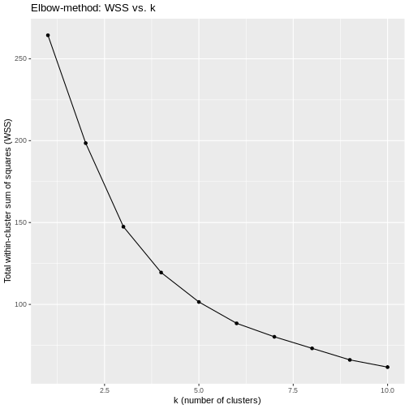
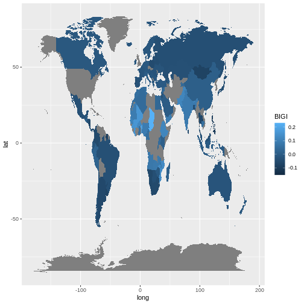
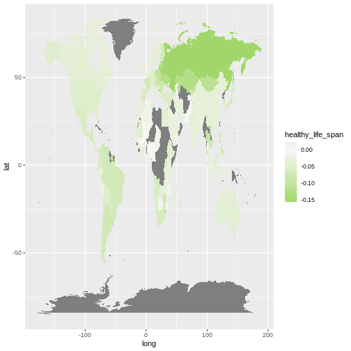
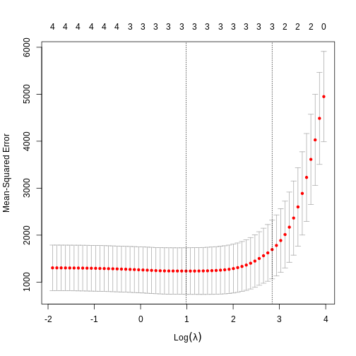

Content from Reproducible Data Analysis
Last updated on 2025-04-15 | Edit this page
Estimated time: 12 minutes
Overview
Questions
- How do I ensure that my results can be reproduced?
Objectives
- Explain how to use markdown
- Demonstrate how to include pieces of code
Introduction
A key concept in the scientific process is reproducibility. We should be able to run the same experiment again, and get, more or less, the same result.
We will not always get the same result, applying the same functions on the same data - some statistical techniques relies on randomness.
An example is k-means, that clusters data based on randomly selected initial centroids.
This also applies to the analysis of data. If we have a collection of measurements of blood pressure from patients before and after they have taken an antihypertensive drug, we might arrive at the result that this specific drug is not working. Doing the same analysis tomorrow, we should reach the same result.
And that can be surprisingly difficult!
There are a lot of pitfalls, ranging from accessibility to incentive structures in academia. But the three areas where R can help us are:
- Software Environment
- Documentation and Metadata
- Complex Workflows
Software Environment
Data analysis is done using specific software, libraries or packages, in a variety of versions. And it happens in an environment on the computer that might not be identical from day to day.
One example of these problems is shown every time we load tidyverse:

This message informs us that there is a filter()
function in the stats packages which is part of the core
R-installation. That function is masked by the filter()
function from the tidyverse´ packagedplyr`.
If our analysis relies on the way the filter() function
works in the tidyverse, we will get errors if
tidyverse is not loaded.
We might also have data stored in memory. Every time we close RStudio, we are asked if we want to save the environment:

This will save all the objects we have in our environment, in order for RStudio to be able to load them into memory when we open RStudio again.
That can be nice and useful. On the other hand we run the risk of
having the wrong version of the
my_data_that_is_ready_for_analysis dataframe lying around
in memory.
In addition we can experience performance problems. Storing a lot of large objects before closing RStudio can take a lot of time. And loading them into memory when opening RStudio will also take a lot of time.
On modern computers we normally have plenty of storage - but it is entirely possible to fill your harddrive with R-environments to the point where your computer crashes.
Documentation and Metadata
What did we actually do in the analysis? Why did we do it? Why are we reaching the conclusion we’ve arrived at?
Three very good questions. Having good metadata, data that describes your data, often makes understanding your data easier. Documenting the individual steps of your analysis, may not seem necessary right now - you know why you are doing what you are doing. But future you - you in three months, or some one else, might not remember or be able to guess (correctly).
Complex Workflows
Doing data analysis in eg Excel, can involve a lot of pointing and clicking.
And in any piece of software, the analysis will normally always involve more than one step. Those steps will have to be done in the correct order. Calculating a mean of some values, depends heavily on whether it happens before or after deleting irrelevant observations.
The solution to all of this!

Working in RMarkdown allows us to collect the text describing our data, what and why we are doing what we do, the code actually doing it, and the results of that code - all in one document.
Open a new file, choose RMarkdown, and give your document a name:

The code chunks, marked here with a light grey background, contains code, in this case not very advanced code. You can run the entire code chunk by clicking the green arrow on the right. Or by placing your cursor in the line of code you want to run, and pressing ctrl+enter (or command+enter on a Mac).
Outside the code chunks we can add our reasons for actually running
summary on the cars dataframe, and describe
what it contains.
You will see a new button in RStudio: 
Clicking this, will “knit” your document; run each chunck of code, add the output to your document, and combine your code, the results and all your explanatory text to one html-document.
If you do not want an HTMl-document, you can knit to a MicroSoft Word document. Depending on your computer, you can knit directly to a pdf.
Having the entirety of your analysis in an RMarkdown document, and then running it, ensures that the individual steps in the analysis are run in the correct order.
It does not ensure that your documentation of what you do is written - it makes it easy to add it, but you still have to do it.
But what about the environment?
So we force ourself to have the steps in our analysis in the correct order, and we make it easy to add documentation. What about the environment?
Working with RMarkdown also adresses this problem. Every time we
knit our document, RStudio opens a new session of R,
without libraries or objects in memory. This ensures that the analysis
is done in the exact same way each and every time.
This, on the other hand, requires us to add code chunks loading libraries and data to our document.
Try it yourself
Make a new RMarkdown document, add library(tidyverse) to
the first chunk, add your own text, and change the plot to plot the
distance variable from the cars data set.
Make a new RMarkdown document - File -> New File -> R Markdown.
Change the final code chunk to include plot(cars$dist)
instead of plot(pressure), and add library(tidyverse).
Key Points
- Use RMarkdown to enforce reproducible analysis
Content from Reading data from file
Last updated on 2025-04-15 | Edit this page
Estimated time: 12 minutes
Overview
Questions
- How do you read in data from files?
Objectives
- Explain how to read in data from a selection of different data files.
Introduction
The first step of doing dataanalysis, is normally to read in the data.
Data can come from many different sources, and it is practically impossible to cover every possible format. Here we cover some of the more common.
The most important point is that there is a very high probability that at least one package exists that is designed to read a specific weird data format.

Use code!
RStudio makes it simple to load most common data formats: Click on the file in the “Files” tab in RStudio, and choose “Import Dataset”:

RStudio will then provide an interface for loading the data:

However in general we prefer to have a script or a document, that can be run without us pointing and clicking. So - instead of importing the data in this way, copy the code that RStudio uses to import the data, and paste it into your script or document.
CSV-files
The most basic file type for storing and transferring data. A “simple” textfile, containing tabular data. One line of text for each row of data, each cell in that row, corresponding to a column, separated with a separator, typically a comma.
Many languages use commas as decimal separators. That neccesitates an option for using something else than a comma. Typically a semicolon.
Truly commaseparated files
Use read.csv() (from base-R) or read_csv()
(from readr, included in tidyverse)
We recommend using read_csv().
Semicolon separated files
Use read.csv2() (from base-R) or
read_csv2() (from readr, included in
tidyverse)
We recommend read_csv2()
What they have in common
read_csv and read_csv2 take a lot of
arguments that can control datatypes, handling of headers etc. For most
use, the default options are enough, but if you need to adjust
something, there are plenty of options for that.
guess_max
read_csv and read_csv2 tries to guess the
datatypes in the file, and will convert the data accordingly. That will
return a dataframe where date-time data is stored as such. The functions
by default reads the first 1000 rows, and makes a guess on the datatype
based on that.
That can lead to problems if the first 1000 rows of a column contain
numbers, and row 1001 contains text. In that case the entire row will be
coerced to numeric, and the following rows will contain
NA values. Adjust the argument guess_max to
something larger to catch this problem.
To include every row in the guess, add guess_max = Inf -
but be careful if you have a very large dataset.
Excel-files
Use the readxl package. Excel comes in two variants,
xls and xlsx. read_excel() makes
a qualified quess of the actual type your excel-file is. Should we need
to specify, we can use read_xls() or
read_xlsx().
Workbooks often contains more than one sheet. We can specify which we want to read in:
read_excel(path = "filename", sheet = 2)
Which will read in sheet number 2 from the workbook “filename”.
Read the documentation for details on how to read in specific cells or ranges.
SPSS
SPSS, originally “Statistical Package for the Social Sciences”, later renamed “Statistical Product and Service Solutions” is a proprietary statistical software suite developed by IBM.
Not surprisingly it is widely used in social science.
The package haven supports reading SPSS (Stata and SAS)
files
Use the package to read in spss files:
R
library(haven)
read_spss("filename")
The function returns at tibble.
Note that SPSS uses a variety of different formats.
read_spss() will make a guess of the correct format, but if
problems arise, try using one of the other functions provided in
haven
Stata
Stata is a proprietary statistical software package, used in a multitude of different fields, primarily biomedicine, epidemiololy, sociology and economics.
As mentioned above, the haven package provides functions
for reading Stata files:
R
library(haven)
read_stata("filename")
The function returns at tibble.
As with SPSS Stata uses a couple of different fileformats, and
read_stata makes a guess as to which format is used. If
problems arise, haven has more specific functions for
reading specific file formats.
SAS
SAS is a proprietary statistical software suite developed by SAS Institute.

The package haven can read SAS-files:
R
library(haven)
read_sas("filename")
The function returns at tibble.
As with SPSS and Stata, SAS uses a couple of different fileformats,
and read_sas tries to guess the correct format.
If problems arise, haven has more specific functions for
reading specific file formats.
JSON
Not all data come in a nice rectangular format, note the multiple phone numbers for the White House:
CountryUSA |
NameNASA |
Phonenumber
|
|
| White House |
(202)-456-1111 |
||
| Russia | Kremlin | 0107-095-295-9051 | |
| Vatican | The Pope | 011-39-6-6982 | |
There are two locations in the US, and one of them have two phone numbers. These kinds of structures, where one row contains data with more than one row (etc), are called nested, and are often stored or distributed in the JSON-format.
JSON can be read using fromJSON() from the
jsonlite library.
R
library(jsonlite)
fromJSON("filename")
Note that you will end up with nested columns - containing lists - which you probably will have to handle afterwards.
Other formats
In general if a piece of software is in widespread enough use that you encounter the weird file-format it uses, someone will have written a package for reading it. Google is your friend here!
Also, if you encounter a really weird dataformat, please send us an example so we can expand our knowledge.
Key Points
- The
readrversion ofread_csv()is preferred - Remember that csv is not always actually separated with commas.
- The
havenpackage contains functions for reading common proprietary file formats. - In general a package will exist for reading strange datatypes. Google is your friend!
- Use code to read in your data
Content from Descriptive Statistics
Last updated on 2025-04-15 | Edit this page
Estimated time: 12 minutes
Overview
Questions
- How can we describe a set of data?
Objectives
- Learn about the most common ways of describing a variable
Introduction
Det kan være en udfordring hvis deltagene ikke ved hvad et gennemsnit er.
En af de overordnede pointer vi gerne vil frem til her, er percentilerne og det kumulative densitetsplot - der danner grundlag for forståelsen af normalfordelingens sammenhæng med statistiske tests.
Descriptive statistic involves summarising or describing a set of data. It usually presents quantitative descriptions in a short form, and helps to simplify large datasets.
Most descriptive statistical parameters applies to just one variable in our data, and includes:
| Central tendency | Measure of variation | Measure of shape |
|---|---|---|
| Mean | Range | Skewness |
| Median | Quartiles | Kurtosis |
| Mode | Inter Quartile Range | |
| Variance | ||
| Standard deviation | ||
| Percentiles |
Central tendency
The easiest way to get summary statistics on data is to use the
summarise function from the tidyverse
package.
R
library(tidyverse)
In the following we are working with the palmerpenguins
dataset. Note that the actual data is called penguins and
is part of the package palmerpenguins:
R
library(palmerpenguins)
head(penguins)
OUTPUT
# A tibble: 6 × 8
species island bill_length_mm bill_depth_mm flipper_length_mm body_mass_g
<fct> <fct> <dbl> <dbl> <int> <int>
1 Adelie Torgersen 39.1 18.7 181 3750
2 Adelie Torgersen 39.5 17.4 186 3800
3 Adelie Torgersen 40.3 18 195 3250
4 Adelie Torgersen NA NA NA NA
5 Adelie Torgersen 36.7 19.3 193 3450
6 Adelie Torgersen 39.3 20.6 190 3650
# ℹ 2 more variables: sex <fct>, year <int>344 penguins have been recorded at three different islands over three years. Three different penguin species are in the dataset, and we have data on their weight, sex, length of their flippers and two measurements of their bill (beak).
 {Copyright Allison
Horst}
{Copyright Allison
Horst}
Specifically we are going to work with the weight of the penguins,
stored in the variable body_mass_g:
R
penguins$body_mass_g
OUTPUT
[1] 3750 3800 3250 NA 3450 3650 3625 4675 3475 4250 3300 3700 3200 3800 4400
[16] 3700 3450 4500 3325 4200 3400 3600 3800 3950 3800 3800 3550 3200 3150 3950
[31] 3250 3900 3300 3900 3325 4150 3950 3550 3300 4650 3150 3900 3100 4400 3000
[46] 4600 3425 2975 3450 4150 3500 4300 3450 4050 2900 3700 3550 3800 2850 3750
[61] 3150 4400 3600 4050 2850 3950 3350 4100 3050 4450 3600 3900 3550 4150 3700
[76] 4250 3700 3900 3550 4000 3200 4700 3800 4200 3350 3550 3800 3500 3950 3600
[91] 3550 4300 3400 4450 3300 4300 3700 4350 2900 4100 3725 4725 3075 4250 2925
[106] 3550 3750 3900 3175 4775 3825 4600 3200 4275 3900 4075 2900 3775 3350 3325
[121] 3150 3500 3450 3875 3050 4000 3275 4300 3050 4000 3325 3500 3500 4475 3425
[136] 3900 3175 3975 3400 4250 3400 3475 3050 3725 3000 3650 4250 3475 3450 3750
[151] 3700 4000 4500 5700 4450 5700 5400 4550 4800 5200 4400 5150 4650 5550 4650
[166] 5850 4200 5850 4150 6300 4800 5350 5700 5000 4400 5050 5000 5100 4100 5650
[181] 4600 5550 5250 4700 5050 6050 5150 5400 4950 5250 4350 5350 3950 5700 4300
[196] 4750 5550 4900 4200 5400 5100 5300 4850 5300 4400 5000 4900 5050 4300 5000
[211] 4450 5550 4200 5300 4400 5650 4700 5700 4650 5800 4700 5550 4750 5000 5100
[226] 5200 4700 5800 4600 6000 4750 5950 4625 5450 4725 5350 4750 5600 4600 5300
[241] 4875 5550 4950 5400 4750 5650 4850 5200 4925 4875 4625 5250 4850 5600 4975
[256] 5500 4725 5500 4700 5500 4575 5500 5000 5950 4650 5500 4375 5850 4875 6000
[271] 4925 NA 4850 5750 5200 5400 3500 3900 3650 3525 3725 3950 3250 3750 4150
[286] 3700 3800 3775 3700 4050 3575 4050 3300 3700 3450 4400 3600 3400 2900 3800
[301] 3300 4150 3400 3800 3700 4550 3200 4300 3350 4100 3600 3900 3850 4800 2700
[316] 4500 3950 3650 3550 3500 3675 4450 3400 4300 3250 3675 3325 3950 3600 4050
[331] 3350 3450 3250 4050 3800 3525 3950 3650 3650 4000 3400 3775 4100 3775How can we describe these values?
Mean
The mean is the average of all datapoints. We add all values
(excluding the missing values encoded with NA), and divide
with the number of observations:
\[\overline{x} = \frac{1}{N}\sum_1^N x_i\] Where N is the number of observations, and \(x_i\) is the individual observations in the sample \(x\).
The easiest way of getting the mean is using the mean()
function:
R
mean(penguins$body_mass_g, na.rm = TRUE)
OUTPUT
[1] 4201.754A slightly more cumbersome way is using the summarise()
function from tidyverse:
R
penguins %>%
summarise(avg_mass = mean(body_mass_g, na.rm = T))
OUTPUT
# A tibble: 1 × 1
avg_mass
<dbl>
1 4202.As we will see below, this function streamlines the process of getting multiple descriptive values.
Barring significant outliers, mean is an expression of
position of the data. This is the weight we would expect a random
penguin in our dataset to have.
However, we have three different species of penguins in the dataset, and they have quite different average weights. There is also a significant difference in the average weight for the two sexes.
We will get to that at the end of this segment.
Median
Similarly to the average/mean, the median is an
expression of the location of the data. If we order our data by size,
from the smallest to the largest value, and locate the middle
observation, we get the median. This is the value that half of the
observations is smaller than. And half the observations is larger.
R
median(penguins$body_mass_g, na.rm = TRUE)
OUTPUT
[1] 4050We can note that the mean is larger than the median. This indicates that the data is skewed, in this case toward the larger penguins.
We can get both median and mean in one go
using the summarise() function:
R
penguins %>%
summarise(median = median(body_mass_g, na.rm = TRUE),
mean = mean(body_mass_g, na.rm = TRUE))
OUTPUT
# A tibble: 1 × 2
median mean
<dbl> <dbl>
1 4050 4202.This illustrates for the learners that we can calculate more than one summary statistics in one summarise function.
Mode
Mode is the most common, or frequently occurring, observation. R does not have a build-in function for this, but we can easily find the mode by counting the different observations,and locating the most common one.
We typically do not use this for continous variables. The mode of the
sex variable in this dataset can be found like this:
R
penguins %>%
count(sex) %>%
arrange(desc(n))
OUTPUT
# A tibble: 3 × 2
sex n
<fct> <int>
1 male 168
2 female 165
3 <NA> 11We count the different values in the sex variable, and
arrange the counts in descending order (desc). The mode of
the sex variable is male.
In this specific case, we note that the dataset is pretty evenly balanced regarding the two sexes.
Measures of variance
Knowing where the observations are located is interesting. But how do they vary? How can we describe the variation in the data?
Range
The simplest information about the variation is the range. What is the smallest and what is the largest value? Or, what is the spread?
We can get that by using the min() and
max() functions in a summarise() function:
R
penguins %>%
summarise(min = min(body_mass_g, na.rm = T),
max = max(body_mass_g, na.rm = T))
OUTPUT
# A tibble: 1 × 2
min max
<int> <int>
1 2700 6300There is a dedicated function, range(), that does the
same. However it returns two values (for each row), and the summarise
function expects to get one value.
If we would like to use the range() function, we can add
it using the reframe() function instead of
summarise():
R
penguins %>%
reframe(range = range(body_mass_g, na.rm = T))
OUTPUT
# A tibble: 2 × 1
range
<int>
1 2700
2 6300Hvorfor ikke bare bruge reframe generelt? Kognitivt load. Summarise angiver hvad det er vi gør. Vi summariser noget data. Reframe angiver hvordan vi omdanner et output til en dataframe. Resultatet bliver det samme, men vi taler ikke længere om hvad det egentlig er vi er ude efter i operationen.
Variance
The observations varies. They are not all located at the mean (or median), but are spread out on both sides of the mean. Can we get a numerical value describing that?
An obvious way would be to calculate the difference between each of the observations and the mean, and then take the average of those differences.
That will give us the average deviation. But we have a problem. The average weight of penguins was 4202 (rounded). Look at two penguins, one weighing 5000, and another weighing 3425. The differences are:
- 5000 - 4202 = 798
- 3425 - 4202 = -777
The sum of those two differences is: -777 + 798 = 21 g. And the average is then 10.5 gram. That is not a good estimate of a variation from the mean of more than 700 gram.
The problem is, that the differences can be both positive and negative, and might cancel each other out.
We solve that problem by squaring the differences, and calculate the mean of those.
Why not just averaging the absolute values? Using the square rather than the absolute difference, weighs the deviations so larger deviations have relatively larger influence on the variance. Squaring results in a continous and differentiable function, which helps in situations where we have to do an optimisation. Also the normal distribution is defined by the variance as defined here, and we would really like to get a connection between what we observe here, and the normal distribution.
For the population variance, the mathematical notation would be:
\[ \sigma^2 = \frac{\sum_{i=1}^N(x_i - \mu)^2}{N} \]
Population or sample?
Why are we suddenly using \(\mu\) instead of \(\overline{x}\)? Because this definition uses the population mean. The mean, or average, in the entire population of all penguins everywhere in the universe. But we have not weighed all those penguins.
And the sample variance:
\[ s^2 = \frac{\sum_{i=1}^N(x_i - \overline{x})^2}{N-1} \]
Note that we also change the \(\sigma\) to an \(s\).
And again we are not going to do that by hand, but will ask R to do it for us:
R
penguins %>%
summarise(
variance = var(body_mass_g, na.rm = T)
)
OUTPUT
# A tibble: 1 × 1
variance
<dbl>
1 643131.Et godt spørgsmål vil være - hvorfor dividerer vi med N-1 i stedet for N?
Det kaldes for en “Bessel korrektion”. Den ene årsag til at vi gør det er, at godt nok er gennemsnittet i stikprøven et godt estimat for gennemsnittet i populationen. Men det er ikke præcis det samme. Når vi dividerer med et mindre tal, får vi en større værdi for variancen - og dermed et mere konservativt, eller forsigtigt, estimat på variansen.
Den anden årsag handler om frihedsgrader. Hvis vi har tre værdier og et gennemsnit, kan vi vælge hvad de to af værdierne er, og hvad gennemsnittet er. Helt frit. Men den tredie værdi er givet. Den kan vi ikke vælge frit.
Standard deviation
There is a problem with the variance. It is 643131, completely off scale from the actual values. There is also a problem with the unit which is in \(g^2\).
A measurement of the variation of the data would be the standard deviation, simply defined as the square root of the variance:
R
penguins %>%
summarise(
s = sd(body_mass_g, na.rm = T)
)
OUTPUT
# A tibble: 1 × 1
s
<dbl>
1 802.Since the standard deviation occurs in several statistical tests, it is more frequently used than the variance. It is also more intuitively relateable to the mean.
A histogram
A visual illustration of the data can be nice. Often one of the first we make, is a histogram.
A histogram is a plot or graph where we split the range of observations in a number of “buckets”, and count the number of observations in each bucket:
R
penguins %>%
select(body_mass_g) %>%
filter(!is.na(body_mass_g)) %>%
mutate(buckets = cut(body_mass_g, breaks=seq(2500,6500,500))) %>%
group_by(buckets) %>%
summarise(antal = n())
OUTPUT
# A tibble: 8 × 2
buckets antal
<fct> <int>
1 (2.5e+03,3e+03] 11
2 (3e+03,3.5e+03] 67
3 (3.5e+03,4e+03] 92
4 (4e+03,4.5e+03] 57
5 (4.5e+03,5e+03] 54
6 (5e+03,5.5e+03] 33
7 (5.5e+03,6e+03] 26
8 (6e+03,6.5e+03] 2Typically, rather than counting ourself, we leave the work to R, and make a histogram directly:
R
penguins %>%
ggplot((aes(x=body_mass_g))) +
geom_histogram()
OUTPUT
`stat_bin()` using `bins = 30`. Pick better value with `binwidth`.WARNING
Warning: Removed 2 rows containing non-finite outside the scale range
(`stat_bin()`).
By default ggplot chooses 30 bins, typically we should chose a different number:
R
penguins %>%
ggplot((aes(x=body_mass_g))) +
geom_histogram(bins = 25)
WARNING
Warning: Removed 2 rows containing non-finite outside the scale range
(`stat_bin()`).
Or, ideally, set the widths of them, manually:
R
penguins %>%
ggplot((aes(x=body_mass_g))) +
geom_histogram(binwidth = 250) +
ggtitle("Histogram with binwidth = 250 g")
WARNING
Warning: Removed 2 rows containing non-finite outside the scale range
(`stat_bin()`). Or even specify the exact intervals we want, here intervals from 0 to
6500 gram in intervals of 250 gram:
Or even specify the exact intervals we want, here intervals from 0 to
6500 gram in intervals of 250 gram:
R
penguins %>%
ggplot((aes(x=body_mass_g))) +
geom_histogram(breaks = seq(0,6500,250)) +
ggtitle("Histogram with bins in 250 g steps from 0 to 6500 g")
WARNING
Warning: Removed 2 rows containing non-finite outside the scale range
(`stat_bin()`). The histogram provides us with a visual indication of both range, the
variation of the values, and an idea about where the data is
located.
The histogram provides us with a visual indication of both range, the
variation of the values, and an idea about where the data is
located.
Quartiles
The median can be understood as splitting the data in two equally sized parts, where one is characterized by having values smaller than the median and the other as having values larger than the median. It is the value where 50% of the observations are smaller.
Similary we can calculate the value where 25% of the observations are smaller.
That is often called the first quartile, where the median is the 50%, or second quartile. Quartile implies four parts, and the existence of a third or 75% quartile.
We can calcultate those using the quantile function:
R
quantile(penguins$body_mass_g, probs = .25, na.rm = T)
OUTPUT
25%
3550 and
R
quantile(penguins$body_mass_g, probs = .75, na.rm = T)
OUTPUT
75%
4750 probs because if we select a random penguin, we have a 25% chance of selecting a penguin that weighs less than 3550 gram. This ties in to percentiles and qq-plots.
We are often interested in knowing the range in which 50% of the observations fall.
That is used often enough that we have a dedicated function for it:
R
penguins %>%
summarise(iqr = IQR(body_mass_g, na.rm = T))
OUTPUT
# A tibble: 1 × 1
iqr
<dbl>
1 1200The name of the quantile function implies that we might have other quantiles than quartiles. Actually we can calculate any quantile, eg the 2.5% quantile:
R
quantile(penguins$body_mass_g, probs = .025, na.rm = T)
OUTPUT
2.5%
2988.125 The individual quantiles can be interesting in themselves. If we want a visual representation of all quantiles, we can calculate all of them, and plot them.
Instead of doing that by hand, we can use a concept called CDF or cumulative density function:
R
CDF <- ecdf(penguins$body_mass_g)
CDF
OUTPUT
Empirical CDF
Call: ecdf(penguins$body_mass_g)
x[1:94] = 2700, 2850, 2900, ..., 6050, 6300That was not very informative. Lets plot it:

den skal vi nok have beskrevet lidt mere.
Men pointen er, at vi for enhver værdi kan aflæse ting. Hvor stor en andel af pingvinerne vejer mindre end 3000 g? Vi kan finde 3000 på x-aksen, og aflæse den matchende værdi på y-aksen.
Det svarer også til - hvis vi tager en tilfældig pingvin, hvad er så sandsynligheden for at den vejer mindre end 3000 gram? Eller for at den vejer mere end 5000 gram?
Measures of shape
Skewness
We previously saw a histogram of the data, and noted that the observations were skewed to the left, and that the “tail” on the right was longer than on the left. That skewness can be quantised.
There is no function for skewness build into R, but we can get it
from the library e1071
R
library(e1071)
skewness(penguins$body_mass_g, na.rm = T)
OUTPUT
[1] 0.4662117The skewness is positive, indicating that the data are skewed to the left, just as we saw. A negative skewness would indicate that the data skew to the right.
Nej, det er ikke på nogen måde intuitivt. Vi må nok finde ud af hvorfor konventionen er som den er.
Kurtosis
Another parameter describing the shape of the data is kurtosis. We can think of that as either “are there too many observations in the tails?” leading to a relatively low peak. Or, as “how pointy is the peak” - because the majority of observations are centered in the peak, rather than appearing in the tails.
We use the e1071 package again:
R
kurtosis(penguins$body_mass_g, na.rm = T)
OUTPUT
[1] -0.73952Kurtosis is defined weirdly, and here we get “excess” kurtosis, the actual kurtosis minus 3. We have negative kurtosis, indicating that the peak is flat, and the tails are fat.
Everything Everywhere All at Once
A lot of these descriptive values can be gotten for every variable in
the dataset using the summary function:
R
summary(penguins)
OUTPUT
species island bill_length_mm bill_depth_mm
Adelie :152 Biscoe :168 Min. :32.10 Min. :13.10
Chinstrap: 68 Dream :124 1st Qu.:39.23 1st Qu.:15.60
Gentoo :124 Torgersen: 52 Median :44.45 Median :17.30
Mean :43.92 Mean :17.15
3rd Qu.:48.50 3rd Qu.:18.70
Max. :59.60 Max. :21.50
NA's :2 NA's :2
flipper_length_mm body_mass_g sex year
Min. :172.0 Min. :2700 female:165 Min. :2007
1st Qu.:190.0 1st Qu.:3550 male :168 1st Qu.:2007
Median :197.0 Median :4050 NA's : 11 Median :2008
Mean :200.9 Mean :4202 Mean :2008
3rd Qu.:213.0 3rd Qu.:4750 3rd Qu.:2009
Max. :231.0 Max. :6300 Max. :2009
NA's :2 NA's :2 Here we get the range, the 1st and 3rd quantiles (and from those the IQR), the median and the mean and, rather useful, the number of missing values in each variable.
We can also get all the descriptive values in one table, by adding more than one summarizing function to the summarise function:
R
penguins %>%
summarise(min = min(body_mass_g, na.rm = T),
max = max(body_mass_g, na.rm = T),
mean = mean(body_mass_g, na.rm = T),
median = median(body_mass_g, na.rm = T),
stddev = sd(body_mass_g, na.rm = T),
var = var(body_mass_g, na.rm = T),
Q1 = quantile(body_mass_g, probs = .25, na.rm = T),
Q3 = quantile(body_mass_g, probs = .75, na.rm = T),
iqr = IQR(body_mass_g, na.rm = T),
skew = skewness(body_mass_g, na.rm = T),
kurtosis = kurtosis(body_mass_g, na.rm = T)
)
OUTPUT
# A tibble: 1 × 11
min max mean median stddev var Q1 Q3 iqr skew kurtosis
<int> <int> <dbl> <dbl> <dbl> <dbl> <dbl> <dbl> <dbl> <dbl> <dbl>
1 2700 6300 4202. 4050 802. 643131. 3550 4750 1200 0.466 -0.740As noted, we have three different species of penguins in the dataset. Their weight varies a lot. If we want to do the summarising on each for the species, we can group the data by species, before summarising:
R
penguins %>%
group_by(species) %>%
summarise(min = min(body_mass_g, na.rm = T),
max = max(body_mass_g, na.rm = T),
mean = mean(body_mass_g, na.rm = T),
median = median(body_mass_g, na.rm = T),
stddev = sd(body_mass_g, na.rm = T)
)
OUTPUT
# A tibble: 3 × 6
species min max mean median stddev
<fct> <int> <int> <dbl> <dbl> <dbl>
1 Adelie 2850 4775 3701. 3700 459.
2 Chinstrap 2700 4800 3733. 3700 384.
3 Gentoo 3950 6300 5076. 5000 504.We have removed some summary statistics in order to get a smaller table.
Boxplots
Finally boxplots offers a way of visualising some of the summary statistics:
R
penguins %>%
ggplot(aes(x=body_mass_g, y = sex)) +
geom_boxplot()
WARNING
Warning: Removed 2 rows containing non-finite outside the scale range
(`stat_boxplot()`).
The boxplot shows us the median (the fat line in the middel of each box), the 1st and 3rd quartiles (the ends of the boxes), and the range, with the whiskers at each end of the boxes, illustrating the minimum and maximum. Any observations, more than 1.5 times the IQR from either the 1st or 3rd quartiles, are deemed as outliers and would be plotted as individual points in the plot.
Counting
Most of the descriptive functions above are focused on continuous variables, maybe grouped by one or more categorical variables.
What about the categorical themselves?
The one thing we can do looking only at categorical variables, is counting.
Counting the different values in a single categorical variable in
base-R is done using the table(() function
R
table(penguins$sex)
OUTPUT
female male
165 168 Often we are interested in cross tables, tables where we count the different combinations of the values in more than one categorical variable, eg the distribution of the two different penguin sexes on the three different islands:
R
table(penguins$island, penguins$sex)
OUTPUT
female male
Biscoe 80 83
Dream 61 62
Torgersen 24 23We can event group on three (or more) categorical variables, but the output becomes increasingly difficult to read the mote variables we add:
R
table(penguins$island, penguins$sex, penguins$species)
OUTPUT
, , = Adelie
female male
Biscoe 22 22
Dream 27 28
Torgersen 24 23
, , = Chinstrap
female male
Biscoe 0 0
Dream 34 34
Torgersen 0 0
, , = Gentoo
female male
Biscoe 58 61
Dream 0 0
Torgersen 0 0Aggregate
A different way of doing that in base-R is using the
aggregate() function:
R
aggregate(sex ~ island, data = penguins, FUN = length)
OUTPUT
island sex
1 Biscoe 163
2 Dream 123
3 Torgersen 47Here we construct the crosstable using the formula notation, and
specify which function we want to apply on the results. This can be used
to calculate summary statistics on groups, by adjusting the
FUN argument.
Counting in tidyverse
In tidyverse we will typically group the data by the variables we want to count, and then tallying them:
R
penguins %>%
group_by(sex) %>%
tally()
OUTPUT
# A tibble: 3 × 2
sex n
<fct> <int>
1 female 165
2 male 168
3 <NA> 11group_by works equally well with more than one
group:
R
penguins %>%
group_by(sex, species) %>%
tally()
OUTPUT
# A tibble: 8 × 3
# Groups: sex [3]
sex species n
<fct> <fct> <int>
1 female Adelie 73
2 female Chinstrap 34
3 female Gentoo 58
4 male Adelie 73
5 male Chinstrap 34
6 male Gentoo 61
7 <NA> Adelie 6
8 <NA> Gentoo 5But the output is in a long format, and often requires some manipulation to get into a wider tabular format.
A shortcut exists in tidyverse, count, which combines
group_by and tally:
R
penguins %>%
count(sex, species)
OUTPUT
# A tibble: 8 × 3
sex species n
<fct> <fct> <int>
1 female Adelie 73
2 female Chinstrap 34
3 female Gentoo 58
4 male Adelie 73
5 male Chinstrap 34
6 male Gentoo 61
7 <NA> Adelie 6
8 <NA> Gentoo 5Key Points
- We have access to a lot of summarising descriptive indicators the the location, spread and shape of our data.
Content from Table One
Last updated on 2025-04-15 | Edit this page
Estimated time: 12 minutes
Overview
Questions
- How do you make a Table One?
Objectives
- Explain what a Table One is
- Know how to make a Tabel One and adjust key parameters
What is a “Table One”?
Primarily used in medical and epidemiological research, a Table One is typically the first table in any publication using data.
It presents the baseline characteristics of the participants in a study, and provides a concise overview of the relevant demographic and clinical variables.
It typically compares different groups (male~female, treatment~control), to highlight similarities and differences.
It can look like this:
|
control
|
case
|
Overall
|
||||
|---|---|---|---|---|---|---|
|
no (N=298) |
yes (N=48) |
no (N=135) |
yes (N=29) |
no (N=433) |
yes (N=77) |
|
| Age (years) | ||||||
| Mean (SD) | 61.3 (4.75) | 58.9 (5.68) | 61.5 (4.85) | 58.1 (5.32) | 61.4 (4.78) | 58.6 (5.53) |
| Median [Min, Max] | 62.0 [46.0, 69.0] | 59.0 [46.0, 68.0] | 62.0 [45.0, 69.0] | 58.0 [49.0, 68.0] | 62.0 [45.0, 69.0] | 58.0 [46.0, 68.0] |
| testost | ||||||
| Mean (SD) | 25.3 (13.2) | 22.2 (10.7) | 27.6 (16.1) | 28.2 (15.6) | 26.0 (14.2) | 24.4 (13.0) |
| Median [Min, Max] | 23.0 [4.00, 111] | 21.5 [8.00, 63.0] | 25.0 [6.00, 144] | 24.0 [10.0, 69.0] | 23.0 [4.00, 144] | 22.0 [8.00, 69.0] |
| Missing | 6 (2.0%) | 2 (4.2%) | 3 (2.2%) | 1 (3.4%) | 9 (2.1%) | 3 (3.9%) |
| prolactn | ||||||
| Mean (SD) | 9.60 (5.10) | 13.7 (12.3) | 10.8 (6.79) | 9.57 (3.29) | 9.99 (5.70) | 12.2 (10.1) |
| Median [Min, Max] | 8.16 [1.96, 37.3] | 8.81 [3.87, 55.8] | 9.30 [2.66, 59.9] | 8.88 [4.49, 17.6] | 8.64 [1.96, 59.9] | 8.84 [3.87, 55.8] |
| Missing | 14 (4.7%) | 0 (0%) | 6 (4.4%) | 1 (3.4%) | 20 (4.6%) | 1 (1.3%) |
Please note that the automatic styling of this site results in a table-one that is not very nice looking.
We have 510 participants in a study, split into control and case groups, and further subdivided into two groups based on PostMenopausal Hormone use. It describes the distribution of sex and concentration of testosterone and prolactin in a blood sample.
How do we make that?
Structuring the data
Most things in R are simple to do (but rarely simple to understand) when the data has the correct structure.
If we follow the general rules of thumb for tidy data, we are off to a good start. This is the structure of the data set we are working with here - after we have made some modifications as described above.
R
head(blood)
OUTPUT
# A tibble: 6 × 8
ID matchid case curpmh ageblood estradol testost prolactn
<dbl> <dbl> <fct> <fct> <dbl> <dbl> <dbl> <dbl>
1 100013 164594 control yes 46 57 25 11.1
2 100241 107261 control no 65 11 NA 2.8
3 100696 110294 control yes 66 3 8 38
4 101266 101266 case no 57 4 6 8.9
5 101600 101600 case no 66 6 25 6.9
6 102228 155717 control yes 57 10 31 13.9The important thing to note is that when we stratify the summary statistics by some variable, this variable have to be a categorical variable. The variables we want to do summary statistics on also have to have the correct type. Are the values categorical, the column in the dataframe have to actually be categorical. Are they numeric, the data type have to be numeric.
And having the data - how do we actually do it?
A number of packages making it easy to make a Table One exists. Here
we look at the package table1.
The specific way of doing it depends on the data available. If we do not have data on the weight of the participants, we are not able to describe the distribution of their weight.
Let us begin by looking at the data. We begin by loading the two
packages tidyverse and table1. We then read in
the data from the csv-file “BLOOD.csv”, which we have downloaded
from this link.
R
library(tidyverse)
library(table1)
blood <- read_csv("data/BLOOD.csv")
head(blood)
OUTPUT
# A tibble: 6 × 9
ID matchid case curpmh ageblood estradol estrone testost prolactn
<dbl> <dbl> <dbl> <dbl> <dbl> <dbl> <dbl> <dbl> <dbl>
1 100013 164594 0 1 46 57 65 25 11.1
2 100241 107261 0 0 65 11 26 999 2.8
3 100696 110294 0 1 66 3 999 8 38
4 101266 101266 1 0 57 4 18 6 8.9
5 101600 101600 1 0 66 6 18 25 6.9
6 102228 155717 0 1 57 10 999 31 13.9510 rows. Its a case-control study, where the ID represents one individual, and matchid gives us the link between cases and controls. Ageblood is the age of the individual at the time when the blood sample was drawn, and we then have levels of four different hormones.
The data contains missing values, coded as “999.0” for estrone and testost, and 99.99 for prolactin.
Let us fix that:
R
blood <- blood %>%
mutate(estrone = na_if(estrone, 999.0)) %>%
mutate(testost = na_if(testost, 999.0)) %>%
mutate(prolactn = na_if(prolactn, 99.99))
We then ensure that categorical values are stored as categorical values, and adjust the labels of those categorical values:
R
blood <- blood %>%
mutate(case = factor(case, labels = c("control", "case"))) %>%
mutate(curpmh = factor(curpmh, labels = c("no", "yes")))
And now we can make our table one like this. Note that we only include testosterone and prolactin, in order to get a more manageble table 1:
R
table1(~ageblood + testost + prolactn|case + curpmh, data = blood)
|
control
|
case
|
Overall
|
||||
|---|---|---|---|---|---|---|
|
no (N=298) |
yes (N=48) |
no (N=135) |
yes (N=29) |
no (N=433) |
yes (N=77) |
|
| ageblood | ||||||
| Mean (SD) | 61.3 (4.75) | 58.9 (5.68) | 61.5 (4.85) | 58.1 (5.32) | 61.4 (4.78) | 58.6 (5.53) |
| Median [Min, Max] | 62.0 [46.0, 69.0] | 59.0 [46.0, 68.0] | 62.0 [45.0, 69.0] | 58.0 [49.0, 68.0] | 62.0 [45.0, 69.0] | 58.0 [46.0, 68.0] |
| testost | ||||||
| Mean (SD) | 25.3 (13.2) | 22.2 (10.7) | 27.6 (16.1) | 28.2 (15.6) | 26.0 (14.2) | 24.4 (13.0) |
| Median [Min, Max] | 23.0 [4.00, 111] | 21.5 [8.00, 63.0] | 25.0 [6.00, 144] | 24.0 [10.0, 69.0] | 23.0 [4.00, 144] | 22.0 [8.00, 69.0] |
| Missing | 6 (2.0%) | 2 (4.2%) | 3 (2.2%) | 1 (3.4%) | 9 (2.1%) | 3 (3.9%) |
| prolactn | ||||||
| Mean (SD) | 9.60 (5.10) | 13.7 (12.3) | 10.8 (6.79) | 9.57 (3.29) | 9.99 (5.70) | 12.2 (10.1) |
| Median [Min, Max] | 8.16 [1.96, 37.3] | 8.81 [3.87, 55.8] | 9.30 [2.66, 59.9] | 8.88 [4.49, 17.6] | 8.64 [1.96, 59.9] | 8.84 [3.87, 55.8] |
| Missing | 14 (4.7%) | 0 (0%) | 6 (4.4%) | 1 (3.4%) | 20 (4.6%) | 1 (1.3%) |
It is a good idea, and increases readability, to add labels and units
to the variables. The table1 package provides functions for
that:
R
label(blood$curpmh) <- "current_pmh"
label(blood$case) <- "case_control"
label(blood$ageblood) <- "Age"
units(blood$ageblood) <- "years"
Which looks a bit nicer:
R
table1(~ageblood + testost + prolactn|case + curpmh, data = blood)
|
control
|
case
|
Overall
|
||||
|---|---|---|---|---|---|---|
|
no (N=298) |
yes (N=48) |
no (N=135) |
yes (N=29) |
no (N=433) |
yes (N=77) |
|
| Age (years) | ||||||
| Mean (SD) | 61.3 (4.75) | 58.9 (5.68) | 61.5 (4.85) | 58.1 (5.32) | 61.4 (4.78) | 58.6 (5.53) |
| Median [Min, Max] | 62.0 [46.0, 69.0] | 59.0 [46.0, 68.0] | 62.0 [45.0, 69.0] | 58.0 [49.0, 68.0] | 62.0 [45.0, 69.0] | 58.0 [46.0, 68.0] |
| testost | ||||||
| Mean (SD) | 25.3 (13.2) | 22.2 (10.7) | 27.6 (16.1) | 28.2 (15.6) | 26.0 (14.2) | 24.4 (13.0) |
| Median [Min, Max] | 23.0 [4.00, 111] | 21.5 [8.00, 63.0] | 25.0 [6.00, 144] | 24.0 [10.0, 69.0] | 23.0 [4.00, 144] | 22.0 [8.00, 69.0] |
| Missing | 6 (2.0%) | 2 (4.2%) | 3 (2.2%) | 1 (3.4%) | 9 (2.1%) | 3 (3.9%) |
| prolactn | ||||||
| Mean (SD) | 9.60 (5.10) | 13.7 (12.3) | 10.8 (6.79) | 9.57 (3.29) | 9.99 (5.70) | 12.2 (10.1) |
| Median [Min, Max] | 8.16 [1.96, 37.3] | 8.81 [3.87, 55.8] | 9.30 [2.66, 59.9] | 8.88 [4.49, 17.6] | 8.64 [1.96, 59.9] | 8.84 [3.87, 55.8] |
| Missing | 14 (4.7%) | 0 (0%) | 6 (4.4%) | 1 (3.4%) | 20 (4.6%) | 1 (1.3%) |
More advanced stuff
We might want to be able to precisely control the summary statistics presented in the table.
We can do that by specifying input to the arguments
render.continuous and render.categorical that
control how continuous and categorical data respectively, is shown in
the table.
The simple way of doing that is by using abbrevieated function names. We only include testosterone and prolactin in the the table to save space:
R
table1(~ageblood + testost + prolactn|case + curpmh, data = blood,
render.continuous=c(.="Mean (SD%)", .="Median [Min, Max]",
"Geom. mean (Geo. SD%)"="GMEAN (GSD%)"))
|
control
|
case
|
Overall
|
||||
|---|---|---|---|---|---|---|
|
no (N=298) |
yes (N=48) |
no (N=135) |
yes (N=29) |
no (N=433) |
yes (N=77) |
|
| Age (years) | ||||||
| Mean (SD%) | 61.3 (4.75%) | 58.9 (5.68%) | 61.5 (4.85%) | 58.1 (5.32%) | 61.4 (4.78%) | 58.6 (5.53%) |
| Median [Min, Max] | 62.0 [46.0, 69.0] | 59.0 [46.0, 68.0] | 62.0 [45.0, 69.0] | 58.0 [49.0, 68.0] | 62.0 [45.0, 69.0] | 58.0 [46.0, 68.0] |
| Geom. mean (Geo. SD%) | 61.1 (1.08%) | 58.7 (1.10%) | 61.3 (1.08%) | 57.9 (1.10%) | 61.2 (1.08%) | 58.4 (1.10%) |
| testost | ||||||
| Mean (SD%) | 25.3 (13.2%) | 22.2 (10.7%) | 27.6 (16.1%) | 28.2 (15.6%) | 26.0 (14.2%) | 24.4 (13.0%) |
| Median [Min, Max] | 23.0 [4.00, 111] | 21.5 [8.00, 63.0] | 25.0 [6.00, 144] | 24.0 [10.0, 69.0] | 23.0 [4.00, 144] | 22.0 [8.00, 69.0] |
| Geom. mean (Geo. SD%) | 22.4 (1.65%) | 20.0 (1.58%) | 24.6 (1.60%) | 24.6 (1.69%) | 23.1 (1.64%) | 21.6 (1.63%) |
| Missing | 6 (2.0%) | 2 (4.2%) | 3 (2.2%) | 1 (3.4%) | 9 (2.1%) | 3 (3.9%) |
| prolactn | ||||||
| Mean (SD%) | 9.60 (5.10%) | 13.7 (12.3%) | 10.8 (6.79%) | 9.57 (3.29%) | 9.99 (5.70%) | 12.2 (10.1%) |
| Median [Min, Max] | 8.16 [1.96, 37.3] | 8.81 [3.87, 55.8] | 9.30 [2.66, 59.9] | 8.88 [4.49, 17.6] | 8.64 [1.96, 59.9] | 8.84 [3.87, 55.8] |
| Geom. mean (Geo. SD%) | 8.59 (1.58%) | 10.7 (1.89%) | 9.63 (1.58%) | 9.05 (1.41%) | 8.90 (1.59%) | 10.1 (1.73%) |
| Missing | 14 (4.7%) | 0 (0%) | 6 (4.4%) | 1 (3.4%) | 20 (4.6%) | 1 (1.3%) |
table1 recognizes the following summary statisticis: N,
NMISS, MEAN, SD, CV, GMEAN, GCV, MEDIAN, MIN, MAX, IQR, Q1, Q2, Q3, T1,
T2, FREQ, PCT
Details can be found in the help to the function
stats.default()
Note that they are case-insensitive, and we can write Median or mediAn instead of median.
Also note that we write .="Mean (SD%)" which will be
recognized as the functions mean() and sd(),
but also that the label shown should be “Mean (SD%)”.
If we want to specify the label, we can write
"Geom. mean (Geo. SD%)"="GMEAN (GSD%)"
Change the labels
We have two unusual values in this table - geometric mean and geometric standard deviation. Change the code to write out “Geom.” and “geo.” as geometric.
R
table1(~ageblood + testost + prolactn |case + curpmh, data = blood,
render.continuous=c(.="Mean (SD%)", .="Median [Min, Max]",
"Geometric mean (Geometric SD%)"="GMEAN (GSD%)"))
The geometric mean of two numbers is the squareroot of the product of the two numbers. If we have three numbers, we take the cube root of the product. In general:
\[\left( \prod_{i=1}^{n} x_i \right)^{\frac{1}{n}}\]
The geometric standard deviation is defined by: \[ \exp\left(\sqrt{\frac{1}{n} \sum_{i=1}^{n} \left( \log x_i - \frac{1}{n} \sum_{j=1}^{n} \log x_j \right)^2}\right)\]
Very advanced stuff
If we want to specify the summary statistics very precisely, we have to define a function ourself:
R
my_summary <- function(x){
c("","Median" = sprintf("%.3f", median(x, na.rm = TRUE)),
"Variance" = sprintf("%.1f", var(x, na.rm=TRUE)))
}
table1(~ageblood + testost + prolactn|case + curpmh, data = blood,
render.continuous = my_summary)
|
control
|
case
|
Overall
|
||||
|---|---|---|---|---|---|---|
|
no (N=298) |
yes (N=48) |
no (N=135) |
yes (N=29) |
no (N=433) |
yes (N=77) |
|
| Age (years) | ||||||
| Median | 62.000 | 59.000 | 62.000 | 58.000 | 62.000 | 58.000 |
| Variance | 22.6 | 32.3 | 23.5 | 28.3 | 22.8 | 30.6 |
| testost | ||||||
| Median | 23.000 | 21.500 | 25.000 | 24.000 | 23.000 | 22.000 |
| Variance | 173.6 | 115.0 | 257.7 | 241.9 | 200.4 | 169.0 |
| Missing | 6 (2.0%) | 2 (4.2%) | 3 (2.2%) | 1 (3.4%) | 9 (2.1%) | 3 (3.9%) |
| prolactn | ||||||
| Median | 8.155 | 8.805 | 9.300 | 8.880 | 8.640 | 8.835 |
| Variance | 26.1 | 151.3 | 46.1 | 10.8 | 32.5 | 102.8 |
| Missing | 14 (4.7%) | 0 (0%) | 6 (4.4%) | 1 (3.4%) | 20 (4.6%) | 1 (1.3%) |
We do not need to use the sprintf() function,
but it is a very neat way of combining text with numeric variables
because it allows us to format them directly.
Summary statistics for categorical data can be adjusted similarly, by
specifying render.categorical.
What does %.3f actually do?
Can you guess what the formatting in ´sprintf´ does?
Try to change “%.3f” in the function to “%.2f”.
R
my_summary <- function(x){
c("","Median" = sprintf("%.3f", median(x, na.rm = TRUE)),
"Variance" = sprintf("%.1f", var(x, na.rm=TRUE)))
}
sprintf uses a bit of an arcane way of specifying the
way numbers should be formatted when we combine them with text. The
“%”-sign specifies that “this is where we place the number in the
function”. “.3f” specifies that we are treating the number as a floating
point number (which is just a fancy way of saying that it is a decimal
number), and that we would like three digits after the decimal
point.
Whats up with that blank line?
Note that in the function, we define a vector as output, with three elements:
R
my_summary <- function(x){
c("",
"Median" = sprintf("%.3f", median(x, na.rm = TRUE)),
"Variance" = sprintf("%.1f", var(x, na.rm=TRUE)))
}
Calculating and formatting the median and the varianse is pretty straightforward.
But the first element is an empty string. Whats up with that?
Try to remove the empty string from the function, and use it is a table one as previously shown:
R
my_summary <- function(x){
c("Median" = sprintf("%.3f", median(x, na.rm = TRUE)),
"Variance" = sprintf("%.1f", var(x, na.rm=TRUE)))
}
table1(~ageblood + testost + prolactn|case + curpmh, data = blood,
render.continuous = my_summary)
The line beginning with “Median” does not show up, but the median value is shown next to the “Age” and “Weight” lines.
Primarily of use if there are medical students on the course
Key Points
- A Table One provides a compact describtion of the data we are working with
- With a little bit of work we can control the content of the table.
Content from Tidy Data
Last updated on 2025-04-15 | Edit this page
Estimated time: 12 minutes
Overview
Questions
- How do we structure our data best?
Objectives
- Explain what tidy data is
Introduction
Most of what we want to do with our data is relatively simple. If the data is structured in the right way.
Working within the paradigm of tidyverse it is
preferable if the data is tidy.

Tidy data is not the opposite of messy data. Data can be nice and well structured, tidy as in non-messy, without being tidy in the way we understand it in this context.

Tidy data in the world of R, especially the dialect of R we call tidyverse, are characterized by:
- Each variable is a column; each column is a variable.
- Each observation is a row; each row is an observation.
- Each value is a cell; each cell is a single value.

This way of structuring our data is useful not only in R, but also in other software packages.
An examples
This is an example of untidy data, on new cases of tubercolosis in Afghanistan. It is well structured, however there are information in the column names.
“new_sp_m014” describes “new” cases. Diagnosed with the “sp” method (culturing a sample of sputum and identifying the presence of Mycobacterium Tuberculosis bacteria). In “m” meaning males, between the ages of 0 and 14.
Picking out information on all new cases eg. distribution between the two sexes is difficult. Similar problems arise if we want to follow the total number of new cases.
OUTPUT
# A tibble: 10 × 6
country year new_sp_m014 new_sp_m1524 new_sp_m2534 new_sp_m3544
<chr> <dbl> <dbl> <dbl> <dbl> <dbl>
1 Afghanistan 2000 52 228 183 149
2 Afghanistan 2001 129 379 349 274
3 Afghanistan 2002 90 476 481 368
4 Afghanistan 2003 127 511 436 284
5 Afghanistan 2004 139 537 568 360
6 Afghanistan 2005 151 606 560 472
7 Afghanistan 2006 193 837 791 574
8 Afghanistan 2007 186 856 840 597
9 Afghanistan 2008 187 941 773 545
10 Afghanistan 2009 200 906 705 499Getting this data on a tidy format is not trivial, but a resulting, tidy, organised dataset would look something like this:
OUTPUT
# A tibble: 40 × 7
country year new method sex age_group cases
<fct> <dbl> <fct> <fct> <fct> <fct> <dbl>
1 Afghanistan 2000 new sp m 0-14 52
2 Afghanistan 2000 new sp m 15-24 228
3 Afghanistan 2000 new sp m 25-34 183
4 Afghanistan 2000 new sp m 35-44 149
5 Afghanistan 2001 new sp m 0-14 129
6 Afghanistan 2001 new sp m 15-24 379
7 Afghanistan 2001 new sp m 25-34 349
8 Afghanistan 2001 new sp m 35-44 274
9 Afghanistan 2002 new sp m 0-14 90
10 Afghanistan 2002 new sp m 15-24 476
# ℹ 30 more rowsThe fact that we are recording “new” cases is now a variable in it self. The method used is also a variable, and the categorical variabel sex is similarly a separate variable as is the age group.
The variables new, method and
sex might appear redundant - all values are identical,
however the entire dataset contains data on non-new cases, other methods
for diagnosis and the other sex, recorded as “f”.
Do’s and dont’s in Excel
Excel is a very useful tool, especially for collecting data.
But even though we are able to do everything we can do in R, in Excel, we will normally do the main part of our work with data in R.
It is therefor a very good idea to think about how we collect and organise the data in Excel, to make our life easier later on.
We have collected some good rules of thumb for structuring data in Excel, based on time-consuming and traumatic experiences wrangling data from Excel to R.
Always
- Use one column for one variable
- Use one row for one observation
- Use one cell for one value
- Begin your data in the upper left corner (cell A1)
- Use one sheet for each type of data
Never (EVER!)
- Modify your raw data - always make a copy before making any change
- Merge cells
- Use colours for information
Illustrations from the Openscapes blog Tidy Data for reproducibility, efficiency, and collaboration by Julia Lowndes and Allison Horst
Key Points
- tidy data provides a consistent way of organizing data
Content from The normal distribution
Last updated on 2025-04-15 | Edit this page
Estimated time: 12 minutes
Overview
Questions
- What even is a normal distribution?
Objectives
- Explain how to use markdown with the new lesson template
- Demonstrate how to include pieces of code, figures, and nested challenge blocks
Inline instructor notes can help inform instructors of timing challenges associated with the lessons. They appear in the “Instructor View”
What is the normal distribution
A probability distribution is a mathematical function, that describes the likelihood of different outcomes in a random experiment. It gives us probabilities for all possible outcomes, and is normalised so that the sum of all the probabilities is 1.

Probability distributions can be discrete, or they can be continuous. The normal distribution is just one of several different continuous probability distributions.
The normal distribution is especially important, for a number of reasons:
If we take a lot of samples from a population and calculate the averages of a given variable in those samples, the averages, or means will be normally distributed. This is know as the Central Limit Theorem.
Many natural (and human made) processes follow a normal distribution.
The normal distribution have useful mathematical properties. It might not appear to be simple working with the normal distribution. But the alternative is worse.
Many statistical methods and tests are based on assumptions of normality.
How does it look - mathematically?
The normal distribution follows this formula:
\[ f(x) = \frac{1}{\sqrt{2\pi\sigma^2}} e^{-\frac{(x-\mu)^2}{2\sigma^2}} \]
If a variable in our population is normally distributed, have a mean \(\mu\) and a standard deviation \(\sigma\), we can find the probability of observing the value \(x\) of the varibel by plugging in the values, and calculate \(f(x)\).
Note that we are here working with the population mean and standard deviation. Those are the “true” mean and standard deviation for the entire universe. That is signified by using the greek letters \(\mu\) and \(\sigma\). In practise we do not know what those true values are.
What does it mean that our data is normally distributed
We have an entire section on that - but in short: The probabilities we get from the formula above should match the frequencies we observe in our data.
How does it look- graphically?
It is useful to be able to compare the distributions of different variables. That can be difficult if one have a mean of 1000, and the other have a mean of 2. Therefore we often work with standardized normal distributions, where we transform the data to have a mean of 0 and a standard deviation of 1. So let us look at the standardized normal distribution.
If we plot it, it looks like this:
 The area under the curve is 1,
equivalent to 100%.
The area under the curve is 1,
equivalent to 100%.
The normal distribution have a lot of nice mathematical properties, some of which are indicated on the graph.
So - what is the probability?
The normal distribution curve tell what the probability density for a given observation is. But in general we are interested in the probability that something is larger, or smaller, than something. Or between certain values.
Rather that plotting the probability density, we can plot the cumulative density.

Note that we also find the cumulitive probability in the original plot of the normal distribution - now it is a bit more direct.
This allow us to see that the probability of observing a value that is 2 standard deviations smaller than the mean is rather small.
We can also, more indirectly, note that the probability of observing a value that is 2 standard deviations larger than the mean is rather small. Note that the probability of an observation that is smaller than 2 standard deviations larger than the mean is 97.7% (hard to read on the graph, but we will get to that). Since the total probability is 100%, the probability of an observation being larger than 2 standard deviations is 100 - 97.7 = 2.3%
Do not read the graph - do the calculation
Instead of trying to measure the values on the graph, we can do the calculations directly.
R provides us with a set of functions:
- pnorm returns the probability of having a smaller value than x
- qnorm the value x corresponding to a given probability
- dnorm returns the probability density of the normal distribution at a given x.
We have an additional rnorm that returns a random value, drawn from a normal distribution.
Try it your self!
Assuming that our observations are normally distributed with a mean of 0 and a standard deviation of 1.
What is the probability of an observation x < 2?
R
pnorm(2)
OUTPUT
[1] 0.9772499About 98% of the observations are smaller than 2
Challenge
Making the same assumptions, what is the value of the observation, for which 42% of the observations is smaller?
R
qnorm(0.42)
OUTPUT
[1] -0.201893542% of the observations are smaller than -0.2
What about other means and standard deviations?
Being able to find out what the probablity of some observation being smaller when the mean is 0 and the standard deviation is 1, is nice. But this is not a common problem.
Rather we might know that adult men in a given country have an average height of 183 cm, and that the standard deviation of their height is 9.7 cm.
What is the probability to encounter a man that is taller than 2 meters?
The R-functions handle this easily, we “simply” specify the mean and standard deviation in the function:
R
1 - pnorm(200, mean = 183, sd = 9.7)
OUTPUT
[1] 0.03983729The function calculate the probability of a man being shorter than 200 cm, if the distribution is normal and the mean and standard devation is 183 and 9.7 respectively. The probability of the man having a height is 1 (equivalent to 100%). So if the probability of the man being shorter than 200 cm is 96%, the probability of him being taller than 200 cm is 4%
We have a lot of men with an average height of 183. They all have an individual heigth. If we subtract 183 from their height, and use that as a measurement of their height, that will have a mean of 0.
We are not going into the details, but if we divide all the heights with the original standard deviation, and do all the math, we will discover that the standard deviation of the new heights will be 1.
Therefore, if we subtract 183 from all the individual heights, and divide them by 9.7, the resulting measurements of the heights have a mean of 0 and a standard deviation of 1. Bringing all that together, we get:
R
1 - pnorm((200-183)/9.7)
OUTPUT
[1] 0.03983729How many men are in an interval?
How many men have a height between 170 and 190 cm?
Assume mean = 183 cm and sd = 9.7
What proportion of men are shorter than 190 cm? And what proportion of men are shorter than 170 cm?
R
pnorm(190, mean =183, sd = 9.7 ) - pnorm(170, mean = 183, sd = 9.7)
OUTPUT
[1] 0.6746558CLT
But my data is not normally distributed?
No, it is not. Actually most data is not normally distributed. Often it cannot be normally distributed. Serum molybdenum, an essential trace metal in human physiology has a mean of 1.55 and a standard deviation of 0.74 in normal healthy adult humans.
How many danes have negative serum molybdenum?
Assuming an adult population of 5000000 danes, a mean of 1.55 and a standard deviation of 0.74, how many danes have a negative concentration of Molybdenum (Mo) in their blood?
We begin by calculating the probability of observing a Mo concentration lower than 0:
R
pnorm(0, mean = 1.55, sd = 0.74)
OUTPUT
[1] 0.01810352We then multiply by the number of people:
R
5000000*0.01810352
OUTPUT
[1] 90517.6About 90000 adult danes have not only none, but actually negative amounts of Molybdenum in their blood. Which is impossible.
So - your data is not normally distributed. But the properties of your samples are!
We are not actually measuring the average height of all men in the world ever. We are taking a sample, and calculating the mean. And standard deviation. And proportion.
And those, the mean etc, are normally distributed, even if the underlying distribution of the population is not.
The Central Limit Theorem allow us to assume that, if we take enough random samples, the mean and standard deviation of these samples, will be normally distributed.
This is what we use when doing statistical tests. We posit a null-hypothesis that the “true” mean of some value should be something. We take a sample, and calculate the mean. And using the normal distribution, we can look at the CDF-plot above, and determine the probability of seeing the value we get.
In practice we are usually not using the normal distribution, but rather the t-distribution, to correct for the fact that we do not actually know the true mean and varians/standard deviation of the population. It gives us a more conservative estimate taht is more likely to be “true”.
What is normal?
The normal distribution is normal, because Karl Pearson and Francis Galton in the 19th century took a lot of samples of different phenomenons in the population data. Height, weight, intelligence etc. Calculating the mean (and other descriptive statistical parameters) they noted that these means followed a specific distribution. This was not the case for every phenomenon. But for a lot.
Looking at the distributions describing a lot of phenomenons, the most common was one specific distribution.
In descriptive statistics, the normal observation is simply the most frequent. In this set of numbers:
OUTPUT
[1] 1 2 3 4 5 55 is the normal observation - because it is the most frequent, even if it only represents 20% of the observations. In a statistical sense normal is not normative. The normal colour eye among humans is brown. Not because there is anything wrong with other colours, but simply because brown is the most frequent.
The most frequent, ie normal, distribution found, was named the normal distribution.
Key Points
- Use
.mdfiles for episodes when you want static content - Use
.Rmdfiles for episodes when you need to generate output - Run
sandpaper::check_lesson()to identify any issues with your lesson - Run
sandpaper::build_lesson()to preview your lesson locally
Content from Testing for normality
Last updated on 2025-04-15 | Edit this page
Estimated time: 12 minutes
Overview
Questions
- How do we determine if a dataset might be normally distributed?
Objectives
- Explain how to visually estimate normality
- Explain how to get numerical indications of normality
A common question is: Is my data normally distributed?
Before panicking make sure that it actually is a problem that your data might not be normally distributed. Making a linear regression eg does not require the data to be normally distributed.
On the other hand, a linear regression requires the residuals to be normally distributed. So it is useful to be able to determine if it is.
What does it mean that it is normally distributed?
It means that the distribution of our data has the same properties as the normal distribution.
Let us get some data that we can test, first by loading the
palmerpenguins dataset:
R
library(tidyverse)
library(palmerpenguins)
And then by extracting the bill depth of chinstrap penguins:
R
normal_test_data <- penguins %>%
filter(species == "Chinstrap") %>%
select(bill_depth_mm)
Mean and median
One of the properties of the normal distribution is that the mean and median of the data is equal. Let us look at the penguins:
R
summary(normal_test_data)
OUTPUT
bill_depth_mm
Min. :16.40
1st Qu.:17.50
Median :18.45
Mean :18.42
3rd Qu.:19.40
Max. :20.80 This is actually pretty close! But equality between median and mean is a neccesary, not a sufficient condition.
What next. A histogram of the data should look normal. Let us take a closer look at bill_depth_mm where mean and median are closest:
R
normal_test_data %>%
ggplot(aes(x=bill_depth_mm)) +
geom_histogram()
OUTPUT
`stat_bin()` using `bins = 30`. Pick better value with `binwidth`.
A normal distribution would have this shape:
 Our histogram does not really look like the theoretical curve. The fact
that mean and median are almost identical was not a sufficient criterium
for normalcy.
Our histogram does not really look like the theoretical curve. The fact
that mean and median are almost identical was not a sufficient criterium
for normalcy.
The shape of a histogram is heavily dependent on the bins we choose. Density plots are often a better way of visualizing the distribution:
R
normal_test_data %>%
ggplot(aes(x=bill_depth_mm)) +
geom_density()

We can think of this as a histogram with infinitely small bins.
This does look more normal - but it would be nice to be able to quantize the degree of normalcy.
Percentiels and QQ-plots as a test
We know a lot about the properties of the normal distribution.
- 50% of the observations in the data are smaller than the mean
- conversely 50% are larger.
- We also know that 50% of the observations should be in the interquartile range.
- 2.5% of the observations (the 2.5 percentile) are smaller than the mean minus 1.96 times the standard deviation.
And for each of the observations we actually have, we can calculate which quantile, or percentile it is in. And we can calculate what percentile it should be in.
Comparing those gives us an indication of how well the data conforms to a normal distribution.
Rather than doing that by hand, we can get R to do it for us in a nice graphical way:
R
normal_test_data %>%
ggplot(aes(sample = bill_depth_mm)) +
geom_qq() +
geom_qq_line()

The geom_qq function calculate and plots which
percentile an observation is in.
Rather than being given percentiles, we are given the value that the percentile corresponds to if we calculate it as number of standard deviations from the mean.
This results in plots that are more comparable.
geom_qq_line plots the line corresponding til the values
the percentiles should have, if the data was normally distributed.
A common theme is that the midle of the data falls relatively close to the line, and that there are deviations from the line at both ends. In this case the deviations are largish, indicating that the data is not normally distributed.
We have two tails in the qq-plot, a left and a right. And they can be either above or below the qq-line.
That results in four different cases, that informs us about what is wrong with the data - in regards to how it deviates from normalcy.
| Left tail | Right tail | Name | What |
|---|---|---|---|
| Above | Below | Leptokurtic | Heavier tails - ie. more extreme values. Higher kurtosis |
| Below | Above | Platykurtic | Lighter tails - ie. fewer extreme values. Lower kurtosis |
| Above | Above | Right skewed | A tail that stretches to the higher values - the extreme values are larger. |
| Below | Below | Left skewed | A tail that stretches to the lower values - the extreme values are smaller. |

Numerical measures rather than graphical
With experience the qq-plots can be used to determine if the data is normally distributed - the points are exactly on the line. But only rarely will the points match exactly - even if the data is normally distributed enough. And how much can the tails deviate from the line before the data is not normally distributed enough?
The deviations can be described numerically using two parameters:
Kurtosis and skewness.
Base-R do not have functions for this, but the package
e1071 does:
R
library(e1071)
Skewness
R
skewness(normal_test_data$bill_depth_mm, na.rm = TRUE)
OUTPUT
[1] 0.006578141As a rule of thumb, skewness should be within +/-0.5 if the data is normally distributed. Values between +/-0.5 and +/- 1 indicates a moderate skewness, where data can still be approximately normally distributed. Values larger that +/-1 indicates a significant skewness, and the data is probably not normally distributed.
Kurtosis
R
kurtosis(normal_test_data$bill_depth_mm, na.rm = TRUE)
OUTPUT
[1] -0.960087Evaluating the kurtosis is a bit more complicated as the kurtosis for a normal distribution is 3. We therefore look at excess kurtosis, where we subtract 3 from the calculated kurtosis. * An value of +/-1 excess kurtosis indicates that the data has a ‘tailedness’ close to the normal distribution. * Values between +/-1 and +/-2 indicates a moderate deviation from the normal distribution, but the data can still be approximately normally distributed. * Values larger than +/-2 is in general taken as an indication that the data is not normally distributed.
More direct tests
The question of whether or not data is normally distributed is important in many contexts, and it should come as no surprise that a multitude of tests has been devised for testing exactly that.
These tests can be difficult for learners that have not encountered hypothesis-testing before.
Shapiro-Wilk
The Shapiro-Wilk test is especially suited for small sample sizes (<50, some claim it works well up to <2000).
It is a measure of the linear correlation between data and the normally distributed quantiles, what we see in the qqplot.
The null-hypothesis is that data is normally distributed, and the Shapiro-Wilk test returns a p-value reporting the risk of being wrong if we reject the null-hypothesis.
R
shapiro.test(normal_test_data$bill_depth_mm)
OUTPUT
Shapiro-Wilk normality test
data: normal_test_data$bill_depth_mm
W = 0.97274, p-value = 0.1418The p-value in this case is 0.1418 - and we do not have enough evidense to reject the null-hypothesis. The data is probably normally distributed.
Kolmogorov-Smirnov
The KS-test allows us to test if the data is distributed as a lot of different distributions, not only the normal distribution. Because of this, we need to specify the specific distribution we are testing for, in this case a normal distribution with specific values for mean and standard deviation.
Therefore we need to calculate those:
R
mean <- mean(normal_test_data$bill_depth_mm, na.rm = TRUE)
sd <- sd(normal_test_data$bill_depth_mm, na.rm = TRUE)
ks.test(normal_test_data$bill_depth_mm, "pnorm", mean = mean, sd = sd)
WARNING
Warning in ks.test.default(normal_test_data$bill_depth_mm, "pnorm", mean =
mean, : ties should not be present for the one-sample Kolmogorov-Smirnov testOUTPUT
Asymptotic one-sample Kolmogorov-Smirnov test
data: normal_test_data$bill_depth_mm
D = 0.073463, p-value = 0.8565
alternative hypothesis: two-sidedIn this test the null-hypothesis is also that data is normally distributed. The p-values is very high, and therefore we cannot reject the null-hypothesis. Again, this is not the same as the data actually being normally distributed.
This test assumes that there are no repeated values in the data, as that can affect the precision of the test. The p-value is still very high, and we will conclude that we cannot rule out that the data is not normally distributed.
Note that the KS-test assumes that we actually know the true mean and standard deviation. Here we calculate those values based on the sample, which is problematic.
Liliefors test
This is a variation on the KS-test, that is designed specifically for testing for normality. It does not require us to know the true mean and standard deviation for the population.
This test is also not available in base-R, but can be found in the
nortest package:
R
library(nortest)
lillie.test(normal_test_data$bill_depth_mm)
OUTPUT
Lilliefors (Kolmogorov-Smirnov) normality test
data: normal_test_data$bill_depth_mm
D = 0.073463, p-value = 0.483Again the p-value is so high, that we cannot reject the null-hypothesis.
Anderson-Darling test
This test is more sensitive for deviations in the tails.
It is not available in base-R, but can be found in the
nortest package.
R
ad.test(normal_test_data$bill_depth_mm)
OUTPUT
Anderson-Darling normality test
data: normal_test_data$bill_depth_mm
A = 0.44788, p-value = 0.2714In this case the null-hypothesis is also that data is normally distributed, and the p-value indicates that we cannot reject the null-hypothesis.
And is it actually normally distributed?
Probably not. Except for the excess kurtosis, all the tests we have done indicate that the depth of the beaks of chinstrap penguins can be normally distributed. Or rather, that we cannot reject the null-hypothesis that they are normally distributed.
But the fact that we cannot reject this hypothesis is not the same as concluding that the data actually is normally distributed.
Based on the excess kurtosis and the qq-plot, it would be reasonable to conclude that it is not.
Key Points
- Use
.mdfiles for episodes when you want static content
Content from How is the data distributed?
Last updated on 2025-04-15 | Edit this page
Estimated time: 12 minutes
Overview
Questions
- If my data is not normally distributed - which distribution does it actually follow?
Objectives
- Show how to identify possible distributions describing the data
Introduction
Your data was not normally distributed. Now what?
The process generating your data is probably following some distribution. The size distribution of cities appears to follow a Pareto distibution, as is wealth. The number of mutations in a string of DNA appears to follow a poisson distribution. And the distribution of wind speeds as well as times to failure for technical components both follow the Weibull distribution.
If you have a theoretical foundation for which distribution you data generating function follows, that is nice.
If you do not - we will be interested in figuring out which distribution your data actually follow.
How?
We fit our data to a distribution. Or rather - we fit the data to several different distributions and then choose the best.
Let us look at some data. The faithful data set contains
272 observations of the Old Faithful geyser in Yellowstone National Park
in USA. We only look at eruptions that lasts longer than 3 minutes:
R
library(tidyverse)
eruption_example <- faithful %>%
filter(eruptions > 3) %>%
dplyr::select(eruptions)
Det er nødvendigt at specificere at vi bruger
dplyr::select da den maskeres af MASS-pakken
Rather than testing a lot of different distributions, we can use the
gamlss package, and two add-ons to that.
R
library(gamlss)
library(gamlss.dist)
library(gamlss.add)
gamlss has the advantage of implementing a lot
of different statistical distributions.
The function fitDist() from gamlss will fit
the data to a selection of different statistical distributions,
calculate a measure of the goodness of fit, and return the best fit (and
information on all the others). Rather than testing against all 97
different distributions supported by gamlss, we can specify
only a selection, in this case realplus, that only includes
the 23 distributions that are defined for positive, real numbers:
R
fit <- fitDist(eruptions, type = "realplus", data = eruption_example)
OUTPUT
| | | 0% | |=== | 4% | |====== | 9% | |========= | 13% | |============ | 17%OUTPUT
| |=============== | 22% | |================== | 26% | |===================== | 30% | |======================== | 35% | |=========================== | 39% | |============================== | 43%OUTPUT
| |================================= | 48% | |===================================== | 52%OUTPUT
| |======================================== | 57% | |=========================================== | 61% | |============================================== | 65%OUTPUT
| |================================================= | 70% | |==================================================== | 74%OUTPUT
| |======================================================= | 78% | |========================================================== | 83%Error in solve.default(oout$hessian) :
Lapack routine dgesv: system is exactly singular: U[4,4] = 0
| |============================================================= | 87%Error in solve.default(oout$hessian) :
Lapack routine dgesv: system is exactly singular: U[4,4] = 0
| |================================================================ | 91% | |=================================================================== | 96% | |======================================================================| 100%If you do this yourself, you will notice a lot of error-messages. It is not possible to fit this particular data to all the distributions, and the ones where the fit fails (enough), we will get an error message.
The output from fitDist() will return the best fit:
R
fit
OUTPUT
Family: c("WEI2", "Weibull type 2")
Fitting method: "nlminb"
Call: gamlssML(formula = y, family = DIST[i])
Mu Coefficients:
[1] -18.69
Sigma Coefficients:
[1] 2.524
Degrees of Freedom for the fit: 2 Residual Deg. of Freedom 173
Global Deviance: 175.245
AIC: 179.245
SBC: 185.574 We are told that the statistical distribution that best fits the data
is Weibull type 2 and that the AIC-measurement of goodness
of fit is 170.245.
Callout
Is that a good fit? That is a good question. It strongly depends on the values in the dataset. In this dataset, the length of the eruptions are measured in minutes If we choose to measure that length in another unit, eg seconds, the distribution should not change. But the AIC will.
We can use the AIC to decide that one distribution fits the data better than another, but not to conclude that that distribution is the correct one.
The fit object containing the output of the
fitDist() function contains quite a bit more.
If we start by getting the errors out of the way,
fit$failed returns the two distributions that failed enough
to cause errors:
R
fit$failed
OUTPUT
[[1]]
[1] "GIG"
[[2]]
[1] "LNO"As mentioned fitDist() fitted the data to 23 different
distributions. We can inspect the rest, and their associated AIC-values
like this:
R
fit$fits
OUTPUT
WEI2 WEI3 WEI GG BCPEo BCPE BCCGo BCCG
179.2449 179.2449 179.2449 181.1349 181.4953 181.4953 183.1245 183.1245
GB2 BCT BCTo exGAUS GA LOGNO2 LOGNO IG
183.1354 185.1245 185.1245 190.2994 194.4665 198.3047 198.3047 198.3558
IGAMMA EXP GP PARETO2o PARETO2
202.6759 861.8066 863.8067 863.8079 863.8081 Here we get WEI2 first, with an AIC of 179.2449, but we
can see that WEI3 and WEI1 have almost exactly
the same AIC. Not that surprising if we guess that
Weibull type 3 is probably rather similar to
Weibull type 2.
The difference in AIC for the first two distributions tested is very
small. Is it large enough for us to think that WEI2 is
significantly better than WEI3?
No. As a general rule of thumb, the difference between the AIC of two distributions have to be larger than 2 for us to see a significant difference.
We can get more details using the summary()
function:
R
summary(fit)
OUTPUT
*******************************************************************
Family: c("WEI2", "Weibull type 2")
Call: gamlssML(formula = y, family = DIST[i])
Fitting method: "nlminb"
Coefficient(s):
Estimate Std. Error t value Pr(>|t|)
eta.mu -18.6934274 1.1306427 -16.5334 < 2.22e-16 ***
eta.sigma 2.5242093 0.0589965 42.7858 < 2.22e-16 ***
---
Signif. codes: 0 '***' 0.001 '**' 0.01 '*' 0.05 '.' 0.1 ' ' 1
Degrees of Freedom for the fit: 2 Residual Deg. of Freedom 173
Global Deviance: 175.245
AIC: 179.245
SBC: 185.574 And we can get at graphical description as well:
R
plot(fit)

OUTPUT
******************************************************************
Summary of the Quantile Residuals
mean = -0.001205749
variance = 0.9953007
coef. of skewness = 0.09022876
coef. of kurtosis = 2.529951
Filliben correlation coefficient = 0.9976953
******************************************************************What about the other options?
General comments
Above we got the “best” fit. But we also noted that in order for us to conclude that one distribution is a better fit than another, the difference in AIC should be at least 2.
What we are looking for might not actually be the probability distribution that best fits our data. Our data might be noisy or there might me systematic errors. The probability distribution we really want, is the one that best matches the underlying data generating function, the mechanisms in the real world that we are studying, that actually is at the hearth of the data we collect.
We might not be able to find that. But we should consider if some of
the other possibilities provided by fitDist() might
actually be better.
Og her er det vi holder dem fast på at det faktisk er dem selv der er de bedst kvalificerede til at afgøre det. For det er dem der forstår domænet og data.
First step is to look at the relevant distributions. In the setup
with gamlss, gamlss.dist and
gamlss.add we can test distributions of different types.
The complete list can be found using the help function for
fitDist(), but falls in the following families:
- realline - continuous distributions for all real values
- realplus - continuous distributions for positive real values
- realAll - all continuous distributions - the combination of realline and realplus
- real0to1 - continuous distributions defined for real values between 0 and 1
- counts - distributions for counts
- binom - binomial distributions
Begin by considering which type whatever your data is describing, best matches.
Actually looking at the fits
For the selection of eruptions that we fitted, we chose the “realplus” selection of distibutions to test. We did that, because the eruption times are all positive, and on the real number line.
“Real numbers”, på dansk reelle tal. Hvis du ved hvad imaginære tal er, ved du også hvad reelle tal er. Hvis ikke - så er reelle tal alle de tal du vil tænke på som tal.
Behind the scenes fitDist fits the data to the chosen
selection of distributions, and returns the best.
Looking at the result of the fit we see this:
R
fit
OUTPUT
Family: c("WEI2", "Weibull type 2")
Fitting method: "nlminb"
Call: gamlssML(formula = y, family = DIST[i])
Mu Coefficients:
[1] -18.69
Sigma Coefficients:
[1] 2.524
Degrees of Freedom for the fit: 2 Residual Deg. of Freedom 173
Global Deviance: 175.245
AIC: 179.245
SBC: 185.574 In the Call part of the output, we see this:
Call: gamlssML(formula = y, family = DIST[i])
and from that we can deduces that if we want to fit the data to eg the log-normal distribution (in the documentation we find that the abbreviation for that is “LOGNO”), we can do it like this:
R
log_norm_fit <- gamlss(eruptions ~ 1, family = LOGNO, data = eruption_example)
OUTPUT
GAMLSS-RS iteration 1: Global Deviance = 194.3047
GAMLSS-RS iteration 2: Global Deviance = 194.3047 R
summary(log_norm_fit)
OUTPUT
******************************************************************
Family: c("LOGNO", "Log Normal")
Call:
gamlss(formula = eruptions ~ 1, family = LOGNO, data = eruption_example)
Fitting method: RS()
------------------------------------------------------------------
Mu link function: identity
Mu Coefficients:
Estimate Std. Error t value Pr(>|t|)
(Intercept) 1.451832 0.007461 194.6 <2e-16 ***
---
Signif. codes: 0 '***' 0.001 '**' 0.01 '*' 0.05 '.' 0.1 ' ' 1
------------------------------------------------------------------
Sigma link function: log
Sigma Coefficients:
Estimate Std. Error t value Pr(>|t|)
(Intercept) -2.31561 0.05345 -43.32 <2e-16 ***
---
Signif. codes: 0 '***' 0.001 '**' 0.01 '*' 0.05 '.' 0.1 ' ' 1
------------------------------------------------------------------
No. of observations in the fit: 175
Degrees of Freedom for the fit: 2
Residual Deg. of Freedom: 173
at cycle: 2
Global Deviance: 194.3047
AIC: 198.3047
SBC: 204.6343
******************************************************************Key Points
- The data generating function is not necessarily the same as the distribution that best fit the data
- Chose the distribution that best describes your data - not the one that fits best
Content from Linear regression
Last updated on 2025-04-15 | Edit this page
Estimated time: 12 minutes
Overview
Questions
- How do I make a linear regression?
- How do I interpret the results of a linear regression?
Objectives
- Explain how to fit data to a linear equation in one dimension
Introduction
Here is some data, observations of the distance (in ft) it takes to stop a car driving at different speeds (in mph):
R
library(tidyverse)
OUTPUT
── Attaching core tidyverse packages ──────────────────────── tidyverse 2.0.0 ──
✔ dplyr 1.1.4 ✔ readr 2.1.5
✔ forcats 1.0.0 ✔ stringr 1.5.1
✔ ggplot2 3.5.1 ✔ tibble 3.2.1
✔ lubridate 1.9.4 ✔ tidyr 1.3.1
✔ purrr 1.0.4
── Conflicts ────────────────────────────────────────── tidyverse_conflicts() ──
✖ dplyr::filter() masks stats::filter()
✖ dplyr::lag() masks stats::lag()
ℹ Use the conflicted package (<http://conflicted.r-lib.org/>) to force all conflicts to become errorsR
cars %>%
ggplot(aes(speed,dist)) +
geom_point()

Not surprisingly the faster the car travels, the longer distance it takes to stop it.
If we want to predict how long a car traveling at 10 mph takes to stop, we could look at the observations at 10 mph and note that there is some variation. We might take the average of those observations, and use that as an estimate of how many feet it takes to stop a car traveling at 10 mph.
But what if we want to predict how long it takes to stop the car if we are driving it at 12.5 mph instead? That would be nice to know, in order to avoid hitting stuff. There are no observations in the data at 12.5 mph! We could estimate it as the average of the (average) stopping distance at 12 mph and at 13 mph (21.5 and 35 ft respectively) and give an estimate of 28.25 ft.
This is easy - 12.5 is exactly at the middle of the interval of 12 to 13 mph. But what if we want the distance at 12.4 mph?
Instead of fiddling with the numbers manually, we note that it appears to be possible to draw a straight line through the points, describing the connection between the two variables.
Let’s do that:
R
cars %>%
ggplot(aes(speed,dist)) +
geom_point() +
geom_smooth(method = "lm", se = F)
OUTPUT
`geom_smooth()` using formula = 'y ~ x'
The points do not fall precisely on the line, but it’s not very bad.
Bremselængden er faktisk ikke en lineær funktion af hastigheden. Bilen har kinetisk (bevægelses) energi så længe den bevæger sig. Den skal vi have ned på 0. Og eftersom den kinetiske energi er givet ved \(E_{kin} = \frac{1}{2}mv^2\) hvor m er bilens masse og v er hastigheden, vil dist afhænge af speed i anden.
When we want to figure out how long it takes to stop a car driving at 12.5 mph, we can locate 12.5 on the x-axis, move vertically up to the line, and read the corresponding value on the y-axis, about 30 mph.
But we can do better. Such a line can be described mathematically. Straight lines in two dimensions can in general be described using the formula:
\[ y = ax + b \] or, in this specific case:
\[ dist = a*speed + b \]
a and b are the coefficients of this
“model”. a is the slope, or how much the distance changes,
if we change speed by one. b is the intercept, the value
where the line crosses the y-axis. Or the distance it takes to stop a
car, traveling at a speed of 0 miles per hour - a value that does not
necessarily make sense, but is still a part of the model.
If we want to be very strict about it, that = is not
really equal. The expression describes the straight line, but the actual
observations do not actually fall on the line. If, for a given dist and
speed, we want the expression to actually be equal, there is some
variation that we need to include. We do that by adding a
residual:
\[ dist = a*speed + b + \epsilon \]
And, if we want to be very mathematical concise, instead of using
aand b for the coefficients in the expression,
we would instead write it like this:
\[ dist = \beta_0 + \beta_1 speed + \epsilon \]
That is all very nice. But how do we find the actual a
and b (or \(\beta_i\))?
What is the “best” line or model for this?
We do that by fitting a and b to values
that minimizes \(\epsilon\), that is,
we need to find the difference between the actual observed values, and
the prediction from the expression or model. Instead of looking at the
individual differences one by one, we look at the sum of the
differences, and minimizes that. However, the observed values can be
larger than the prediction, or smaller. The differences can therefore be
both negative and positive, and the sum can become zero because the
difference might cancel each other out.
To avoid that problem, we square the differences, and then minimize
the sum of the squares. That is the reason for calling the method for
minimizing \(\epsilon\), and by that
finding the optimal a and b, “least
squares”.
In a simple linear model like this, we can calculate the coefficients directly:
\[\beta_1 = \frac{\sum_{i=1}^{n} (x_i - \overline{x})(y_i - \overline{y})}{\sum_{i=1}^{n} (x_i - \overline{x})^2}\]
\[\beta_0 = \overline{y} - \beta_1\overline{x}\]
We do not want to do that - R can do it for us, with the function
lm()
R
lm(y~x, data = data)
y~x is the “formula notation” in R, and describes that y is a function of x.
Using the example from above:
R
linear_model <- lm(dist~speed, data = cars)
We saved the result of the function in an object, in order to be able to work with it. If we just want the coefficients, we can output the result directly:
R
linear_model
OUTPUT
Call:
lm(formula = dist ~ speed, data = cars)
Coefficients:
(Intercept) speed
-17.579 3.932 This gives us the coefficients of the model. The intercept,
b or \(\beta_0\) is
-17.579. And the slope, a or \(\beta_1\) is 3.932.
Having a negative intercept, or in this case any intercept different from 0 does not make physical sense - a car travelling at 0 miles pr hour should have a stopping distance of 0 ft.
The slope tells us, that if we increase the speed of the car by 1 mph, the stopping distance will increase by 3.932 ft.
Challenge 1: Can you do it?
What stopping distance does the model predict if the speed i 12.5 mph?
3.932*12.5 - 17.579 = 31.571 ft
Challenge 2: Might there be a problem with that prediction?
Yep. We might be able to measure the speed with the implied precision. But the prediction implies a precision on the scale of 1/10000 mm.
We can get more details using the summary()
function:
R
summary(linear_model)
OUTPUT
Call:
lm(formula = dist ~ speed, data = cars)
Residuals:
Min 1Q Median 3Q Max
-29.069 -9.525 -2.272 9.215 43.201
Coefficients:
Estimate Std. Error t value Pr(>|t|)
(Intercept) -17.5791 6.7584 -2.601 0.0123 *
speed 3.9324 0.4155 9.464 1.49e-12 ***
---
Signif. codes: 0 '***' 0.001 '**' 0.01 '*' 0.05 '.' 0.1 ' ' 1
Residual standard error: 15.38 on 48 degrees of freedom
Multiple R-squared: 0.6511, Adjusted R-squared: 0.6438
F-statistic: 89.57 on 1 and 48 DF, p-value: 1.49e-12Let us look at that output in detail.
Call simply repeats the model that we build, just in
case we have forgotten it - but also to have the actual model included
in the output, in order for other functions to access it and use it. We
will get to that.
The residuals are included. It is often important to take a look at those, and we will do that shortly.
Now, the coefficients.
The estimates for intercept and speed, that is the intercept and the slope of the line, are given. Those are the same we saw previously. We also get a standard error. We need that for testing how much trust we have in the result.
We are almost certain that the estimates of the values for intercept and slope are not correct. They are estimates after all and we will never know what the true values are. But we can test if they are zero.
The hypothesis we can test is - is the coefficient for the slope actually zero, even though the estimate we get is 3.9? If it is zero, speed will not have any influence on the stopping distance. So; with what certainty can we rule out that it is in fact zero?
We are testing the hypothesis that we have gotten a value for speed of 3.9 by random chance, but that the true value is zero. If it is zero, the value of 3.9 is 9.5 standard errors away from 0: 3.9324/0.4155 = 9.46426. And, using the t-distribution which describes these sorts of things pretty well, that will happen very rarely. The Pr, or p-value, is 1.49e-12. That is the chance, or probability, that we will get a value for the slope in our model that is 9.464 standard errors away from zero, if the true value of the slope is zero.
In general if the p-value is smaller than 0.05, we reject the hypothesis that the true value of the slope is 0.
Since we can assume that the estimates are normally distributed, we can see that, if the true value of the slope was zero, the value we get here, is 3.9324/0.4155 = 9.46426, standard errors away from zero.
RSE is the squareroot of the sum of the squared residuals, divided by the number of observations, \(n\) minus the number of parameters in the model, in this case 2. It is an estimate of the average difference between the observed values, and the values the model predicts. We want RSE to be as small as possible. What is small? That depends on the size of the values. If we predict values in the range of 0 to 2, an RSE of 15 is very large. If we predict values in the range 0 to 1000, it is small.
Multiple R-squared, is a measure of how much of the variation in
dist that our model explains. In this case the model
explains ~65% of the variation. Not that impressive, but acceptable.
The adjusted R-squared adjusts the multiple R-square by the number of independent variables in the model. It becomes an important measure of how good the model is, when we get to multiple linear regression, because we will get a better R-squared by adding independent variables, even if these variables do not actually have any connection to the dependent variables.
The F-statistic is 89.57 and has a p-value of 1.49e-12.
This tests our model against a model where all the slopes (we only have one in this case) are 0; that is, is the overall model significant. In this case it is, and there is overall strong evidence for the claim that the speed of the car influences the stopping distance.
Challenge
Make a model, where you describe the length of the flipper of a
penguin, as a function of its weigth. You find data on penguins in the
library palmerpenguins.
R
library(palmerpenguins)
penguin_model <- lm(flipper_length_mm~body_mass_g, data = penguins)
summary(penguin_model)
OUTPUT
Call:
lm(formula = flipper_length_mm ~ body_mass_g, data = penguins)
Residuals:
Min 1Q Median 3Q Max
-23.7626 -4.9138 0.9891 5.1166 16.6392
Coefficients:
Estimate Std. Error t value Pr(>|t|)
(Intercept) 1.367e+02 1.997e+00 68.47 <2e-16 ***
body_mass_g 1.528e-02 4.668e-04 32.72 <2e-16 ***
---
Signif. codes: 0 '***' 0.001 '**' 0.01 '*' 0.05 '.' 0.1 ' ' 1
Residual standard error: 6.913 on 340 degrees of freedom
(2 observations deleted due to missingness)
Multiple R-squared: 0.759, Adjusted R-squared: 0.7583
F-statistic: 1071 on 1 and 340 DF, p-value: < 2.2e-16Testing the assumptions
We can always make a linear model. The questions is: should we?
There are certain assumptions that needs to be met in order to trust a linear model.
There should be a linear connection between the dependent and independent variable. We test that by comparing the observed values with the predicted values (the straight line).
Independence. The observations needs to be independent. If one measurement influences another measurement, we are not allowed to use a linear model.
Normality of residuals. The residuals must be normally distributed.
The three assumptions can be formulated in different ways, and it can be useful to read more than one in order to understand them. This is a different way:
- For any given value of x, the corresponding value of y has an average value of \(\alpha + \beta x\)
- For any two data points, the error terms are independent of each other.
- For any given value of x, the corresponding value of y is normally distributed about \(\alpha + \beta x\) with the same variance \(\sigma^2\) for any x
In general we know our data well enough to determine if the first two
are fulfilled. The third assumptions can be tested using a
qqplot. We begin by extracting the residuals from our
model:
R
residuals <- residuals(linear_model)
And then plotting them:
R
qqnorm(residuals)
qqline(residuals)

The points should be (close to be) on the straight line in the plot. In this case they are close enough.
This is also a handy way to test if our data is normally distributed.
Challenge
Test if the residuals in our penguin model from before, are normally distributed.
R
penguin_residuals <- residuals(penguin_model)
qqnorm(penguin_residuals)
qqline(penguin_residuals)
 They are relatively close to normal.
They are relatively close to normal.
Key Points
- Linear regression show the (linear) relationship between variables.
- The assumption of normalcy is on the residuals, not the data!
Content from Multiple Linear Regression
Last updated on 2025-04-15 | Edit this page
Estimated time: 12 minutes
Overview
Questions
- How do you run a multiple linear regression?
- What about conditional effects?
Objectives
- Learn how to build and trim a model with multiple independent variabels
- Learn how to build a model with interaction terms
Introduction
A linear regression is relatively simple to understand and visualise. We have a dependent variable that we try to predict - model - using an independent variable. In principle we can change the independent variable, and the model will predict the change in the dependent variable. We can visualise this using a relatively simple graph, plotting the two variables against each other, and adding the line representing the model.
But what if we have reason to believe that the dependent variable depends on more than one independent variable?
Let us find some data for illustrating this.
Before anything else, we load the tidyverse package,
download the data, and read it using read_csv():
R
library(tidyverse)
download.file("https://raw.githubusercontent.com/KUBDatalab/R-toolbox/main/episodes/data/BONEDEN.csv",
destfile = "data/BONEDEN.csv", mode = "wb")
boneden <- read_csv("data/BONEDEN.csv")
The data records the bonedensity in different parts of the skeleton of female monozygotic twins, as well as height, age, weight, smoking, alcohol, tea and coffee-habits. We are going to study the second twins, where all variables are suffixed with the digit “2”:
R
density <- boneden %>% select(age, contains("2"))
head(density)
OUTPUT
# A tibble: 6 × 12
age ht2 wt2 tea2 cof2 alc2 cur2 men2 pyr2 ls2 fn2 fs2
<dbl> <dbl> <dbl> <dbl> <dbl> <dbl> <dbl> <dbl> <dbl> <dbl> <dbl> <dbl>
1 27 160 56 42 21 0 0 0 13.8 0.76 0.68 1.04
2 42 159 72 20 21 1 1 0 48 0.89 0.64 1.11
3 59 156 54 7 28 0 0 1 20.5 0.51 0.64 0.86
4 61 162 58 21 35 0 0 1 29.8 0.85 0.69 1.03
5 47 150 58 91 0 0 1 1 25 0.59 0.54 0.96
6 33 158 54 14 14 0 0 0 5 0.83 0.5 1.06Callout
The package tidyselect is a part of the
tidyverse. It contains functions that allow us to choose
variables/columns based on patterns in their names rather than
specifying the names directly. contains("2") here return
all columns with a name containing the string “2”.
More specically we are trying to model the bone density in the
femoral shaft (lårbensskaft). As an intial hypothesis, we are going to
assume that the density depends on height (ht2), age
(age), weight (wt2), tea (tea2)
and coffee consumption (cof2).
That is, we assume that there is a linear correlation between the bone density and each of the independent variables.
The simple linear regresion between just the bone density and the height, can be done with:
R
lm(fs2 ~ ht2, data = density) %>%
summary()
OUTPUT
Call:
lm(formula = fs2 ~ ht2, data = density)
Residuals:
Min 1Q Median 3Q Max
-0.41406 -0.02810 0.00190 0.07658 0.30722
Coefficients:
Estimate Std. Error t value Pr(>|t|)
(Intercept) -1.78744 0.71928 -2.485 0.017351 *
ht2 0.01766 0.00445 3.969 0.000301 ***
---
Signif. codes: 0 '***' 0.001 '**' 0.01 '*' 0.05 '.' 0.1 ' ' 1
Residual standard error: 0.1315 on 39 degrees of freedom
Multiple R-squared: 0.2877, Adjusted R-squared: 0.2694
F-statistic: 15.75 on 1 and 39 DF, p-value: 0.0003006Where we pipe the output of the regression to the summary function to take a closer look. There is a significant correlation between bone density and height. If we increase the height of a woman by one centimeter, the density of her femoral shaft is expected to increase by 0.0177 \(g/cm^3\). The correlation is significant, that is, we are rather sure that the estimate of this coefficient is different from 0.
Now we would like to add the other independent variables to the model.
The model we are building can be described using math as:
\[ \text{fs2} = w_0 + w_1\text{ht2} + w_2\text{wt2} + w_3\text{tea2} + w_4\text{cof2} + \epsilon \] That is - we would like to figure out which coefficients \(w_1\) to \(w_4\), and which intercept \(w_0\) will give us estimates of fs2, that minimizes the error \(\epsilon\)
This is pretty straight forward. Instead of running
lm(fs2~ht2, data = density, we add the additional
independent variables using the + sign. And again we pipe
the result to the summary function to take a closer look:
R
lm(fs2 ~ ht2 + age + wt2 + tea2 + cof2, data = density) %>%
summary()
OUTPUT
Call:
lm(formula = fs2 ~ ht2 + age + wt2 + tea2 + cof2, data = density)
Residuals:
Min 1Q Median 3Q Max
-0.247601 -0.061517 0.005634 0.067826 0.166474
Coefficients:
Estimate Std. Error t value Pr(>|t|)
(Intercept) -0.2800114 0.7774507 -0.360 0.720887
ht2 0.0090956 0.0046455 1.958 0.058246 .
age -0.0068373 0.0015669 -4.364 0.000108 ***
wt2 0.0038274 0.0014934 2.563 0.014836 *
tea2 -0.0009246 0.0009837 -0.940 0.353677
cof2 -0.0005310 0.0009328 -0.569 0.572778
---
Signif. codes: 0 '***' 0.001 '**' 0.01 '*' 0.05 '.' 0.1 ' ' 1
Residual standard error: 0.1043 on 35 degrees of freedom
Multiple R-squared: 0.5978, Adjusted R-squared: 0.5403
F-statistic: 10.4 on 5 and 35 DF, p-value: 3.566e-06It is that simple. Interpreting the results on the other hand is a bit more complicated.
The bone density, for a newborn woman (0 years old), that is 0 centimeters high, weighing 0 kilogram, who does not drink either tea or coffee, is -0.28 \(g/cm^3\) - which is obviously either impossible, or a discovery that would get you an invitation to Stockholm.
For each centimeter the woman grows, if all other variables are held constant! the bone density is expected to increase by 0.0091 \(g/cm^3\).
For each year the woman grows older, if all other variables are held constant! the bone density is expected to decrease by 0.0068 \(g/cm^3\).
For each kilogram the woman puts on weight, if all other variables are held constant! the bone density is expected to increase by 0.0038 \(g/cm^3\).
The coefficient for the height variable is not significant (if we have decided on a 5% significanse level), and neither consumption of teo nor coffee has a significant influence on bone density. According to this model.
Is this a good model? No. The coefficients for Tea and coffee consumption are not significant, and should not be in the model. Let us remove them.
But let us remove them one by one. First coffee that has the worst p-value:
R
lm(fs2 ~ ht2 + age + wt2 + tea2, data = density) %>% summary()
OUTPUT
Call:
lm(formula = fs2 ~ ht2 + age + wt2 + tea2, data = density)
Residuals:
Min 1Q Median 3Q Max
-0.26036 -0.06261 0.01682 0.06366 0.17393
Coefficients:
Estimate Std. Error t value Pr(>|t|)
(Intercept) -0.2209640 0.7632342 -0.290 0.7739
ht2 0.0085364 0.0044976 1.898 0.0657 .
age -0.0068645 0.0015514 -4.425 8.58e-05 ***
wt2 0.0041140 0.0013927 2.954 0.0055 **
tea2 -0.0007497 0.0009257 -0.810 0.4233
---
Signif. codes: 0 '***' 0.001 '**' 0.01 '*' 0.05 '.' 0.1 ' ' 1
Residual standard error: 0.1034 on 36 degrees of freedom
Multiple R-squared: 0.5941, Adjusted R-squared: 0.5489
F-statistic: 13.17 on 4 and 36 DF, p-value: 1.048e-06Note that not only is the coefficient for tea still not significant, it actually gets “worse”. On the other hand, the coefficient for weight now is larger, ie explains more of the variation.
Callout
Why does this happen?
What the model does is “trying” to explain the variation in
fs2, using the independent variables. We have an underlying
assumption that we can change those variables independently. However,
they are often correlated. In this case there is a relatively large
correlation between cof2 and wt2. When we
remove cof2 from the model, some of the variation explained
by cof2 can now be captured by wt2.
We do not actually explain that much of the variation in
fs2. The R2 value tells us how much of the
variation is explained by the model, and 0.5941 is not that
impressive. We will be able to explain everything, including random
noise in the data. We just need to add enough independent variables to
our model. Some of the random noise will be explained by even a random
varible.
This is called overfitting, and one of ways we try to
identify that, is by looking at the Adjusted R-squared
instead. This adjusts the R2 for the number of variables we
have in the model. This is the measure of how good the model is, that we
prefer.
We continue our “leave-one-out” approach. tea2 is the
“worst” performing variable measured by the p-value, and that is the
next one we will remove:
R
lm(fs2 ~ ht2 + age + wt2 , data = density) %>% summary()
OUTPUT
Call:
lm(formula = fs2 ~ ht2 + age + wt2, data = density)
Residuals:
Min 1Q Median 3Q Max
-0.273490 -0.058038 0.005241 0.067527 0.169512
Coefficients:
Estimate Std. Error t value Pr(>|t|)
(Intercept) -0.569569 0.627355 -0.908 0.36981
ht2 0.010524 0.003751 2.806 0.00796 **
age -0.006489 0.001474 -4.404 8.74e-05 ***
wt2 0.004077 0.001385 2.943 0.00559 **
---
Signif. codes: 0 '***' 0.001 '**' 0.01 '*' 0.05 '.' 0.1 ' ' 1
Residual standard error: 0.1029 on 37 degrees of freedom
Multiple R-squared: 0.5867, Adjusted R-squared: 0.5531
F-statistic: 17.5 on 3 and 37 DF, p-value: 3.078e-07Now we have a model where all coefficients are significant.
Callout
What about the intercept?
The estimate of the intercept is not significant. Is that a problem?
No, not in this case. The intercept is the estimate of what
fs2 would be if all the independent variables are 0. That
might be meaningful for age, but definitely not for height or
weight.
Also the thing we are interested in is not actually making predictions, in that case we would like a better estimate of the intercept, but in studying the effect of height, age and weight on bonedensity.
Challenge
The dataset contains more variables than we have examined here.
Alcohol consumption alc, and how many years the individual
women have been smoking pyr.
We also only studied half of the dataset, the variables ending in “2”. Data on the other twins have variables ending in “1”.
Build a model predicting the bonedensity of the femoral shaft
fs1 using a selection of the variables age,
ht1,wt1,tea1,cof1,alc1andpyr1`.
Make sure that only significant (p<0.05) variables are included.
What is the adjusted R squared value?
R
dens_exercise <- boneden %>%
select(age, contains("1"), -c(cur1, ls1, fn1, men1 ))
model_1 <- lm(fs1~., data = dens_exercise)
model_2 <- lm(fs1 ~ age + ht1 + wt1+ cof1 + alc1 +pyr1, data = dens_exercise)
model_3 <- lm(fs1 ~ age + ht1 + wt1 + alc1 +pyr1, data = dens_exercise)
model_4 <- lm(fs1 ~ age + ht1 + wt1 + pyr1, data = dens_exercise)
model_5 <- lm(fs1 ~ age + ht1 + pyr1, data = dens_exercise)
model_6 <- lm(fs1 ~ age + ht1, data = dens_exercise)
summary(model_6)$adj.r.squared
OUTPUT
[1] 0.2555525Categorical data
We also have categorical variables in the data. Can we use them?
Yes!
First way - categorical values as independent variables
Let us add information about menopausal status,
men2:
R
density <- density %>%
mutate(men2 = factor(men2))
cat_model <- lm(fs2 ~ ht2 + age + wt2 + men2, data = density)
summary(cat_model)
OUTPUT
Call:
lm(formula = fs2 ~ ht2 + age + wt2 + men2, data = density)
Residuals:
Min 1Q Median 3Q Max
-0.282979 -0.049356 -0.006728 0.066710 0.171457
Coefficients:
Estimate Std. Error t value Pr(>|t|)
(Intercept) -0.532553 0.643852 -0.827 0.413764
ht2 0.010650 0.003898 2.732 0.009799 **
age -0.008232 0.002098 -3.924 0.000389 ***
wt2 0.004191 0.001414 2.963 0.005450 **
men21 0.053401 0.051460 1.038 0.306514
men22 -0.026286 0.059796 -0.440 0.662939
---
Signif. codes: 0 '***' 0.001 '**' 0.01 '*' 0.05 '.' 0.1 ' ' 1
Residual standard error: 0.1032 on 35 degrees of freedom
Multiple R-squared: 0.6067, Adjusted R-squared: 0.5505
F-statistic: 10.8 on 5 and 35 DF, p-value: 2.462e-06There are three different categorical values in men2. 0:
premenopausal, 1: Postmenopausal and 2: Unknown or hysterectomy.
If we want to add categorical data to the model, we need to make sure
they are encoded as categorical, otherwise the model will treat them as
continous values. We do that by running factor() on the
relevant variable.
Again this is relatively simple, the interpretation on the other hand
is a bit more complex. The coefficients for ht2,
age and wt2 now tells us how the value of
fs2 changes for the base case 0, premenopausal. The
coefficient of factor(men2)1 tells us that there is an
added “bonus” to the bonedensity to become postmenopausal. And
factor(men2)2 that there is a “penalty” of -0.026286 to
have the “unknown” status. The coefficients are not significant, so this
might be a bad example.
The second way - interaction
Maybe the influence of menopause status is not direct, but rather in
the form that the coefficient for wt2 depends on menopausal
status. Ie increasing weight might lead to increasing bonedensity. But
to different degrees depending on menopausal status.
We can add this interaction term to the model by multiplying the categorical variable to the variabel where we suspect that there might be an interaction:
R
interact_model <- lm(fs2 ~ ht2 + age + wt2*men2, data = density)
summary(interact_model)
OUTPUT
Call:
lm(formula = fs2 ~ ht2 + age + wt2 * men2, data = density)
Residuals:
Min 1Q Median 3Q Max
-0.264590 -0.053534 -0.000568 0.057129 0.168441
Coefficients:
Estimate Std. Error t value Pr(>|t|)
(Intercept) -0.355334 0.648878 -0.548 0.587642
ht2 0.009842 0.004014 2.452 0.019661 *
age -0.007966 0.002084 -3.823 0.000555 ***
wt2 0.003272 0.002281 1.434 0.160913
men21 -0.166698 0.196497 -0.848 0.402355
men22 0.149021 0.264316 0.564 0.576703
wt2:men21 0.003455 0.003070 1.126 0.268439
wt2:men22 -0.002592 0.004025 -0.644 0.524081
---
Signif. codes: 0 '***' 0.001 '**' 0.01 '*' 0.05 '.' 0.1 ' ' 1
Residual standard error: 0.1021 on 33 degrees of freedom
Multiple R-squared: 0.637, Adjusted R-squared: 0.5601
F-statistic: 8.274 on 7 and 33 DF, p-value: 8.211e-06Once again it is “simple” to do, more complicated to interpret.
The (estimated) coefficients for ht2and age
should be understood as before.
But now we have a good deal more coefficients.
factor(men2)1 and factor(men2)2 should also be
understood as before.
wt2 is also still the same as before. But we have two
new. If the specific woman is postmenopausal, there is an additional
term, wt2:men21 that needs to be added to the prediction.
Challenge
What is the prediction for fs2 for a 52 year old, 164
centimeter high, postmenopausal woman weighing 62 kg?
We find it by adding all the terms:
- intercept: -0.355334
- 52 × age: 52 × -0.007966 = -0.414232
- 164 × ht2: 164 × 0.009842 = 1.613488
- 62 × wt2: 62 × 0.003272 = 0.202864
- factor(men2)1 = -0.166698 (because men2 is = 1)
- 65 × wt2:men21 = 62 × 0.003455 = 0.21421
The result is: 1.094298
An alternative way would be to construct a dataframe containing the
values for which we want to make the prediction, and use the
predict function:
R
new_data <- data.frame(
ht2 = 164,
age = 52,
wt2 = 62,
men2 = factor(1, levels = levels(density$men2))
)
predict(interact_model, newdata = new_data)
OUTPUT
1
1.094928 Key Points
- We can do linear regression on multiple independent variables
- Be careful not to overfit - only retain variables that are significant (and sensible)
- We can fit just as well on categorical variables - but make sure they are categorical
- Interpreting linear models with multiple variables are not trivial _ Interpreting linear models with interaction terms are even less trivial
Content from Logistic regression
Last updated on 2025-04-15 | Edit this page
Estimated time: 12 minutes
Overview
Questions
- How do you run a logistic regression?
- What is the connection between odds and probabilities?
Objectives
- Learn how to run a logistic regression
OUTPUT
── Attaching core tidyverse packages ──────────────────────── tidyverse 2.0.0 ──
✔ dplyr 1.1.4 ✔ readr 2.1.5
✔ forcats 1.0.0 ✔ stringr 1.5.1
✔ ggplot2 3.5.1 ✔ tibble 3.2.1
✔ lubridate 1.9.4 ✔ tidyr 1.3.1
✔ purrr 1.0.4
── Conflicts ────────────────────────────────────────── tidyverse_conflicts() ──
✖ dplyr::filter() masks stats::filter()
✖ dplyr::lag() masks stats::lag()
ℹ Use the conflicted package (<http://conflicted.r-lib.org/>) to force all conflicts to become errorsLogistic Regression
Using linear regression, or even non-linear multiple regression techniques, we can predict the expected value of a dependent continuous variable given values of one or more independent variables.
But what if the dependent variable we want to predict is not continous, but categorical?
Eg, if we try to predict an outcome like “Healthy/Sick” based on a number of independent variables?
We do that using the logistic regression. Strictly speaking the logistic model does not predict a yes/no answer, but rather the probability that the answer is yes (and conversely that it is no). Rather than the continous outcome the linear methods model for the dependent variable, the logistic regression returns a probability. By definition that lies somewhere between 0 and 1 (or 0% and 100%).
And since the linear methods we would like to use for doing the actual logistic regression does not play nice with those bounds, we need to think about probabilities in a different way.
A new way of thinking about probability.
We often talk about there being a “67%” probability or chance of something. Reading p-values, we do that all the time. A p-value of 0.05, equivalent to 5%, tells us that if we run the test often enough, there is a 5% chance of seeing a result as extreme as the test value purely by chance, if the null-hypothesis is true.
5% is equivalent to 5 instances out of 100 possibilities. As indicated above, we want to convert those 5% to something that does not have a range between 0 and 1.
Therefore, we convert probabilities to odds.
Odds are a different way of representing probabilities. A lot of statistics and probability theory have their roots in gaming and betting, so let us use that as an example.
If two soccer-teams play, and we want to bet on the outcome, the betting company we place our bet at, will give us odds. 1:9 indicates that if the two teams play 10 times, one team will win 1 game, and the other will win 9 times (assuming that a tie is not possible, and glossing over a lot of other details that relates more to the companys profits). That is equivalent to one team having a 10% chance of winning, and the other having a 90% chance of winning.
The connection between the two numbers is found by:
\[odds = \frac{p}{1-p}\]
We have now transformed a probability going between 0 and 1, to odds, that can go between 0 and positive infinity.
Going a step further
Modelling probabilities is difficult, because they can only have values between 0 and 1. Converting them to odds, give us something that can have values between 0 and infinity (positive). If we take one extra step, we can convert those odds to something that is continuous and, can have any value.
We do that by taking the (natural) logarithm of the odds, and the entire conversion from probability to log-odds, is called the logit-function:
\[logit(p) = \log(\frac{p}{1-p})\]
Challenge
Remember the probabilities of the soccer-match? One team had a 10% probability of winning, corresponding to odds 1:9. That means that the other team have a 90% probability of winning, or odds 9:1. Try to run the logit function on both of those probabilities. Do you notice a nice relation between them?
R
log(0.1/(1-0.1))
OUTPUT
[1] -2.197225R
log(0.9/(1-0.9))
OUTPUT
[1] 2.197225The two log-odds values have different signs, but are otherwise identical. This is nice and symmetrical.
So - what are we modelling?
This:
\[\text{logit}(p) = \beta_0 + \beta_1 X_1 + \beta_2 X_2 + \dots + \beta_k X_k\]
And that looks familiar, and the net result of all the stuff about odds, logit-functions etc. have exactly that as their goal; we can now use all the nice techniques from the linear regressions to model categorical values.
It’s not exactly that simple. In the linear regression we fit the data to a line, where we in the logistic regression fits the data to a sigmoid curve:

OK, lets make a fit already!
We start be getting some data. Download the FEV dataset, but start by creating a folder called “data”:
R
download.file("https://raw.githubusercontent.com/KUBDatalab/R-toolbox/main/episodes/data/FEV.csv", "data/FEV.csv", mode = "wb")
OUTPUT
Rows: 654 Columns: 6
── Column specification ────────────────────────────────────────────────────────
Delimiter: ","
dbl (6): Id, Age, FEV, Hgt, Sex, Smoke
ℹ Use `spec()` to retrieve the full column specification for this data.
ℹ Specify the column types or set `show_col_types = FALSE` to quiet this message.R
fev <- read_csv("data/FEV.csv")
The data contains measurements of age, height, sex and lung function for 654 children, as well as an indication of wether or not they smoke.
R
fev
OUTPUT
# A tibble: 654 × 6
Id Age FEV Hgt Sex Smoke
<dbl> <dbl> <dbl> <dbl> <dbl> <dbl>
1 301 9 1.71 57 0 0
2 451 8 1.72 67.5 0 0
3 501 7 1.72 54.5 0 0
4 642 9 1.56 53 1 0
5 901 9 1.90 57 1 0
6 1701 8 2.34 61 0 0
7 1752 6 1.92 58 0 0
8 1753 6 1.42 56 0 0
9 1901 8 1.99 58.5 0 0
10 1951 9 1.94 60 0 0
# ℹ 644 more rowsWe will do a logistic regression, to see if we can predict wether or not a child is smoking, based on all the other variables (except the Id value).
As both Sex and Smoke are categorical values, it is important that they are actually coded as categorical values in the data, in order for R to be able to handle them as such:
R
fev <- fev %>%
mutate(Sex = factor(Sex),
Smoke = factor(Smoke))
We can now build a model. It looks almost like the linear model, but
rather than using the lm() function we use the
glm(), or “generalised linear model”, which is able to
handle logistic models. It is general, so we need to specify
that we are running a binomial (ie two possible outcomes) fit. We save
the result to an object, so we can take a closer look:
R
log_model <- glm(Smoke ~ Age + FEV + Hgt + Sex, family = "binomial", data = fev)
The result in itself looks like this:
R
log_model
OUTPUT
Call: glm(formula = Smoke ~ Age + FEV + Hgt + Sex, family = "binomial",
data = fev)
Coefficients:
(Intercept) Age FEV Hgt Sex1
-18.6141 0.4308 -0.5452 0.2122 -1.1652
Degrees of Freedom: 653 Total (i.e. Null); 649 Residual
Null Deviance: 423.4
Residual Deviance: 300 AIC: 310And if we take a closer look:
R
summary(log_model)
OUTPUT
Call:
glm(formula = Smoke ~ Age + FEV + Hgt + Sex, family = "binomial",
data = fev)
Coefficients:
Estimate Std. Error z value Pr(>|z|)
(Intercept) -18.61406 3.51282 -5.299 1.17e-07 ***
Age 0.43075 0.07098 6.069 1.29e-09 ***
FEV -0.54516 0.31662 -1.722 0.085103 .
Hgt 0.21224 0.06371 3.331 0.000865 ***
Sex1 -1.16517 0.38943 -2.992 0.002772 **
---
Signif. codes: 0 '***' 0.001 '**' 0.01 '*' 0.05 '.' 0.1 ' ' 1
(Dispersion parameter for binomial family taken to be 1)
Null deviance: 423.45 on 653 degrees of freedom
Residual deviance: 300.02 on 649 degrees of freedom
AIC: 310.02
Number of Fisher Scoring iterations: 7Interestingly lungfunction does not actually predict smoking status very well.
But what does the coefficients actually mean?
The intercept is not very interesting in itself, and we do not generally interpret directly on it. It represents the log-odds of smoking if all the predictive variables (Age, FEV, Hgt, and Sex) are 0. And the log-odds in that case is not very informative.
We have a positive coefficient for Age. That means, that for each unit increase in age, here 1 year, the log-odds for smoking increase by 0.43075, if all other variables are kept constant. Since we have log-odds, we can find the increase in odds for smoking by taking the exponential of the log-odds:
R
exp(0.43075)
OUTPUT
[1] 1.538411That is - the odds for smoking increase by 53.8% for each year a child get older.
The coefficients for FEV and Hgt are treated similarly. Note that for FEV, the coefficient is negative. That means the log-odds, and therefore odds, for smoking decreases as lungfunction measured by FEV, increases. As always if all other variables are kept constant.
Sex is a bit different. Because Sex is a categorical variable, the coefficient indicates that there is a difference between the two different sexes. And because it is negative, we can calculate that the odds for smoking if the child is female is
R
exp(-1.16517)
OUTPUT
[1] 0.3118696compared with male childre, equivalent to a reduction in odds by about 68.8%
How to get the odds quickly?
We can get the odds in one go, rather than running the exponential function on them one by one:
R
exp(coef(log_model))
OUTPUT
(Intercept) Age FEV Hgt Sex1
8.241685e-09 1.538413e+00 5.797479e-01 1.236439e+00 3.118701e-01 We use the coef() function to extract the coefficients,
and then take the exponential on all of them.
And what about the probabilities?
Sometimes it would be nice to get probabilities instead of odds. We can get those using this expression:
R
1/(1+exp(-coef(log_model)))
OUTPUT
(Intercept) Age FEV Hgt Sex1
8.241685e-09 6.060530e-01 3.669876e-01 5.528606e-01 2.377294e-01 And interpreting the probabilities?
A probability of 0.606 means that for each unit increase in Age, the probabililty of the the outcome “smoking” increases by 60.6%
A probablity of 0.367 means that for each unit increase in FEV, the probability of that outcome decreases by 36.7%
What about the p-values?
p-values in logistic regression models are interpreted in the same way as p-values in other statistical tests:
Given the NULL-hypothesis that the true value for the coefficient for FEV in our model predicting the odds for smoking/non-smoking, is 0.
What is the probability of getting a value for the coefficient that is as extreme as -0.54516?
If we run the experiment, or take the sample, often enough, we will see a coefficient this large, or larger (in absolute values), 8.5% of the times. If we decide that the criterium for significanse is 5%, this coefficient is not significant.
Predictions
We generally experience that students are not really interested in predicting an outcome. However part of the rationale behind building these models is to be able to predict - outcomes.
Given a certain age, height, FEV and sex of a child, what is the log-odds of that child smoking?
The easiest and most general way of predicting outcomes based on a
model, is to use the predict() function in R.
It takes a model, and some new data, and returns a result.
We begin by building a dataframe containing the new data:
R
new_child <- data.frame(Age = 13, Hgt = 55, FEV = 1.8, Sex = factor(1, levels = c(0,1)))
Here we are predicting on a boy (Sex = 1), aged 13, with a lungvolume of 1.8l and a height of 55 inches.
It is important that we use the same units as the model. That is, we need to use inches for the height, liters for the lung volume, and the correct categorical value for Sex.
Now we plug that into the predict function, along with the model:
R
predict(log_model, newdata = new_child)
OUTPUT
1
-3.487813 This will return the predicted log-odds, and we can either calculate the probability from that. Or we can add a parameter to the predict model, to the the probability directly:_
R
predict(log_model, newdata = new_child, type = "response")
OUTPUT
1
0.02966099 Do the conversion yourself
Convert the predicted log-odds to a probability
We run the prediction:
R
predicted_odds <- predict(log_model, newdata = new_child)
And then:
R
1/(1+exp(-predicted_odds))
OUTPUT
1
0.02966099 What about another child?
What is the probability for smoking for a 10 year old 110 cm tall girl, with a lung volume of 1.1 liter?
Begin by making a dataframe describing the girl:
R
new_girl <- data.frame(Age = 10, Hgt = 110/2.54, FEV = 1.1, Sex = factor(0, levels = c(0,1)))
And use predict() with the correct type
argument to get the result directly:
R
predict(log_model, newdata = new_girl, type = "response")
OUTPUT
1
0.003285539 Key Points
- Using the predict-function to predict results is the easier way
Content from Central Limit Theorem
Last updated on 2025-04-15 | Edit this page
Estimated time: 12 minutes
Overview
Questions
- How do you write a lesson using R Markdown and sandpaper?
Objectives
- Explain how to use markdown with the new lesson template
Introduction
An important phenomenon working with data is the “Central Limit Theorem”.
It states that, if we take a lot of samples from a distribution, the mean of those samples will approximate the normal distribution, even though the distribution in it self is not normally distributed.
The uniform distribution is not normally distributed. Without any additional arguments, it will produce x random values between 0 and 1, with equal probability for all possible values. Here we get 100 random values, and plot a histogram of them:
R
random_numbers <- runif(100)
hist(random_numbers)
 This is definitely not normally distributed.
This is definitely not normally distributed.
The mean of these random numbers is:
R
mean(random_numbers)
OUTPUT
[1] 0.5148832The important point of the Central Limit Theorem is, that if we take a large number of random samples, and calculate the mean of each of these samples, the means will be normally distributed.
We could also have found the mean of the 100 random numbers like this:
R
mean(runif(100))
OUTPUT
[1] 0.5188349And we can use the replicate() function to repeat that
calculation several times, in this case 1000 times:
R
repeated_means <- replicate(1000, mean(runif(100)))
When we plot the histogram of these 1000 means of 100 random numbers, we get this result:
R
hist(repeated_means)

The histogram looks quite normally distributed, even though the distribution from which we drew the random samples were not.
This is the essense of the Central Limit Theorem. The distrubution of the means of our samples will approximate the normal distribution, regardless of the underlying distribution.
Because of this, we are able to treat the mean (and a number of other statistical descriptors), as normally distributed - and use the properties we know the normal distribution to have to work with them.
The math required for proving this theorem is relatively complicated, but can be found in the (extra material)[https://kubdatalab.github.io/R-toolbox/CLT-dk.html] on this page. Note that the proof is in Danish, we are working on an english version.
Key Points
- The mean of a sample can be treated as if it is normally distributed
Content from Nicer barcharts
Last updated on 2025-04-15 | Edit this page
Estimated time: 12 minutes
Overview
Questions
- How do we style barcharts to look better?
Objectives
- Explain how to use ggplot to make barcharts look better
Introduction
Barcharts are easy to make, but how can we get them to look nicer.
This is a checklist for cleaning up your barchart.
We start by getting some data:
R
library(tidyverse)
OUTPUT
── Attaching core tidyverse packages ──────────────────────── tidyverse 2.0.0 ──
✔ dplyr 1.1.4 ✔ readr 2.1.5
✔ forcats 1.0.0 ✔ stringr 1.5.1
✔ ggplot2 3.5.1 ✔ tibble 3.2.1
✔ lubridate 1.9.4 ✔ tidyr 1.3.1
✔ purrr 1.0.4
── Conflicts ────────────────────────────────────────── tidyverse_conflicts() ──
✖ dplyr::filter() masks stats::filter()
✖ dplyr::lag() masks stats::lag()
ℹ Use the conflicted package (<http://conflicted.r-lib.org/>) to force all conflicts to become errorsR
library(palmerpenguins)
penguin_example <- penguins %>%
select(species)
Barcharts and histograms are often confused. Histograms visualizes 1 dimentional data, barcharts 2 dimensional. The easy way to distinguish them is the white space between the columns. Histograms are describing a continious set of data, broken down into bins. Therefore there is no breaks between the columns. Barcharts describes values in discrete categories.
A further distinction in ggplot is between bar charts and column charts.
Bar charts, made with geom_bar() makes the height of the
bar propotional to the number of cases/observations in each group, where
as geom_col makes the heights proportional to a value in
the group - that is just one value pr. group.
Callout
The way this happens is in the inner workings of the ggplot object.
All geoms come with an associated function/argument
stats, that controls the statistical transformation of the
input data. In geom_bar that transformation is
stat_count(), that counts the observations in each group.
In geom_col´ it is ´stat_identity(), which does nothing
with the data.
Men det er egentlig ikke vigtigt her - fokus er på hvordan man får et barchart til at se pænere ud.
The us make the first barchart:
R
penguin_example %>%
ggplot(aes(x = species)) +
geom_bar()

This barchart is boring. Grey in grey.
Step 1 - colours and labels
The first step would be to do something about the colours, and add labels and a title to the plot:
R
penguin_example %>%
ggplot(aes(x = species)) +
geom_bar(fill = "darkorchid3") +
labs(
x = element_blank(),
y = "Number of penguins",
title = "Number of penguins at Palmer Station, Antarctica")
 It is not strictly necessary to remove the label of the x-axis, but it
is superfluous in this case.
It is not strictly necessary to remove the label of the x-axis, but it
is superfluous in this case.
Second step - the order of the bars
Note that the plot orders the species of penguins in alphabetical order. For some purposes this is perfectly fine. But in general we prefer to have the categories ordered by size, that is the number of observations.
The order of categories can be controlled by converting the
observations to a categorical value, and ordering the levels in that
factor by frequency.
The forcats library makes that relatively easy, using
the function fct_infreq(), which converts the character
vector that is species to a factor with levels ordered by
frequency:
R
penguin_example %>%
mutate(species = fct_infreq(species)) %>%
ggplot(aes(x = species)) +
geom_bar(fill = "darkorchid3") +
labs(
x = element_blank(),
y = "Number of penguins",
title = "Number of penguins at Palmer Station, Antarctica")
 This facilitates the reading of the graph - it becomes very easy to see
that the most frequent species of penguin is Adelie penguins.
This facilitates the reading of the graph - it becomes very easy to see
that the most frequent species of penguin is Adelie penguins.
Ja, det er let nok ellers, men nu er det ekstremt let.
Rotating the plot
We only have three here, but if we have a lot of categories, it is
often preferable to have the columns as bars on the y-axis. We do that
by changing the x in the aes() function to
y:
R
penguin_example %>%
mutate(species = fct_infreq(species)) %>%
ggplot(aes(y = species)) +
geom_bar(fill = "darkorchid3") +
labs(
y = element_blank(),
x = "Number of penguins",
title = "Number of penguins at Palmer Station, Antarctica")

Size of text
The default size of the text on labels, title etc is a bit to the small side. To improve readability, we change the base_size parameter in the default theme of ggplot to 14. You might need to play around with the value, depending on the number of categories.
R
penguin_example %>%
mutate(species = fct_infreq(species)) %>%
ggplot(aes(y = species)) +
geom_bar(fill = "darkorchid3") +
labs(
y = element_blank(),
x = "Number of penguins",
title = "Number of penguins at Palmer Station, Antarctica") +
theme_grey(base_size = 14) +
theme(plot.title = element_text(size = rel(1.1)))
 We also changed the scaling of the title of the plot. The size of that
is now 10% larger than the base size. We can do that by specifying a
specific size, but here we have done it using the
We also changed the scaling of the title of the plot. The size of that
is now 10% larger than the base size. We can do that by specifying a
specific size, but here we have done it using the rel()
function which changes the size relative to the base font size in the
plot.
Removing unnecessary space
There is a bit of empty space between the columns and the labels on the y-axis.
Let us get rid of that:
R
penguin_example %>%
mutate(species = fct_infreq(species)) %>%
ggplot(aes(y = species)) +
geom_bar(fill = "darkorchid3") +
labs(
y = element_blank(),
x = "Number of penguins",
title = "Number of penguins at Palmer Station, Antarctica") +
theme_grey(base_size = 14) +
theme(plot.title = element_text(size = rel(1.1))) +
scale_x_continuous(expand = expansion(mult = c(0, 0.01)))
 We control what is happening on the x-scale by using the family of
We control what is happening on the x-scale by using the family of
scale_x functions. Because it is a continuous scale, more
specifically scale_x_continuous().
What is happening by default is that the scale is expanded relative to the minimum and maximum values of the data. If we want to change that, we cab either add absolute values (or subtract by using negative values), or we can make a change relative to the data. That makes the change robust to changes in the underlying data.
The mult() function in this case add 0 expansion to the left side of the scale, and 1% ~ 0.01 to the righthand side of the scale.
Remove clutter
There ar horizontal lines in the plot background that are unnessecary. And the grey background we get by default is not very nice. Remove them:
R
penguin_example %>%
mutate(species = fct_infreq(species)) %>%
ggplot(aes(y = species)) +
geom_bar(fill = "darkorchid3") +
labs(
y = element_blank(),
x = "Number of penguins",
title = "Number of penguins at Palmer Station, Antarctica") +
theme(plot.title = element_text(size = rel(1.1))) +
scale_x_continuous(expand = expansion(mult = c(0, 0.01))) +
theme_minimal(base_size = 14) +
theme(
panel.grid.major.y = element_blank(),
panel.grid.minor.y = element_blank(),
)
 First we change the default theme of the plot from
First we change the default theme of the plot from
theme_grey to theme_minimal, which gets rid of
the grey background. In the additional theme() function we
remove the gridlines, both major and minor gridlines, on the y-axis, by
setting them to the speciel plot element
element_blank()
Add raw numbers to the plot
Especially for barcharts, it can make sense to add the raw values to the columns, rather than relying on reading the values from the x-axis.
That can be done, but a more general, and easier to understand, approach is to construct a dataframe with the data:
R
penguin_count <- count(penguin_example, species)
penguin_example %>%
mutate(species = fct_infreq(species)) %>%
ggplot(aes(y = species)) +
geom_bar(fill = "darkorchid3") +
labs(
y = element_blank(),
x = element_blank(),
title = "Number of penguins at Palmer Station, Antarctica") +
theme(plot.title = element_text(size = rel(1.1))) +
theme_minimal(base_size = 14) +
theme(
panel.grid.major = element_blank(),
panel.grid.minor = element_blank() ) +
geom_text(data = penguin_count, mapping = aes(x = n, y = species, label = n),
hjust = 1,
nudge_x = -0.25,
colour = "white") +
geom_vline(xintercept = 0) +
scale_x_continuous(breaks = NULL, expand = expansion(mult = c(0, 0.01)))

In general it is a good idea to remove all extraneous pixels in the graph. And when we add the counts directly to the plot, we can get rid of the x-axis entirely.
On the other hand, it can be a good idea in this specific example, to
add a vertical indication of where the x=0 intercept is:
geom_vline(xintercept = 0).
And: Always remember to think about the contrast between the colour of the bars and the text!
Add labels to the plot
We can do the same with labels if we want:
R
penguin_example %>%
mutate(species = fct_infreq(species)) %>%
ggplot(aes(y = species)) +
geom_bar(fill = "darkorchid3") +
labs(
y = NULL,
x = "Number of penguins",
title = "Number of penguins at Palmer Station, Antarctica" ) +
theme_minimal(base_size = 14) +
theme(
plot.title = element_text(size = rel(1.1)),
panel.grid.major.y = element_blank(),
panel.grid.minor.y = element_blank(),
panel.grid.major.x = element_blank(),
panel.grid.minor.x = element_blank() ) +
scale_x_continuous(expand = expansion(mult = c(0, 0.01)), breaks = NULL) +
scale_y_discrete(breaks = NULL) +
geom_text(
data = penguin_count,
mapping = aes(x = n, y = species, label = n),
hjust = 1,
nudge_x = -0.25,
colour = "white" ) +
geom_text(
data = penguin_count,
mapping = aes(x = 0, y = species, label = species),
hjust = 0,
nudge_x = 0.25,
colour = "white",
fontface = "bold",
size = 4.5 ) +
geom_vline(xintercept = 0)

Slimmer bars
Depending on aspect ratio of the final plot, number of categories etc, we might want to adjust the width of the bars:
R
penguin_example %>%
mutate(species = fct_infreq(species)) %>%
ggplot(aes(y = species)) +
geom_bar(
fill = "darkorchid3",
width = 0.4 ) +
labs(
y = NULL,
x = "Number of penguins",
title = "Number of penguins at Palmer Station, Antarctica" ) +
theme_minimal(base_size = 14) +
theme(
plot.title = element_text(size = rel(1.1)),
panel.grid.major.y = element_blank(),
panel.grid.minor.y = element_blank(),
panel.grid.major.x = element_blank(),
panel.grid.minor.x = element_blank() ) +
scale_x_continuous(expand = expansion(mult = c(0, 0.01)), breaks = NULL) +
scale_y_discrete(breaks = NULL) +
geom_text(
data = penguin_count,
mapping = aes(x = n, y = species, label = n),
hjust = 1,
nudge_y = 0.1,
colour = "white",
size = 5.5 ) +
geom_text(
data = penguin_count,
mapping = aes(x = 0, y = species, label = species),
hjust = 0,
nudge_x = 0.5,
nudge_y = 0.1,
colour = "white",
fontface = "bold",
size = 4.5 ) +
geom_vline(xintercept = 0)

Key Points
- Relatively small changes to a bar chart can make it look much more professional
Content from Power Calculations
Last updated on 2025-04-15 | Edit this page
Estimated time: 12 minutes
Overview
Questions
- How large of a sample do I need to identify a result?
- How much confidence can I get using a specific sample size?
- How much power can I get using a specific sample size?
Objectives
- Explain how to use markdown with the new lesson template
Introduction
We have some data on the lung volume of children, and want to see if there is a difference between the (mean) lung volume of the two sexes. Ie if the mean for boys is 1.87 and for girls is 1.84, there obviously is a difference. But is it significant?
We would do that by running at two-sample t-test. The null-hypothesis is that there is no difference between the mean of the two samples, and if the p-value is smaller than (typically) 0.05, we will reject the null-hypothesis.
That is not the same as concluding that there is a difference, just that the risk of of observing such a difference by random chance, if there really were no difference, is low (less than 5%).
This can go wrong in two ways. There might actually be no difference, but we reject the null-hypothesis anyway, and conclude that a difference exist. That is a false positive; we see a difference where none is. We also call it a type I error.
On the other hand, there might really be a diffence, but we fail to reject the null hypothesis, that is we conclude that no difference exist, even though there is a difference. That is a false negative, or a type II error.
The risk of a type I error is \(\alpha\) - which is what we specify choosing a level of significance, typically 0.05.
The risk of a type II error is related to the concept of “power”, or \(\beta\). Thas is the chance of seeing a difference where such a difference actually exists. And the risk of not seeing it is therefore \(1-\beta\).
These two concepts are combined in power-calculations.
How many children do we need to test?
We begin by loading the data. You can download the data from this link.
R
library(tidyverse)
OUTPUT
── Attaching core tidyverse packages ──────────────────────── tidyverse 2.0.0 ──
✔ dplyr 1.1.4 ✔ readr 2.1.5
✔ forcats 1.0.0 ✔ stringr 1.5.1
✔ ggplot2 3.5.1 ✔ tibble 3.2.1
✔ lubridate 1.9.4 ✔ tidyr 1.3.1
✔ purrr 1.0.4
── Conflicts ────────────────────────────────────────── tidyverse_conflicts() ──
✖ dplyr::filter() masks stats::filter()
✖ dplyr::lag() masks stats::lag()
ℹ Use the conflicted package (<http://conflicted.r-lib.org/>) to force all conflicts to become errorsR
data <- read_csv("data/FEV.csv")
OUTPUT
Rows: 654 Columns: 6
── Column specification ────────────────────────────────────────────────────────
Delimiter: ","
dbl (6): Id, Age, FEV, Hgt, Sex, Smoke
ℹ Use `spec()` to retrieve the full column specification for this data.
ℹ Specify the column types or set `show_col_types = FALSE` to quiet this message.The dataset have measurements of the lung capacity (FEV) for boys and girls between the ages of 3 and 19. Since we know that there are significant differences between the two sexes once they reach puberty, we will be looking at the data for prepubescent children.
R
test_data <- data %>%
filter(Age < 10)
The means and standard deviations can be calculated like this:
R
test_data %>%
group_by(Sex) %>%
summarise(mean = mean(FEV),
sd = sd(FEV))
OUTPUT
# A tibble: 2 × 3
Sex mean sd
<dbl> <dbl> <dbl>
1 0 2.00 0.508
2 1 2.07 0.514In this dataset the girls are coded as “0” and the boys as “1”. We see a difference of 0.0757019.
Is there a difference? The null-hypothesis is that there is not. We have two independent samples, so we are running a two-sample-t-test:
R
girls <- test_data %>%
filter(Sex == 0)
boys <- test_data %>%
filter(Sex == 1)
t.test(boys$FEV, girls$FEV)
OUTPUT
Welch Two Sample t-test
data: boys$FEV and girls$FEV
t = 1.3021, df = 306.88, p-value = 0.1939
alternative hypothesis: true difference in means is not equal to 0
95 percent confidence interval:
-0.03870191 0.19010577
sample estimates:
mean of x mean of y
2.070799 1.995097 The p-value is larger than 0.05, so we do not reject the null-hypothesis, and conclude that even though there might be a difference, we cannot rule out the possibility that the difference we see between the two means is happening by chance.
How many children should we measure, if we wanted to see a difference of 0.0757019?
That is, how large a sample should we have, if we want to detect an actual difference as small as this? This difference is often called the effect-size.
The effect size is relative to the absolute size of the means. A difference of 0.08 is easier to detect when it is between 1.99 and 2.07 than if it is between 5461.31 and 5461.39.
Therefore we measure the effect size in standard deviations rather
than in absolute values. We denote that as d or Cohen’s
d. Often we want to see a specific effect size: 0.2 is considered small,
0.5 as medium and 0.8 as large.
In this case we have an effect size, but needs to convert it to standard deviations:
\[d = \frac{\mu_{boys} - \mu_{girls}}{\sigma_{pooled}}\]
Where the pooled standard deviation is calculated with:
\[\sigma_{pooled} = \sqrt{\frac{(n_{boys}-1)s_{boys}^2 + (n_{girls}-1)s_{girls}^2}{n_{boys}+n_{girls} -2}}\]
Which is a weighted average of the two standard deviations.
We need the following values:
R
test_data %>%
group_by(Sex) %>%
summarise(n = n(), mean = mean(FEV), sd = sd(FEV))
OUTPUT
# A tibble: 2 × 4
Sex n mean sd
<dbl> <int> <dbl> <dbl>
1 0 155 2.00 0.508
2 1 154 2.07 0.514And now get the pooled standard deviation with:
R
s_p <- sqrt(((154-1)*0.5144072^2 + (155-1)*0.5075533^2)/(154+155-2))
And can then calculate Cohen’s d, or, the effect size in standard deviations:
R
d <- (2.070799-1.995097)/s_p
d
OUTPUT
[1] 0.1481504Now we almost have all our ducks in a row. There is only one number we need to decide on - the power. In this example we decide that it should be 0.9. To reiterate: If the difference exists, we want to have a 90% chance of detecting it.
Or, conversely, we are willing to accept a 10% chance of a type II error, where we fail to detect the difference.
R has a built in function for doing the final calculation for a two
sample t test. But we are going to use the pwr library. The
results are the same, but the calculations are different for different
tests, and pwr provides functions for handling other
tests.
The function we are going to use is pwr.t.test:
R
library(pwr)
pwr.t.test(d=d, sig.level = 0.05, power = 0.9, type = "two.sample")
OUTPUT
Two-sample t test power calculation
n = 958.4203
d = 0.1481504
sig.level = 0.05
power = 0.9
alternative = two.sided
NOTE: n is number in *each* groupWe specify the effect size (d), the significanse level (0.05), the power we want (0.9), and the type of test we want to be able to do on the data (“two.sample”).
And get the result that we need (at least) 959 observations in each group, in order to see the wanted effect size, with at a 5% significanse level and with a power of 0.9.
How large effect sizes can we see?
The function is smart. There are four numbers involved: The effect size, the significanse level, the power and the number of observations. They are all connected, and if we specify three of them, we will get the fourth.
Given the number of observations we have, we can calculate the power of the test:
R
pwr.t.test(n = 155, d=d, sig.level = 0.05, type = "two.sample")
OUTPUT
Two-sample t test power calculation
n = 155
d = 0.1481504
sig.level = 0.05
power = 0.2552478
alternative = two.sided
NOTE: n is number in *each* groupThere is ~75% chance of getting a type II error.
Key Points
- Use
.mdfiles for episodes when you want static content
Content from k-means
Last updated on 2025-04-15 | Edit this page
Estimated time: 12 minutes
Overview
Questions
- What is k-means?
Objectives
- Explain how to run a kmeans-clustering on data
- Demonstrate the importance of scaling
Imagine we have a set of data. We might have a lot of data on the orders from different customers in our bookshop. We would like to target our email-campaigns to them.
We do not want to go through all our customers manually. We want something automated, that partitions all our customers into eg. 10 different groups (or clusters) that are similar. Our email-campaign should focus on books about cars and WW2 when we target customers in the cluster that tend to buy that kind of books. And on other topics to other clusters.
This is a real example from a major, danish online bookseller.
This is also an example of an unsupervised clustering. We do not know the true group any given customer belongs to, and we do not want to predict which group she will end up in. We simply want to partition our data/customers into 10 groups.
In the case of the online bookseller the number was chosen to get a relatively small number of clusters, in order not to have to manage 20 or more different marketing mails. But large enough to have a decent differentation between the groups.
The number is often chose arbitrarily, but methods for choosing an “optimal” number exists.
kmeans is a way of doing this
Many unsupervised clustering algorithms exist. kmeans is just one. We provide the data, and specify the number of clusters we want to get. The algorithm will automatically provide us with them. And it will assign the datapoints to individual clusters, in a way where the datapoints have some sort of similarity of their features.
Wine as an example
We might normally use the kmeans algorithm to cluster data where we do not know the “true” clusters the data points belongs to.
In order to demonstrate the method, it is useful to have a dataset where we know the true clusters.
Here we have a dataset, where different variables, have been measured on wine made from three different types of grapes (cultivars).
The terminology differs. We have a set of columns with variables. But these variables are also often called parameters or features. Or dimensions
The dataset can be downloaded here
R
library(tidyverse)
vin <- read_csv("data/win/wine.data", col_names = F)
names(vin) <- c("cultivar",
"Alcohol",
"Malicacid",
"Ash",
"Alcalinityofash",
"Magnesium",
"Totalphenols",
"Flavanoids",
"Nonflavanoidphenols",
"Proanthocyanins",
"Colorintensity",
"Hue",
"OD280OD315ofdilutedwines",
"Proline")
What does it do?
Before actually running the algorithm, we should probably take a look at what it does.
K-means works by chosing K - the number of clusters we want. That is a choice entirely up to us. In this example we will chose 3. Primarily because we know that there are three different cultivars.
The algorithm then choses K random points, also called centroids. In this case these centroids are in 13 dimensions, because we have 13 features in the dataset.
That makes it a bit difficult to visualize.
It then calculates the distance from each observation in the data, to each of the K centroids. After that, each observation is assigned to the centroid it is closest to. Each data point will therefore be assigned to a specific cluster, described by the relevant centroid.
The algorithm then calculates three new centroids. All the observations assigned to centroid A are averaged, and we get a new centroid. The same calculations are done for the other two centroids, and we now have three new centroids. They now actually have a relation to the data - before they were assigned randomly, now they are based on the data.
Now the algorithm repeats the calculation of distance. For each observation in the data, which of the new centroids is it closest to it. Since we calculated new centroids, some of the observations will switch and will be assigned to a new centroid.
Again the new assignments of observations are used to calculate new centroids for the three clusters, and all these calculations are repeated until no observations swithces between clusters, or we have repeated the algorithm a set number of times (by default 10 times).
After that, we have clustered our data in three (or whatever K we chose) clusters, based on the features of the data.
How do we actually do that?
The algorithm only works with numerical data.
Let us begin by removing the variable containing the true answers.
R
cluster_data <- vin %>%
select(-cultivar)
There are only numerical values in this example, so we do not have to remove other variables.
After that, we can run the function kmeans, and specify
that we want three centers (K), and save the result to an object, that
we can work with afterwards:
R
clustering <- kmeans(cluster_data, centers = 3)
clustering
OUTPUT
K-means clustering with 3 clusters of sizes 47, 69, 62
Cluster means:
Alcohol Malicacid Ash Alcalinityofash Magnesium Totalphenols Flavanoids
1 13.80447 1.883404 2.426170 17.02340 105.51064 2.867234 3.014255
2 12.51667 2.494203 2.288551 20.82319 92.34783 2.070725 1.758406
3 12.92984 2.504032 2.408065 19.89032 103.59677 2.111129 1.584032
Nonflavanoidphenols Proanthocyanins Colorintensity Hue
1 0.2853191 1.910426 5.702553 1.0782979
2 0.3901449 1.451884 4.086957 0.9411594
3 0.3883871 1.503387 5.650323 0.8839677
OD280OD315ofdilutedwines Proline
1 3.114043 1195.1489
2 2.490725 458.2319
3 2.365484 728.3387
Clustering vector:
[1] 1 1 1 1 3 1 1 1 1 1 1 1 1 1 1 1 1 1 1 3 3 3 1 1 3 3 1 1 3 1 1 1 1 1 1 3 3
[38] 1 1 3 3 1 1 3 3 1 1 1 1 1 1 1 1 1 1 1 1 1 1 2 3 2 3 2 2 3 2 2 3 3 3 2 2 1
[75] 3 2 2 2 3 2 2 3 3 2 2 2 2 2 3 3 2 2 2 2 2 3 3 2 3 2 3 2 2 2 3 2 2 2 2 3 2
[112] 2 3 2 2 2 2 2 2 2 3 2 2 2 2 2 2 2 2 2 3 2 2 3 3 3 3 2 2 2 3 3 2 2 3 3 2 3
[149] 3 2 2 2 2 3 3 3 2 3 3 3 2 3 2 3 3 2 3 3 3 3 2 2 3 3 3 3 3 2
Within cluster sum of squares by cluster:
[1] 1360950.5 443166.7 566572.5
(between_SS / total_SS = 86.5 %)
Available components:
[1] "cluster" "centers" "totss" "withinss" "tot.withinss"
[6] "betweenss" "size" "iter" "ifault" This is a bit overwhelming. The centroids in the three clusters are defined by their mean values of all the dimensions/variables in them. We can see that there appears to be a difference between the alcohol content between all of the three clusters. Whereas the difference between cluster 1 and 3 for malicacid is very close.
We also get at clustering vector, that gives the number of the cluster each datapoint is assigned to. And we get some values for the variation between the clusters.
How well did it do?
We know the true values, so we extract the clusters the algorithm found, and match them with the true values:
R
testing_clusters <- tibble(quess = clustering$cluster,
true = vin$cultivar)
And count the matches:
R
table(testing_clusters)
OUTPUT
true
quess 1 2 3
1 46 1 0
2 0 50 19
3 13 20 29The algorithm have no idea about how the true groups are numbered, so the numbering does not match. But it appears that i does a relatively good job on two of the types of grapes. and is a bit confused about the third.
Does that mean the algorithm does a bad job?
Preprocessing is necessary!
Looking at the data give a hint about the problems:
R
head(vin)
OUTPUT
# A tibble: 6 × 14
cultivar Alcohol Malicacid Ash Alcalinityofash Magnesium Totalphenols
<dbl> <dbl> <dbl> <dbl> <dbl> <dbl> <dbl>
1 1 14.2 1.71 2.43 15.6 127 2.8
2 1 13.2 1.78 2.14 11.2 100 2.65
3 1 13.2 2.36 2.67 18.6 101 2.8
4 1 14.4 1.95 2.5 16.8 113 3.85
5 1 13.2 2.59 2.87 21 118 2.8
6 1 14.2 1.76 2.45 15.2 112 3.27
# ℹ 7 more variables: Flavanoids <dbl>, Nonflavanoidphenols <dbl>,
# Proanthocyanins <dbl>, Colorintensity <dbl>, Hue <dbl>,
# OD280OD315ofdilutedwines <dbl>, Proline <dbl>Note the differences between the values of “Malicacid” and “Magnesium”. One have values between 0.74 and 5.8 and the other bewtten 70 and 162. The latter influences the means much more that the former.
It is therefore good practice to scale the features to have the same
range and standard deviation. A function scale() that does
exactly that exists in R:
R
scaled_data <- scale(cluster_data)
If we now do the same clustering as before, but now on the scaled data, we get much better results:
R
set.seed(42)
clustering <- kmeans(scaled_data, centers = 3)
tibble(quess = clustering$cluster, true = vin$cultivar) %>%
table()
OUTPUT
true
quess 1 2 3
1 59 3 0
2 0 65 0
3 0 3 48By chance, the numbering of the clusters now matches the “true” cluster numbers.
The clustering is not perfect. 3 observations belonging to cluster 2, are assigned to cluster 1 by the algorithm (and 3 more to cluster 3).
In this caase we know the true values. Had we not, we would still have gotten the same groups, and could have correctly grouped the different data points.
What are those distances?
It is easy to measure the distance between two observations when we only have two features/dimensions: Plot them on a piece of paper, and bring out the ruler.
But what is the distance between this point:
1, 14.23, 1.71, 2.43, 15.6, 127, 2.8, 3.06, 0.28, 2.29, 5.64, 1.04, 3.92, 1065 and 1, 13.2, 1.78, 2.14, 11.2, 100, 2.65, 2.76, 0.26, 1.28, 4.38, 1.05, 3.4, 1050?
Rather than plotting and measuring, if we only have two observations with two features, and we call the the observations \((x_1, y_1)\) and \((x_2,y_2)\) we can get the distance using this formula:
\[d = \sqrt{(x_2 - x_1)^2 + (y_2 - y_1)^2} \]
For an arbitrary number of dimensions we get this: \[d = \sqrt{\sum_{i=1}^{n} \left(x_2^{(i)} - x_1^{(i)}\right)^2}\]
Where the weird symbol under the squareroot sign indicates that we add all the squared differences between the pairs of observations.
Is the clustering reproducible?
Not nessecarily. If there are very clear clusters, in general it will be.
But the algorithm is able to find clusters even if there are none:
Here we have 1000 observations of two features:
R
test_data <- data.frame(x = rnorm(1000), y = rnorm(1000))
They are as random as the random number generator can do it.
Let us make one clustering, and then another:
R
set.seed(47)
kmeans_model1 <- kmeans(test_data, 5)
kmeans_model2 <- kmeans(test_data, 5)
And then extract the clustering and match them like before:
R
tibble(take_one = kmeans_model1$cluster,
take_two = kmeans_model2$cluster) %>%
table()
OUTPUT
take_two
take_one 1 2 3 4 5
1 2 132 0 23 0
2 2 0 217 0 2
3 0 0 11 1 124
4 127 73 9 0 0
5 0 68 1 121 87Two clusterings on the exact same data. And they are pretty different.
Do not be confused by the fact that take_one-group-4 matches rather well with take_two-group-1. The numbering is arbitrary.
Visualizing it makes it even more apparent:
R
tibble(take_one = kmeans_model1$cluster,
take_two = kmeans_model2$cluster) %>%
cbind(test_data) %>%
ggplot(aes(x,y,colour= factor(take_one))) +
geom_point()

R
tibble(take_one = kmeans_model1$cluster,
take_two = kmeans_model2$cluster) %>%
cbind(test_data) %>%
ggplot(aes(x,y,colour= factor(take_two))) +
geom_point()

In other words - the algorithm will find clusters. And the clustering depends, to a certain degree on the random choice of initial centroids.
Can it be use on any data?
No. Even though there might actually be clusters in the data, the
algorithm is not necessarily able to find them. Consider this data:
 There is obviously a cluster centered around (0,0). And another cluster
more or lesss evenly spread around it.
There is obviously a cluster centered around (0,0). And another cluster
more or lesss evenly spread around it.
The algorithm will find two clusters:
R
library(tidymodels)
OUTPUT
── Attaching packages ────────────────────────────────────── tidymodels 1.3.0 ──OUTPUT
✔ broom 1.0.7 ✔ rsample 1.2.1
✔ dials 1.4.0 ✔ tune 1.3.0
✔ infer 1.0.7 ✔ workflows 1.2.0
✔ modeldata 1.4.0 ✔ workflowsets 1.1.0
✔ parsnip 1.3.1 ✔ yardstick 1.3.2
✔ recipes 1.2.0 OUTPUT
── Conflicts ───────────────────────────────────────── tidymodels_conflicts() ──
✖ scales::discard() masks purrr::discard()
✖ dplyr::filter() masks stats::filter()
✖ recipes::fixed() masks stringr::fixed()
✖ dplyr::lag() masks stats::lag()
✖ yardstick::spec() masks readr::spec()
✖ recipes::step() masks stats::step()R
kmeans_model3 <- kmeans(test_data[,-3], 2)
cluster3 <- augment(kmeans_model3, test_data[,-3])
ggplot(cluster3, aes(x,y,colour=.cluster)) +
geom_point()
 But not the ones we want.
But not the ones we want.
Key Points
- kmeans is an unsupervised technique, that will find the hidden structure in our data that we do not know about
- kmeans will find the number of clusters we ask for. Even if there is no structure in the data at all
Content from Tuning kmeans
Last updated on 2025-04-15 | Edit this page
Estimated time: 12 minutes
Overview
Questions
- What k should I chose in my kmeans clustering?
Objectives
- Explain how to tune the hyperparameter k in kmeans
We know how to run a kmeans clustering on our data.
But one question remains. What k should we chose?
k-means is an unsupervised clustering technique, but we do need to chose the number of cluster we want it to categorise our data in.
We might have domain knowledge informing us that there should be three clusters.
But otherwise we are left to our own devices and have to make a choice.
We can chose several different k, and look at the results in order to make that determination. But we would’nt normally do this kind of thing. It is much better to have a numerical indication independent of our own prejudices to make the determination.
We call this Hyperparameter Tuning, and there are automated techniques for this.
Why hyper?
Normally whe we do machine learning, we do that by adjusting a set of parameters in order to get the best possible result. k in kmeans however is not at parameter we learn from the data when we train the model. It is a parameter we chose, that is part of the structure of the model rather than something the algorithm optimises automatically.
What is a good clustering?
One intuitive way of looking at the quality of clusters, would be to look at the distance between all points and the clusters they have been assigned to. A model where all points are close to their centroid, is regarded as a better model where the points are a longer way from their centroid.
We can do a k-means clustering for several different k, and calculate the distance. As we often do when we calculate distances, we square them in order to handle different directions of the distance. And to penalize models with very large outliers. This sum is directly available in the kmeans result, with the name `tot.withinss´
Let us look at an example.
We need to generate some data:
R
set.seed(123)
data <- matrix(rnorm(300), ncol = 3)
This creates 300 random values, and places them into a matrix with three columns.
Running kmeans directly with eg k = 3, can give us the total:
R
kmeans(data, centers = 3)$tot.withinss
OUTPUT
[1] 165.6211We could do that by hand for multiple values of k, but write a piece of code for it:
R
library(purrr)
wss <- map_dbl(1:10, function(k){
kmeans(data, centers = k, nstart = 20)$tot.withinss
})
We use a slightly advanced technique, where map_dbl is a function
that can run another function on a sequence of input. That other
function is keams, with a variable k, using the $ notation
to extract the sum of the squared distances from the data points to
their cluster centroids.
We can collect that in a dataframe:
R
library(tibble)
wss_df <- tibble(k = 1:10,
wss = wss)
wss_df
OUTPUT
# A tibble: 10 × 2
k wss
<int> <dbl>
1 1 264.
2 2 198.
3 3 147.
4 4 119.
5 5 101.
6 6 88.4
7 7 80.2
8 8 73.2
9 9 66.1
10 10 61.7And now we can plot the result:
R
library(tidyverse)
OUTPUT
── Attaching core tidyverse packages ──────────────────────── tidyverse 2.0.0 ──
✔ dplyr 1.1.4 ✔ readr 2.1.5
✔ forcats 1.0.0 ✔ stringr 1.5.1
✔ ggplot2 3.5.1 ✔ tidyr 1.3.1
✔ lubridate 1.9.4
── Conflicts ────────────────────────────────────────── tidyverse_conflicts() ──
✖ dplyr::filter() masks stats::filter()
✖ dplyr::lag() masks stats::lag()
ℹ Use the conflicted package (<http://conflicted.r-lib.org/>) to force all conflicts to become errorsR
wss_df %>%
ggplot(aes(x = k, y = wss)) +
geom_point() +
geom_line() +
labs(
x = "k (number of clusters)",
y = "Total within-cluster sum of squares (WSS)",
title = "Elbow-method: WSS vs. k"
)
 It is clear that 10 clusters is better than 5. So, should we use 10? No.
We will be able to get the value down to 0 if we just choose enough clusters. And nothing new is really learnt if 100 datapoints are assigned to 100 clusters, one each. The correct choice of k here, is the point where the curve bends. At the hook of the elbow. Somewhere around k = 3 or maybe k = 4. If we chose a larger k, we do get better clustering, but we begin to overfit. The addition of an extra cluster does not really improve the result.
Try it yourself
Read in the wine dataset we have looked at earlier:
R
library(readr)
vin <- read_csv("data/win/wine.data", col_names = F)
OUTPUT
Rows: 178 Columns: 14
── Column specification ────────────────────────────────────────────────────────
Delimiter: ","
dbl (14): X1, X2, X3, X4, X5, X6, X7, X8, X9, X10, X11, X12, X13, X14
ℹ Use `spec()` to retrieve the full column specification for this data.
ℹ Specify the column types or set `show_col_types = FALSE` to quiet this message.R
names(vin) <- c("cultivar",
"Alcohol",
"Malicacid",
"Ash",
"Alcalinityofash",
"Magnesium",
"Totalphenols",
"Flavanoids",
"Nonflavanoidphenols",
"Proanthocyanins",
"Colourintensity",
"Hue",
"OD280OD315ofdilutedwines",
"Proline")
What is the optimal k for a kmeans clustering on this dataset? Remember to remove the cultivar column.
R
library(dplyr)
vin <- vin %>% select(-cultivar)
wss <- map_dbl(1:10, function(k){
kmeans(vin, centers = k, nstart = 20)$tot.withinss
})
tibble(k = 1:10,
wss = wss) %>%
ggplot(aes(x = k, y = wss)) +
geom_point() +
geom_line()
library(factoextra)
R
# Installer og load nødvendige pakker
# install.packages("cluster")
library(cluster)
set.seed(123)
# Simulerer et datasæt med 100 observationer og 3 variable
data <- matrix(rnorm(300), ncol = 3)
# Vælg et interval for antal klynger (k)
k_values <- 2:10 # Silhouette kræver mindst 2 klynger
# Initialiser en vektor til at gemme gennemsnitlig silhuet-bredde
avg_silhouette <- numeric(length(k_values))
# Beregn k-means clustering og silhuet for hvert k
for(i in seq_along(k_values)) {
k <- k_values[i]
km_res <- kmeans(data, centers = k, nstart = 25)
# Beregn afstanden mellem observationerne
diss <- dist(data)
# Beregn silhuet-værdierne for den opnåede clustering
sil <- silhouette(km_res$cluster, diss)
# Gem den gennemsnitlige silhuet-bredde
avg_silhouette[i] <- mean(sil[, 3])
}
# Plot den gennemsnitlige silhuet-bredde for hvert k
plot(k_values, avg_silhouette, type = "b", pch = 19, frame = FALSE,
xlab = "Antal klynger (k)",
ylab = "Gennemsnitlig silhuet-bredde",
main = "Silhouette-metoden til valg af k")
R
# Find det optimale k (hvor gennemsnitlig silhuet er størst)
optimal_k <- k_values[which.max(avg_silhouette)]
cat("Optimalt antal klynger ifølge silhouette-metoden er:", optimal_k, "\n")
OUTPUT
Optimalt antal klynger ifølge silhouette-metoden er: 6 R
# Installer og load nødvendige pakker
# install.packages("cluster")
library(cluster)
set.seed(123)
# Simuler et datasæt med 100 observationer og 3 variable
data <- matrix(rnorm(300), ncol = 3)
# Beregn gap-statistikken for klynger fra 1 til 10
gap_stat <- clusGap(data,
FUN = kmeans,
nstart = 25,
K.max = 10,
B = 50) # B er antallet af bootstrap-replikationer
# Vis gap-statistikken
print(gap_stat, method = "firstmax")
OUTPUT
Clustering Gap statistic ["clusGap"] from call:
clusGap(x = data, FUNcluster = kmeans, K.max = 10, B = 50, nstart = 25)
B=50 simulated reference sets, k = 1..10; spaceH0="scaledPCA"
--> Number of clusters (method 'firstmax'): 1
logW E.logW gap SE.sim
[1,] 3.963826 4.441487 0.4776613 0.02498523
[2,] 3.807349 4.233483 0.4261336 0.02539433
[3,] 3.649488 4.085792 0.4363040 0.02790699
[4,] 3.546001 3.961003 0.4150029 0.03199243
[5,] 3.460285 3.858558 0.3982727 0.02996649
[6,] 3.392734 3.767463 0.3747299 0.02782729
[7,] 3.333614 3.691194 0.3575803 0.02710658
[8,] 3.278133 3.623151 0.3450172 0.02665343
[9,] 3.223328 3.563249 0.3399207 0.02649002
[10,] 3.184523 3.509952 0.3254286 0.02753950R
# Plot gap-statistikken
plot(gap_stat, main = "Gap-statistik til valg af antal klynger")
Key Points
- Use
.mdfiles for episodes when you want static content - Use
.Rmdfiles for episodes when you need to generate output - Run
sandpaper::check_lesson()to identify any issues with your lesson - Run
sandpaper::build_lesson()to preview your lesson locally
Content from ANOVA
Last updated on 2025-04-15 | Edit this page
Estimated time: 12 minutes
Overview
Questions
- How do you perform an ANOVA?
- What even is ANOVA?
Objectives
- Explain how to run an analysis of variance on models
- Explain the requisites for runnin an ANOVA
- Explain what an ANOVA is
Introduction
Studying the length of penguin flippers, we notice that there is a difference between the average length between three different species of penguins:
R
library(tidyverse)
library(palmerpenguins)
penguins %>%
group_by(species) %>%
summarise(mean_flipper_length = mean(flipper_length_mm, na.rm = TRUE))
OUTPUT
# A tibble: 3 × 2
species mean_flipper_length
<fct> <dbl>
1 Adelie 190.
2 Chinstrap 196.
3 Gentoo 217.If we only had two groups, we would use a t-test to determine if
there is a significant difference between the two groups. But here we
have three. And when we have three, or more, we use the ANOVA-method, or
rather the aov() function:
R
aov(flipper_length_mm ~ species, data = penguins) %>%
summary()
OUTPUT
Df Sum Sq Mean Sq F value Pr(>F)
species 2 52473 26237 594.8 <2e-16 ***
Residuals 339 14953 44
---
Signif. codes: 0 '***' 0.001 '**' 0.01 '*' 0.05 '.' 0.1 ' ' 1
2 observations deleted due to missingnessWe are testing if there is a difference in flipper_length_mm when we explain it as a function of species. Or, in other words, we analyse how much of the variation in flipper length is caused by variation between the groups, and how much is caused by variation within the groups. If the difference between those two parts of the variation is large enough, we conclude that there is a significant difference between the groups.
In this case, the p-value is very small, and we reject the NULL-hypothesis that there is no difference in the variance between the groups, and conversely that we accept the alternative hypothesis that there is a difference.
Are we allowed to run an ANOVA?
There are some conditions that needs to be fullfilled.
- The observations must be independent.
In this example that we can safely assume that the length of the flipper of a penguin is not influenced by the length of another penguin.
- The residuals have to be normally distributed
Typically we also test if the data is normally distributed. Let us look at both:
Is the data normally distributed?
R
penguins %>%
ggplot(aes(x=flipper_length_mm)) +
geom_histogram() +
facet_wrap(~species)
 That looks reasonable.
That looks reasonable.
And the residuals?
R
aov(flipper_length_mm ~ species, data = penguins)$residuals %>%
hist(.)

That looks fine - if we want a more specific test, those exists, but will not be covered here.
- Homoskedacity
A weird name, it simply means that the variance in the different groups are more or less the same. We can calculate the variance and compare:
R
penguins %>%
group_by(species) %>%
summarise(variance = var(flipper_length_mm, na.rm = TRUE))
OUTPUT
# A tibble: 3 × 2
species variance
<fct> <dbl>
1 Adelie 42.8
2 Chinstrap 50.9
3 Gentoo 42.1Are the variances too different? As a rule of thumb, we have a problem if the largest variance is more than 4-5 times larger than the smallest variance. This is OK for this example.
If there is too large difference in the size of the three groups, smaller differences in variance can be problematic.
There are probably more than than three tests for homoskedacity, here are three:
Fligner-Killeen test:
R
fligner.test(flipper_length_mm ~ species, data = penguins)
OUTPUT
Fligner-Killeen test of homogeneity of variances
data: flipper_length_mm by species
Fligner-Killeen:med chi-squared = 0.69172, df = 2, p-value = 0.7076Bartlett’s test:
R
bartlett.test(flipper_length_mm ~ species, data = penguins)
OUTPUT
Bartlett test of homogeneity of variances
data: flipper_length_mm by species
Bartlett's K-squared = 0.91722, df = 2, p-value = 0.6322Levene test:
R
library(car)
OUTPUT
Loading required package: carDataOUTPUT
Attaching package: 'car'OUTPUT
The following object is masked from 'package:dplyr':
recodeOUTPUT
The following object is masked from 'package:purrr':
someR
leveneTest(flipper_length_mm ~ species, data = penguins)
OUTPUT
Levene's Test for Homogeneity of Variance (center = median)
Df F value Pr(>F)
group 2 0.3306 0.7188
339 For all three tests - if the p-value is >0.05, there is a significant difference in the variance - and we are not allowed to use the ANOVA-method. In this case we are on the safe side.
But where is the difference?
Yes, there is a difference between the average flipper length of the three species. But that might arise from one of the species having extremely long flippers, and there not being much difference between the two other species.
So we do a posthoc analysis to confirm where the differences are.
The most common is the tukeyHSD test, HSD standing for “Honest
Significant Differences”. We do that by saving the result of our
ANOVa-analysis and run the TukeyHSD() function on the
result:
R
aov_model <- aov(flipper_length_mm ~ species, data = penguins)
TukeyHSD(aov_model)
OUTPUT
Tukey multiple comparisons of means
95% family-wise confidence level
Fit: aov(formula = flipper_length_mm ~ species, data = penguins)
$species
diff lwr upr p adj
Chinstrap-Adelie 5.869887 3.586583 8.153191 0
Gentoo-Adelie 27.233349 25.334376 29.132323 0
Gentoo-Chinstrap 21.363462 19.000841 23.726084 0We get the estimate of the pair-wise differences and lower and upper 95% confidence intervals for those differences.
Try it on your own
The iris dataset, build into R, contains measurements of
three different species of the iris-family of flowers.
Is there a significant difference between the
Sepal.Width of the three species?
R
aov(Sepal.Width ~Species, data = iris) %>%
summary()
OUTPUT
Df Sum Sq Mean Sq F value Pr(>F)
Species 2 11.35 5.672 49.16 <2e-16 ***
Residuals 147 16.96 0.115
---
Signif. codes: 0 '***' 0.001 '**' 0.01 '*' 0.05 '.' 0.1 ' ' 1Try it on your own (continued)
The result only reveal that there is a difference. Or rather that we can reject the hypothesis that there is no difference.
Which species differ?
R
aov(Sepal.Width ~Species, data = iris) %>%
TukeyHSD()
OUTPUT
Tukey multiple comparisons of means
95% family-wise confidence level
Fit: aov(formula = Sepal.Width ~ Species, data = iris)
$Species
diff lwr upr p adj
versicolor-setosa -0.658 -0.81885528 -0.4971447 0.0000000
virginica-setosa -0.454 -0.61485528 -0.2931447 0.0000000
virginica-versicolor 0.204 0.04314472 0.3648553 0.0087802Key Points
- Use
.mdfiles for episodes when you want static content
Content from R on Ucloud
Last updated on 2025-04-15 | Edit this page
Estimated time: 12 minutes
Overview
Questions
- What is Ucloud?
- How do we use R and RStudio on Ucloud?
Objectives
- Explain how to acces RStudio and R on Ucloud
- Demonstrate how to setup drives and additional software working with Ucloud
You need to run R on a computer that have more muscles than you own.
If you are a student at UCPH, you are in luck, because you have access to a High Performance Computing (HPC) facility; ucloud. It can be acessed at cloud.sdu.dk using the normal UCPH login and password.
Depending on the user allowances, it will look something like this.

Ucloud provides access to a multitude of different applications organized in the application store:

Amongst the more popular picks from the store is RStudio:

This allow us to start a session of RStudio, accessible in the browser.

Note that we can chose different machine types. Parallel processing is not the solution to every problem, but sometimes it is, and here we get access to a lot of cores.
You select a suitable type of machine, chose how long you want it to run, click submit, and after a short wait, you can click “Interface”, and you will have, in your browser, something that looks almost exactly like RStudio.
This is not a computer as such
What we can start is not a computer. It is a virtual machine. A virtual machine is not a real computer, it is a simulation of a computer, that runs on a larger computer. Rather than installing an operating system and software on a real computer, we ask the larger computer to start a simulation of a computer. Since we interact with it through the web, we might not discover the difference. But there are some, which are important to know about.
Compute
Running a virtual computer on a HPC-facility gives us access to a lot of resources, primarily “CPU”s and “RAM”.
Your own computer have a CPU. It is the physical unit that actually
runs your code. When we ask R to calculate 1+1, it is the
CPU that does the calculation.
Most modern CPU have multiple “cores”. So in reality it is not the CPU that actually performs the calculation, it is one of the cores in the CPU.
The computer used for writing this text have 20 cores.
This is nice, for the core can - in principle - only do one
calculation at a time. When we calculate 1+1, that is the
only thing the core can do at that precise moment.
The thruth is a lot more complicated, but the analogy is useful in order to understand why it can be nice to have more than one.
Having access to more than one core allow us to run some of our calculations in parallel. If you are asked to do 10 simple multiplications, you are finished when you have done 10 multiplications. Ask a friend to help, and do 5 yourself, and let your friend do 5 - you will be done in half the time.
Some calculations we want to do in R can be parallelized, where we ask one core to distribute the tasks to 10 different cores. The calculation will then be done much faster, than if only one core worked on the problem.
Chosing a machine on Ucloud with a lot of cores will not necesarily speed up your work. The code you run will have to be written to make use of all the cores. And sometimes it takes longer to do that, than just leaving all the work to a single core.
How do we find out how many cores we have? It should be simple. The
library parallel have a function detectCores()
that returns the number of cores we have access to:
R
parallel::detectCores()
Reading the documentation reveals that it is not that simple:
“Where virtual machines are in use, one would hope that the result for logical = TRUE represents the number of CPUs available (or potentially available) to that particular VM.”
Or use this:
R
future::availableCores()
Memory
Looking at the interface, we see that we also get access to more memory, or RAM.
RAM is the short term memory of the computer. If we want to manipulate 10 Gb data, we need to be able to have 10 Gb of data in the memory of the computer. And we probably need to have access to much more than 10 Gb, because R likes to use a lot of memory, and tends to make a copy of the data it manipulates.
We might therefore have to chose a certain size of virtual machine, not because we actually need 64 cores, but because we need the memory.
It will go away!
Because we are running a virtual computer, rather than a real computer, most of what we do will disappear when we restart the computer. In R we typically installs a number of libraries or packages. Those will vanish into thin air when the virtual machine is closed down. In a section below we will cover access to drives on Ucloud which to a certain degree can help us. But if we do not take precautions, we will have to install R-packages every time we start up a new virtual machine on Ucloud
Cost
We might be tempted to let the virtual machine run forever, instead of only for 1 hour. But Ucloud is a limited resource, and we only have a specific allowance in total. Running a machine with one virutal CPU for one hour consumes 1 “core-hour” of our allowance. Running a machine with 64 virtual CPUs for one hour consumes 64 core-hours. And when we run out of allowance - the machine will close down.
It will also close down when the time we chose ran out.
Therefore, do not request more cores than you actually need.
On the other hand, do not request less than you need. If you chose 1 CPU, with 6 Gb RAM, and discover that you actually needed 12 Gb RAM - you will have to shut down the virtual machine, and start a larger.
And because we are not running on a real computer, everything will be lost.
Your drive
Not all is lost when you restart a virtual machine. Ucloud provides you with a drive:

In it we find a listing of what is in our drive: 
The folder “Jobs” contains data from the individual runs of virtual machines you have done. And Trash contains deleted files.
Note that the content of both these folders counts towards the total storage you have available - so consider deleting them regularly.
It is recommended to create a folder for your work. Choose “Create folder” and give it a name. For this example we will call it “ml-course”.
Caution
Do not use white spaces in your folder or file names. Most programming languages are able to handle them, but will almost always require special steps to be taken. Having white spaces in file names introduces a potential for problems that can be difficult to identify and fix.
Lets get started!
Go to the app-store as shown above, and chose RStudio.
Chose the “u1-standard-2” machinetype with 2 virtual CPUs and 12 GB memory.
In order to be able to access our files, go to “Select folders to use” and click add folder:

Click in “No directory selected” and then on “Use” to choose “ml-course”:

And than click “Submit”
Your request is being processed:

And after a short while, you get this:

We can see what type of machine we chose, and how much time is remaining. We chose 1 hour, and we can extend the runtime by 1, 8 or 24 hours.
We can also see the “Open interface” button.
If we click that, RStudio opens and we can begin working with R.
The very first thing we should always do, is to create a project. At the upper right hand corner we see where we can do that:

Click new project, create it in a “new Directory” and change the subdirectory in which the project is created to the directory we made earlier. THIS IS IMPORTANT!

We now have a project running in RStudio on a virtual machine on UCloud, and we are ready to work!
Housekeeping
What to do if RStudio appears to freeze?
First of all - have patience. RStudio appears almost the same when it is frozen and if it is working on something that takes time. But take advantadge of the fact that this is just a web interface to what is actually running on a virtual remote machine. Close the interface, and open it again. R will still be there.
Where can I find the job again?
Sometimes we close a window, or nagivate away from it. Where can we
find it again? In the navigationbar to the left in Ucloud we find this
icon.  It provides us with a
list or running jobs (yes, we can have more than one). Click on the job,
and we get back to the job, where we can extend time or open the
interface again.
It provides us with a
list or running jobs (yes, we can have more than one). Click on the job,
and we get back to the job, where we can extend time or open the
interface again.
I’m done early - how do I stop the job?
If you are done with your work, and there is no reason to continue running the machine, you can stop it early. Find the job (see above), and click and hold the “Stop application” button. Remember to save your scripts in RStudio first!
- how to download an entire folder, so they can download their work at the end of the semester (without having to learn how to sync folders, which I imagine will be too much to ask from this workshop) archiver…
How do I get files out of UCloud?
This can be done in several different ways. Ucloud provides guides on how to syncronise files. And there are archiving tools that can zip and download your files.
The easy way is to do it through RStudio. Select the folder and/or
files you want to save, click on the little cogwheel saying “More” and
chose “Export”. RStudio will now zip the files, and ask you where to
save them. 
How do I get files into UCloud
Again - Ucloud have services that can assist. But the easiest way is to note that there is an “Upload” button in the Files pane in RStudio. Use that.
What types of machines did I have access to?
UCloud offers the possibility of “projects” where you choices might be different. If you’re not in a “project” these will be the default options:
| name | vcpu | memory (GB) |
|---|---|---|
| u1-standard-1 | 1 | 6 |
| u1-standard-2 | 2 | 12 |
| u1-standard-4 | 4 | 24 |
| u1-standard-8 | 8 | 48 |
| u1-standard-16 | 16 | 96 |
| u1-standard-32 | 32 | 192 |
| u1-standard-64 | 64 | 384 |
Setup issues
We can save our work, and as long as we do not delete it again, we have access to it. And keeping stuff in a project in R makes everything easy(ish) to locate.
That, in general works nicely on a “real” computer, where libraries and other elements of what we work with is saved locally.
On a virtual computer, locally is in the memory of a larger computer, and as hinted at, these locally stored files disappear when the virtual machine is restarted.
If you usually start your code with library(tidyverse),
you will, on a virtual machine, have to start with
install.packages("tidyverse") instead. Every
time!
Working with machine learning makes this even worse. Many of the algorithms we work with requires us to have specific Python libraries installed, and available to R. They also disappear.
And to complicate matters even more, some of them require specific versions of Python, and are unable to run on the newest version. And by default the version of Python on Ucloud is the newest.
Below we present two ways of handling this. First “The Good Solution”. Which could be better. And “The Sledgehammer Solution”. Which is the reason we call “The Good Solution” good.
The Good Solution
First of all, and this is important! you chose the folder we demonstrated how to use earlier:
The method requires the setup to know exactly where your files are.
Secondly, and for the same reason, you must create a project in the folder you attached to the run of the virtual machine.
Then make a script-file. It is not important what you call it, here we call it “setup.R”
Copy the code below into that file, and run the code line-by-line.
Some of the lines of code restart R. This is necessary for R to read-in new options and settings. And when R is restarted, it does not know where to continue.
R
# Set path to renv cache
writeLines('RENV_PATHS_CACHE = "renv/cache"', ".Renviron")
# restart R in order to set the environment variable
.rs.restartR()
# Initializing renv. You will be asked if you want to do it. You do.
renv::init()
# Yes, it should be possible to do this in one go.
# It fails. So, three lines of code...
renv::install("reticulate", prompt = FALSE)
renv::install('rstudio/tensorflow', prompt = FALSE)
renv::install("rstudio/keras", prompt = FALSE)
# Install miniconda - control where
reticulate::install_miniconda(path = "python_env")
# Storing information about installed packages
# You might be asked if you want to proceed. You do.
renv::snapshot()
# restart R to ensure that R knows where miniconda is installed
.rs.restartR()
# Create python environment
reticulate::conda_create(
envname = "my_project_env",
packages = c("python=3.10", "openssl=3.3.0"),
channels = c("conda-forge")
)
# Install Python packages in the environment
reticulate::conda_install(envname = "my_project_env",
packages = c("numpy>=1.24",
"pandas>=2.1",
"tensorflow>=2.13",
"keras>=2.13"))
reticulate::conda_install(envname = "my_project_env", packages = c("transformers>=4.30"))
reticulate::conda_install(envname = "my_project_env", packages = c("pytorch"))
# Restart R - this might not be necessary - we do it anyway
.rs.restartR()
# Specify which environment is to be used
reticulate::use_condaenv("my_project_env", required = TRUE)
# Storing information about installed packages
# You might be asked if you want to proceed. You do.
renv::snapshot()
Det svære her er at få korrekte versioner. Og at få openssl installeret med den samme version som der kører på systemet.
Det betyder også, at hvis systemets python-version ændres - kan vi få fejlbeskeder om at ssl ikke kan findes.
One way to check that everything worked, is to run the following script:
R
.rs.restartR()
reticulate::use_condaenv("my_project_env", required = TRUE)
library(keras3)
model <- keras_model_sequential() %>%
layer_dense(units = 32, input_shape = c(784)) %>%
layer_activation("relu") %>%
layer_dense(units = 10) %>%
layer_activation("softmax")
summary(model)
#importing the transformers python module
transformers <- reticulate::import("transformers")
autotoken <- transformers$AutoTokenizer
autoModelClass <- transformers$AutoModelForSequenceClassification
modelname <- "distilbert-base-uncased-finetuned-sst-2-english"
model <- autoModelClass$from_pretrained(modelname)
If you get a nice summary, everything worked. You might get messages about “ssl not installed”. Those can be ignored. And you will also get warnings about tensorflow not being compiled for working with “GPU”s. Since we do not have access to GPU on the kind of virtual machines we can run RStudio on, on UCloud, these can safely be ignored.
Do I have to do this every time?
Good news everybody! No.
If you start a new virtual machine, and add the same folder in you drive on Ucloud to the run, you can open your project again: Navigate to the project folder (you did remember the name, right?), and click on the .Rproj file with the same name as your project.
Due to the way Renv works, it might take some time to open the project:¨

And for reasons we do not entirely understand at KUB Datalab (yet), we also have to run the
R
.rs.restartR()
reticulate::use_condaenv("my_project_env", required = TRUE)
Before actually doing anything.
What about other packages?
When you have run the setup above, and opened the project,
renv is running and keeping track of stuff.
That also means that if you need another package -
tidyverse comes to mind as a frequently used set of
packages, you simply install tidyverse running
install.packages("tidyverse") just as you would normally
do. These new packages are now installed in your project and will be
available without having to install them repeatedly.
But remember to run renv::snapshot() afterwards to
update the registration renv keeps of installed
packages.
Other issues
Renv is a bit finicky. You might get messages about packages being in “an inconsistent state”. Try running this first:
R
renv::restore()
And if that does not solve the problem, try:
R
renv::rehash()
renv::snapshot()
renv::restore()
Sometimes renv forgets that a library is installed…
Fortunately the libraries are easily available, so an
R
renv::install("rstudio/keras3")
is fast. The example shows keras3 - exchange the package name for what is actually missing.
The sledgehammer solution
This has worked consistently. But take a long time and needs to be repeated every time you start a new machine. It will work, but only by being pretty violent with the virtual machine.
When you have started the virtual machine, and opened a project, make a new R-script in the project, copy the following code (or download it from here), and run it line by line.
R
# Run shell commands from R
system2("sudo", args = c("add-apt-repository", "-y", "ppa:deadsnakes/ppa"))
system2("sudo", args = c("apt-get", "update"))
system2("sudo", args = c("apt-get", "install", "-y", "python3.9", "python3.9-venv", "python3.9-dev"))
# Python setup
system2("python3.9", args = c("-m", "ensurepip", "--upgrade"))
system2("python3.9", args = c("-m", "pip", "install", "--upgrade", "pip"))
system2("python3.9", args = c("-m", "pip", "install", "numpy"))
# Create and activate environment
system2("python3.9", args = c("-m", "venv", "~/r-tensorflow"))
# Activate virtual environment and install packages
system2("bash", args = c("-c", "source ~/r-tensorflow/bin/activate && pip install numpy tensorflow keras spacy && python -m spacy download en_core_web_sm && deactivate"))
# R packages and setup
Sys.unsetenv('RETICULATE_PYTHON')
library(reticulate)
use_virtualenv('~/r-tensorflow', required = TRUE)
install.packages('remotes')
remotes::install_github('rstudio/tensorflow', upgrade = 'always')
library(tensorflow)
install_tensorflow(envname = '~/r-tensorflow', restart_session = FALSE)
remotes::install_github('rstudio/keras')
library(keras3)
install_keras(envname = '~/r-tensorflow')
You can check that it is working similarly to the better solution above.
Data analysis is not worth much, if we are not able to reproduce our results. A significant amount of work have therefore gone into providing infrastructure for exactly that. One issue is the question of which libraries are used for the analysis.
Enter renv. renv is a library that
establishes scaffolding for installing libraries in a specific location
in an R-project, making it self contained and easy to distribute.
Normally we would distribute a “lock file” that describes exactly which
versions of which packages are used in a project.
You will see a lot of stuff in the “files” tab. A folder called “renv”, a file “renv.lock”, and probably a file “.Rprofile”.
Looking into that, we will find a line of code “source(”renv/activate.R”)”
When ever we start the project, what ever we have written to .Rprofile will be run. What will be run in this case is the script “activate.R” which does a lot of interesting stuff. The important thing is, that the renv-library is started. And whenever we now install a package, it will be installed in the renv folder. Do not delve too deep into that, leave it to the machine.
One issue with this is, that there are still installed packages weird places on the machine. Caches of the packages are stored outside our project. The idea is that other projects might use these cached packages, and cut down on install time.
In our case, that is not helpful. This cache will disappear when the virtual machine is stopped.
In order to handle this, we can specify where the cache should be stored. We can do that manually. Or, and this is the preffered solution, make a file .Renviron where we specify where renv should place the cache. Having done that we need to restart R, and now we can install packages to our hearts delight, and renv will place both the libraries and the cache in our local project.
Key Points
- Ucloud provide access to a multitude of advanced software that we are not able to run locally
- Running RStudio on Ucloud give us access to more compute and memory than we have on our own computer
- More advanced work might require a quite complicated setup
- Restarting a virtual machine means all our work and setup might be lost, unless we take certain precautions.
Content from A deeper dive into pipes
Last updated on 2025-04-15 | Edit this page
Estimated time: 12 minutes
Overview
Questions
- What are the differences between the two pipes?
Objectives
- Explain some of the differences between the two families of pipes
Almost everywhere in this course material, you will see the pipe.
But the story about the pipe is larger than %>%.
The %>% version come from the magrittr
package, and was introduced to the R-world in 2014. It became one of the
defining features of the R-dialect “tidyverse”. It proved useful enough
that a similar pipe |> was introduced in “base-R” with
version 4.1 in May 2021.
R-programmers tend to write in one dialect of R, small variations that are understandable - but still different. The three common dialects are “base R”, the tidyverse and data.table. One of the defining features of the tidyverse dialect has been the magrittr pipe. This differences is eroding with the introduction of the native pipe in base R.
KUB Datalab speaks the tidyverse dialect, and will continue to use the magrittr pipe until the default keyboard shortcut to the pipe in RStudio changes
The base-R pipe function in a similar way to the magrittr pipe. But there are differences:
| Topic | Magrittr 2.0.3 | Base 4.3.0 | note |
|---|---|---|---|
| Operator | %\>% %\<\>% %$% %!>% %T>% |
|> |
1 |
| Function calls | 1:2 %>% sum() |
1:2 |> sum() |
|
1:2 %>% sum |
Needs the parentheses | ||
1:3 %>%`+` 4
|
Not every function is supported | ||
| Insert on first empty place | mtcars %>% lm(formula=mpg ~ disp) |
mtcars |> lm(formula = mpg ~ disp) |
2 |
| placeholder | . | _ | |
mtcars %>% lm(mpg~disp, data = .) |
mtcars |> lm(mpg ~ disp, data = _) |
||
mtcars %>% lm(mpg~disp, .) |
Needs named argument | 3 | |
1:3 %>% setNames(., .) |
Can only appear once | ||
1:3 %>% {sum(sqrt(.))} |
Nested calls not allowed | 4 | |
| Extraction call |
|
|
|
| Environment |
%>% has additional function environment. Use:
"x" %!> assign(1)
|
"x" |> assign(1) |
4 |
| Create Function | top6 <- . %>% sort() %>% tail() |
Not possible | |
| Speed | Slower because overhead of function call | Faster because syntax transformation | 5 |
- Unless we explicitly import the
magrittrpackage, we typically only have access to the simple pipe,%>%which is included in many packages. This however is only one of several pipes available from themagrittrpackage. See below. - Note that both pipes insert the input from the left-hand-side at the first unnamed argument. Naming other arguments allow us to handle functions that do not take data as the first argument.
- The placeholder allow us to reference the input in functions. One important difference is that the base-R pipe need to be specified with a named argument. Which is probably best practice anyway.
- This is related to the way the pipes actually work, see also 5.
- The magrittr pipe works by rewriting the right-hand-side in a function, with its own environment - where the left-hand-side is available with the symbol `.`
The other pipes
As indicated in the comparative table, the magrittr pipe
have a number of siblings.
The tee-pipe %T>%
This pipe allow us to inject a function into a longer set of pipes, without affecting the rest of the flow.

The tee-pipe sends data to two functions. The immediate next, which we want to run for plotting, logging or printing data, and to the next function over, which get the original input data, rather than what is returned by the intermediate function.
We are here using an intermediate function, not for what it does to the data, but for its side effects.
Try it yourself
Use the tee-pipe to send the dataset mtcars to a view
function, and then filter to only show rows where am is
equal to 1.
Assignment pipen
After constructing a longer pipe in order to get at specific result, we end up assigning the result to a new object. Sometimes the same object:
R
my_data <- my_data %>%
filter(lending > 10) %>%
mutate(area = lenght * width)
The assignment pipe can shorten this:
R
my_data %<>%
filter(lending > 10) %>%
mutate(area = lenght * width)
It needs to be the first pipe in the flow, and will pass the data from its left hand side to the flow on the right hand side. And assign the result of the entire pipe back into the original left hand side.
This will shorten your code. But it is generally recommended not to use it.
Reading R-code can be difficult enough as it is, and
%>% is visually rather close to %<>%
which makes it easy to overlook.
The eager pipe %!>%
We definitely need an episode in this material that cover the concept
of lazy evaluation. But currently we are too lazy to write
it.
But. The usual pipe %>% i “lazy”. An expression in a
set of pipes is only evaluated when R absolutely have to. This can do
weird things, especially if we run functions for their side effects,
e.g. when we use the tee-pipe to do logging of intermediate results.
Enter the eager pipe, %!>%. This will force the
evaluation rather than postpone it to later.
Let us define three functions. The code is not that important, but they take an input, prints a text indicating their name (ie function f prints “function f”), and return the input unchanged. This printing is the side effect.
Take a look below if you are curious:
R
f <- function(x) {
print("function f")
x
}
g <- function(x) {
print("function g")
x
}
h <- function(x) {
print("function h")
invisible(x)
}
invisible() returns x, but withou printing it.
We can now run these three functions in a pipe:
R
library(magrittr)
NULL %>% f() %>% g() %>% h()
OUTPUT
[1] "function h"
[1] "function g"
[1] "function f"This is the lazy evaluation. The first print come from the last function, and function g is only evaluated when it has to be. Because function h needs it. The last function to be evaluated is function f - the first we actually have in the pipes. Because it is only evaluated when needed. That is, when function g needs it.
Eager evaluation, where the functions are not evaluated when needed, but immediately, can be achieved using the eager pipe:
R
NULL %!>% f() %!>% g() %!>% h()
OUTPUT
[1] "function f"
[1] "function g"
[1] "function h"Now the first message printed is from function f. Becaus function f is the first, and we are using the eager pipe rather than the lazy.
R use lazy evaluation for a reason
It might be tempting to use the eager pipe every time. After all, it is bad to be lazy and the evaluation have to be done at one point, right. But! R, and especially the tidyverse functions use lazy evaluation because it improves performance. If something in the pipe is not actually used, it is not evaluated. This saves time.
The exposition pipe
The power of the pipes comes from the fact that we can use them to forward data to a function that use a dataframe.
But not all functions have an argument that allow them to take a dataframe as input. And because the pipe inserts whatever is on the lefthand side of it, into the first empty argument in the function on the right hand side, this can lead to problems.
Try it yourself
You will fail!
Use the cor() function in conjunction with the ordinary
pipe (%>%), to find the correlation between the Sepal.Length and the
Sepal.Width in the iris dataset.
Something like this:
R
iris %>%
cor(x = .$Sepal.Length, y = .$Sepal.Width)
Might be tempting. Try to add other named arguments to the function (look at the help file) if you do not succeed at first.
This cannot be done.
In this attempt:
R
iris %>%
cor(x = .$Sepal.Length, y = .$Sepal.Width,
use = "everything")
We add more and more named arguments to the function. In this code,
we will get an error, telling us that we are supplying a dataframe to
the argument “method”. Looking at the help, we can see that
cor besides the arguments we have already named in the
function call, take a final argument “method”. That is the first empty
argument in the function, and the pipe will place the dataframe
iris on that place, leading to an error. If we supply the
method argument inserting method = "pearson", the pipe will
still add the dataframe to the function, resulting in an error telling
us that we are supplying an argument that is unused.
The exposition pipe, %$% exposes the variables in the
left hand side, and does not insert anything anywhere unless we specify
it:
R
iris %$%
cor(x = Sepal.Length, y = Sepal.Width)
OUTPUT
[1] -0.1175698That weird note about function calls
In the table comparing the native pipe (|>) and the
magrittr pipe (%>%) it was noted that the latter was
slower than the first, because of “overhead of function call”. Or
conversely that the first was faster because of “syntax transformation”.
What does that actually mean?
The magrittr pipe, as are other operators, is a function.
Conceptually this a %>% b(), is the same as
%>%(a, b())
Or:
R
data %>%
filter(x > 0) %>%
summarise(mean = mean(y))
become this:
R
`%>%`(`%>%`(data, filter(x > 0)), summarize(mean = mean(y)))
We can count 5 functions, 2 of them the pipe function.
The native pipe on the other hand is not a function. The R-parser,
which interprets our code befor actually evaluating it, rewrites code
containg the native pipe. That means, that a |> b()
becomes b(a)
Or that:
R
data |>
filter(x > 0) |>
summarize(mean = mean(y))
become:
R
summarize(filter(data, x > 0), mean = mean(y))
We can count 3 functions in this expression. Intuitively this should be faster. And it is.
What if I want the other pipe?
The keyboard shortcut to get a pipe operator in RStudio is ctrl+shift+m on windows and cmd+shift+m on macos.
This default can be changed:
Tools → Global Options → Code
 Place a tickmark in the box next to
“Use native pipe operator, |>”.
Place a tickmark in the box next to
“Use native pipe operator, |>”.
Key Points
- The base-R, native, pipe |> is faster than the magrittr pipe, %>%
- The magrittr package provides a selection of other useful pipes
Content from Setup for GIS
Last updated on 2025-04-15 | Edit this page
Estimated time: 84 minutes
Overview
Questions
- How do I get ready for working with geospatial data in R?
Objectives
- Get your R-environment prepared for working with geospatial data
This workshop is designed to be run on your local machine. First, you will need to download the data we use in the workshop. Then, you need to set up your machine to analyse and process geospatial data. We provide instructions below to install all components manually.
Data
For a full description of the data used in this workshop see the data page.
Note that the page includes a lot of other datasets, not just GIS-related.
Local Installation
Software
| Software | Install | Manual | Available for | Description |
|---|---|---|---|---|
| R | Link | Link | Linux, MacOS | Software environment for statistical and scientific computing |
| RStudio | Link | Linux, MacOS | GUI for R |
We provide quick instructions below for installing the various software needed for this workshop. At points, they assume familiarity with the command line and with installation in general. As there are different operating systems and many different versions of operating systems and environments, these may not work on your computer. If an installation doesn’t work for you, please refer to the installation instructions for that software listed in the table above.
UDUNITS
Linux users will have to install UDUNITS separately. Like the
geospatial libraries discussed above, this is a dependency for the
R package sf. Due to conflicts, it does not
install properly on Linux machines when installed as part of the
sf installation process. It is therefore necessary to
install it using the command line ahead of time.
Steps for installing the geospatial will vary based on which form of
Linux you are using. These instructions are adapted from the sf package’s
README.
For Ubuntu:
For Fedora:
For Arch:
For Debian:
R Packages
The following R packages are used in the various
geospatial lessons. If you have taken other of our cources, you probably
have a number of them installed already.
To install these packages in RStudio, copy the following into the console and hit enter.
R
install.packages(c("dplyr", "ggplot2", "raster", "rasterVis", "RColorBrewer", "remotes", "reshape", "scales", "sf", , "tidyr", "maps"))
You should see a status message starting with: terra skal nok også være der et sted. men det fejler i git-actions.
OUTPUT
trying URL 'https://cran.rstudio.com/bin/macosx/el-capitan/contrib/3.5/dplyr_0.7.6.tgz'
Content type 'application/x-gzip' length 5686536 bytes (5.4 MB)
==================================================
downloaded 5.4 MB
trying URL 'https://cran.rstudio.com/bin/macosx/el-capitan/contrib/3.5/ggplot2_3.0.0.tgz'
Content type 'application/x-gzip' length 3577658 bytes (3.4 MB)
==================================================
downloaded 3.4 MBWhen the installation is complete, you will see a status message like:
OUTPUT
The downloaded binary packages are in
/var/folders/7g/r8_n81y534z0vy5hxc6dx1t00000gn/T//RtmpJECKXM/downloaded_packagesYou are now ready for the workshop!
Key Points
- Working with geospatial data requires additional software
Content from Fences på vores undervisningssider
Last updated on 2025-04-15 | Edit this page
Estimated time: 12 minutes
Overview
Questions
- Hvilke fences har vi til rådighed i det her setup?
Objectives
- Lever en oversigt over fences vi kan bruge i undervisningsmaterialet.
Fences. Det vi bruger til at indsætte de små (eller ikke så små) farvede blokke på siderne. De starter alle med mindst fire “:” og derefter ordet; eksempelvis “callout”. Og når man er færdig med indholdet, skal der være mindst fire “:” igen.
Hvad er ordet så? Ordet er altid det der står på position X i: “dette er en X fence”.
dette er en callout fence
dette er en prereq fence
dette er en checklist fence
Bemærk at hint-fencen mangler en ikon til venstre.
dette er en discussion fence
dette er en testimonial fence
Dette er en caution fence
Bemærk at sandpaper vil insistere på ikke at kende til denne fence. Men den fungerer altså fint alligevel, så det er fejl under bygningen af siden man roligt kan ignorere.
dette er en challenge fence
Og den er “inde i” challenge fencen.
Fanegruppe Eksempel
Vi starter med en group-tab fence, og så har vi nogen overskrifter til de forskellige tabs, og deres indhold. Vær opmærksom på at når man skifter til eksempelvis “Mac” i en group-tab, så skifter de andre group-tabs også til “Mac”.
Key Points
- Brug fences til at fremhæve eller skjule indhold på siderne.
Content from Make a new course
Last updated on 2025-04-15 | Edit this page
Estimated time: 12 minutes
Overview
Questions
- How do I make a new course-page based on this??
Objectives
- Explain how to make a new lesson based on this template
- Provide a checklist for doing so
This page is defined as a template-repo at GitHub. That means, that you can easily initialize a new repository based on this page.
Go to the main page of the repo you want to make a template.
Click “settings”, and, just under the box where you can change the repository name, you will find a tick-box called “Template repository”. Tick it.
Go to the github-repo, and click on the green button “Use this template”. Choose “Create a new repository”.
Giv the new repository a name. We prefer to let our R-courses begin with “R-”.
Make sure the repository is placed under “KUBDatalab”, if you want it to be part of our eco-system. Otherwise, place it wherever you want.
Also make sure that the repository is “Public”.
After GitHub have initialized the new repository based on this template, you need to edit the “config.yaml” file.
- title - selfexplanatory
- created - the date you did all this.
- source - change it to the url of the new github-repo. This makes it easier to edit the page in the future.
- episodes - remove all episodes not to be included in your new course. Change the order if necessary.
Either do this directly on GitHub, or follow the usual process of forking to your own GitHub account, and cloning the repo to your computer.
You will also need to update the CITATION.cff file, otherwise the citation will point to this site, rather than your own.
You can use https://citation-file-format.github.io/cff-initializer-javascript/#/ to edit the existing, or make a new one.
Consider deleting stuff
When the page is generated, the scripts identifies all libraries used in all episodes. Even if these episodes will not be shown on the page.
This requires the scripts to download and install all these libraries. And that takes time!
If you delete all unused episodes, you will speed up the following step considerably.
After you have committed your changes to config.yaml, actions begins building the site. Have patience! The first build of the R-PUFF site took 54 minutes.
Don’t worry, future changes are a lot faster. An update of the page you are currently reading, took 6 minutes. The scripts only rebuild the pages that are changed.
You can follow the process under “Actions” on the repo.
When all actions have run - look for the green checkmarks, go to “Settings”, choose “Pages”.
renv messes things up!
Sandpaper uses the renv environment manager to handle dependencies in the packages you use. But that handling appears to be different on a windows machine and on the virtual Linux machine that GitHub actions uses.
So: DO NOT COMMIT AND PUSH ANY renv TO GITHUB. IT WILL BREAK THE GENERATION OF THE PAGES.
If you do - delete the renv directory.
Under “Build and deployment”, we are told that the page is “deployed from a branch”, and below that, you can choose which branch. Chose “gh-pages”.
Click “Save”. GitHub actions begins again, but do not worry, this step is very fast (depending on a lot of things, we are not paying GitHub, so we depend on shared ressources).
Changes are local
You have made a new repo based on the master-version of the toolbox. Any changes made to R-toolbox, will not affect your new page.
Changes made on your new page are similarly not affecting R-toolbox.
Editing
There are a lot of useful information on https://carpentries.github.io/sandpaper-docs
Key Points
- It is fairly easy to make a new course page
- Have patience!
Content from Shiny without the server
Last updated on 2025-04-15 | Edit this page
Estimated time: 12 minutes
Overview
Questions
- How can I distribute my Shiny app without a shinyserver?
Objectives
- Explain how to use ShinyLive to distribute a shiny app
We have written a shiny app. And we can run it on our own computer using RStudio. But now we want to send it to someone else, that might not have R and RStudio installed.
That someone else might also want to - or have the technical skills to do that.
One way would be to aquire a server in the cloud, install R and a Shiny server on it, add a webserver pointing to the correct place and then place the app on it.
That is not simple, but step by step guides for that exists.
A simpler way exists. But we still need a webserver. We can get that on github. So what to do?
We are going to assume that you have an app already. What we want is to be able to run that in a browser. Shiny draws on a lot of R, access to packages and an installation of R.
The library shinylive handles exporting everything your
app need to a separate folder, html-files and other assets, making it
possible to run the app on a simple webserver.
Export your app
We need the library shinylive
R
library(shinylive)
illustration af projektmappen
We can now export the app:
R
shinylive::export(appdir = "myapp", destdir = "site")
Change “myapp” to match the directory containing your app. The destination directory “site” can be changed to whatever you like, but the standard is to choose either “site” or “docs”.
That takes a little while.
Test your app
We need a webserver to run the app - just a simple webserver, nothing
fancy, and we can do that using the library httpuv:
R
library(httpuv)
We need to specify where the exported app is located
R
httpuv::runStaticServer("site/")
So change “site” to your destination directory from the export.
Now you should see your app in a browser. Make sure that it is actually working.
There are limitations
shinylive is a relatively new package, and is dependent
on other packages, primarily webr that allow us to run R in
a browser.
webr is not able to install packages from source. And
some packages it does not support.
When shinylive exports your app, it automatically scans
your code to discover which packages should be included in the
export.
If, for some reason this fails, you can place an explicit call to library in your code:
R
if (FALSE) {
library(UNDISCOVERED_PACKAGE)
}
Now we need to get it on GitHub
kan vi også få det på codeberg?
få den på github
Flere apps på samme repo
https://posit-dev.github.io/r-shinylive/
Denne beskriver i detaljer hvordan https://hbctraining.github.io/Training-modules/RShiny/lessons/shinylive.html
More than one app
The assets needed for running this takes up space.
How do we serve more than one app
R
shinylive::export("myapp1", "site", subdir = "app1")
shinylive::export("myapp2", "site", subdir = "app2")
shinylive::export(“myapp1”, “site”, subdir = “app1”) shinylive::export(“myapp2”, “site”, subdir = “app2”)
Key Points
- Use
.mdfiles for episodes when you want static content - Use
.Rmdfiles for episodes when you need to generate output - Run
sandpaper::check_lesson()to identify any issues with your lesson - Run
sandpaper::build_lesson()to preview your lesson locally
Content from Choropleths
Last updated on 2025-04-15 | Edit this page
Estimated time: 12 minutes
Overview
Questions
- How can we visualise data on a map?
- What is a choropleth?
Objectives
- Explain how to use ggplot to color areas on a map by a numerical value
What is a choropleth
Choropleths are maps displaying statistical information encoded as colour. They allow us to display non-geograpphic variables on a geographic map. This makes it easier to compare data and identify patterns between different geographical units.
Vi skal bruge to ting for at lave sådan en. Et geospatialt objekt, der har data på grænserne på et kort. Det kan være lande grænser, bygrænser, kvarterer, regioner whatever. Grænser er her skillelinien mellem to geografiske områder, fordi vi skal farvelægge forskellige områder efter et eller andet.
Vi skal også bruge en variabel, numerisk eller kategorisk. Den skal vi bruge til at farvelægge områderne i det geografiske objekt. Og vi skal have den knyttet til en variabel i det geospatiale objekt, der gør at vi kan hægte dem sammen. Det kan også være de er hægtet sammen allerede.
Find og download en geojson fil.
Pakken maps indeholder en del. Og vi ekstraherer data
fra den med ggplot2::map_data(), der kan trække data ud af maps pakken i
et ggplot venligt format.
Vi skal bruge hele verden
R
library(tidyverse)
OUTPUT
── Attaching core tidyverse packages ──────────────────────── tidyverse 2.0.0 ──
✔ dplyr 1.1.4 ✔ readr 2.1.5
✔ forcats 1.0.0 ✔ stringr 1.5.1
✔ ggplot2 3.5.1 ✔ tibble 3.2.1
✔ lubridate 1.9.4 ✔ tidyr 1.3.1
✔ purrr 1.0.4
── Conflicts ────────────────────────────────────────── tidyverse_conflicts() ──
✖ dplyr::filter() masks stats::filter()
✖ dplyr::lag() masks stats::lag()
ℹ Use the conflicted package (<http://conflicted.r-lib.org/>) to force all conflicts to become errorsR
library(maps)
OUTPUT
Attaching package: 'maps'
The following object is masked from 'package:purrr':
mapR
world <- map_data("world")
Hvordan ser det ud?
R
world %>% filter(region == "Denmark") %>% head()
OUTPUT
long lat group order region subregion
1 11.36143 54.89165 473 35199 Denmark Lolland
2 11.53838 54.82959 473 35200 Denmark Lolland
3 11.65810 54.83316 473 35201 Denmark Lolland
4 11.73955 54.80742 473 35202 Denmark Lolland
5 11.75898 54.76768 473 35203 Denmark Lolland
6 11.76592 54.67944 473 35204 Denmark LollandWhee! Vi har koordinater på Lolland. group variable fortæller hvilke koordinater der skal forbindes, og order rækkefølgen. Så 11.36143,54.89165 skal forbindes med 11.53838,54.82959.
Det kan vi plotte.
R
world %>%
ggplot(aes(x = long, y = lat, group = group)) +
geom_polygon()
lad os generere noget regionsdata.
R
data_til_plot <- world %>%
select(region) %>%
distinct() %>%
rowwise() %>%
mutate(value = rnorm(1)) %>%
ungroup()
En række pr region, med navn og en helt tilfældig værdi.
Det kan vi joine:
R
world %>% left_join(data_til_plot, by = join_by(region)) %>%
ggplot(aes(x = long, y = lat, group = group, fill = value)) +
geom_polygon()
Neat. I stedet for helt tilfældige data, ville det være praktisk med “rigtige” data.
Vi indlæser noget data for ligestilling mellem kønnene.
R
ligestilling <- read_csv("data/BIGI.csv")
OUTPUT
Rows: 134 Columns: 9
── Column specification ────────────────────────────────────────────────────────
Delimiter: ","
chr (1): country
dbl (8): rank, overall_rank, BIGI, AADP, basic_education, healthy_life_span,...
ℹ Use `spec()` to retrieve the full column specification for this data.
ℹ Specify the column types or set `show_col_types = FALSE` to quiet this message.R
head(ligestilling)
OUTPUT
# A tibble: 6 × 9
rank overall_rank country BIGI AADP basic_education healthy_life_span
<dbl> <dbl> <chr> <dbl> <dbl> <dbl> <dbl>
1 1 12 Bahrain -0.00794 0.00794 -0.0126 0
2 2 24 Great B… -0.0146 0.0157 -0.0121 -0.0332
3 3 27 Netherl… -0.0158 0.0158 -0.0111 -0.0275
4 4 35 Iceland -0.0177 0.0168 -0.0110 -0.0244
5 5 32 New Zea… -0.0171 0.0171 -0.0103 -0.0272
6 6 30 Serbia -0.0167 0.0185 -0.00487 -0.0479
# ℹ 2 more variables: life_satisfaction <dbl>, human_development_index <dbl>Det joiner vi på samme måde som før, og farvelægger efter bigi-scoren. Negative værdier indikerer at drenge og mænd er ringere stillet. Positive at piger og kvinder er ringere stillet. Begge relativt til 0-punktet der repræsenterer den fuldstændige lige stilling.
R
world %>% left_join(ligestilling, by = join_by("region"=="country")) %>%
ggplot(aes(x = long, y = lat, group = group, fill = BIGI)) +
geom_polygon()
 Og her har vi første problem. Det er måske ikke så overraskende at der ikke er data for antarktis. Men for USA? Og UK?
Det handler om forskellige navneformer.
R
world %>% filter(str_detect(region, "US")) %>%
distinct(region)
OUTPUT
region
1 USAR
ligestilling %>% filter(str_detect(country, "United"))
OUTPUT
# A tibble: 3 × 9
rank overall_rank country BIGI AADP basic_education healthy_life_span
<dbl> <dbl> <chr> <dbl> <dbl> <dbl> <dbl>
1 14 45 United Ar… -0.0224 0.0224 -0.0359 0
2 34 61 United St… -0.0329 0.0329 -0.0201 -0.0476
3 98 92 Tanzania … 0.0520 0.0716 0.155 -0.0294
# ℹ 2 more variables: life_satisfaction <dbl>, human_development_index <dbl>USA hedder USA i kortdata. Og “United States of America” i ligestillingsdata.
Det kan naturligvis ikke hægtes sammen…
Så vi er nødt til at normalisere navneformerne. Det vil vi komme til at støde på ofte…
Heldigvis er der en pakke der kan hjælpe:
R
library(countrycode)
contryname() vil tage noget input, og, efter bedste evne, konvertere det til et fælles format. Der er mange formater. kør ?codelist for at få en ide.
Vi konverterer alle navne til engelsk. Og det skal vi huske at gøre for begge dataframes.
R
ligestilling <- ligestilling %>%
mutate(common_name = countryname(country, destination = "cldr.name.en"))
world <- world %>%
mutate(common_name = countryname(region, destination = "cldr.name.en"))
WARNING
Warning: There was 1 warning in `mutate()`.
ℹ In argument: `common_name = countryname(region, destination =
"cldr.name.en")`.
Caused by warning:
! Some values were not matched unambiguously: Ascension Island, Azores, Barbuda, Canary Islands, Chagos Archipelago, Grenadines, Heard Island, Madeira Islands, Micronesia, Saba, Saint Martin, Siachen Glacier, Sint Eustatius, Virgin IslandsDet er ikke helt perfekt. Regionen “Azores” matcher eksempelvis ikke at navn. De tilhører Portugal, men det fremgår ikke af vores world datasæt.
Vi er nok tæt nok på til at vi giver det et skud.
R
world %>% left_join(ligestilling, by = join_by(common_name==common_name)) %>%
ggplot(aes(x = long, y = lat, group = group, fill = BIGI)) +
geom_polygon()

der er stadig lande der ikke er med. Men nu skyldes det at der eksempelvis ikke er ligestillingsdata for Libyen, og ikke at vi ikke får matchet data.
Mine øjne kan ikke rigtig skelne farverne. Så dem kan vi jo nok med fordel gøre noget ved. Her skal vi tage et kig på hvad det faktisk er vi illustrerer.
Vi har en udfordring i at værdierne af indikatoren kan være positive og negative. Men det er en numerisk angivelse, ikke en normativ angivelse. Så det skal vi have oversat.
Positive BIGI-scores angiver at piger og kvinder er disadvantaged. Og det er negativt. Negative BIGI-socres angiver at drenge og mænd er disadvantaged. Og det er positivt. Og så er der det neutrale nulpunkt. Så vi har brug for en farveskala der har tre farver, en normativt positiv, der matcher de negative BIGI-scores, en normativt negativ, der matcher de positive BIGI-scores. Og en neutral farve i midten.
Negative ting får i almindelighed en advarselsfarve - rød, og ting der er ønskelige en anden, ofte grøn.
Vi går til colorbrewer, og beder om tre farver der er venlige overfor farveblinde. For 0 angiver total ligestilling mellem kønnene, og den er nok fin at kunne vise også.
Vi får farverne: #e9a3c9, #f7f7f7 og #a1d76a, der matcher hhv det (normativt) negative, det neutrale og det positive udfald.
og så beder vi om en farveskala i vores plot der matcher det:
R
world %>% left_join(ligestilling, by = join_by(common_name==common_name)) %>%
ggplot(aes(x = long, y = lat, group = group, fill = BIGI)) +
geom_polygon() +
scale_fill_gradient2(low = "#a1d76a", mid = "#f7f7f7", high = "#e9a3c9", midpoint = 0)
hvorfor går det så godt i Rusland?
Man kan undre sig over at Rusland er farvet grøn. Ikke ret grøn, men dog grøn. Hvorfor er kvinder i denne opgørelse stillet bedre end mænd?
Prøv at lave choroplethen for antallet af sunde leveår i stedet.
R
world %>% left_join(ligestilling, by = join_by(common_name==common_name)) %>%
ggplot(aes(x = long, y = lat, group = group, fill = healthy_life_span)) +
geom_polygon() +
scale_fill_gradient2(low = "#a1d76a", mid = "#f7f7f7", high = "#e9a3c9", midpoint = 0)
 Husk, grøn er stadig godt, altså kvinder klarer sig bedre end mænd. Og på levealder klarer de sig virkelig meget bedre i rusland
Hvad skal man være opmærksom på`
Man skal i hvert fald sikre at data normaliseres korrekt. Hvis vi ønsker at vise hvor meget vin der fremstilles, skal man være opmærksom på at Frankrigs areal og befolkningstal er en del større end Danmarks. Og at rå tal derfor naturligt vil vise at der produceres mere vin i Frankrig end Danmark. Og er det det man ønsker at vise, eller sammenligne er det fint. Men det kan være man kan lære nyt ved at farvelægge efter vinproduktionen per kapita. Eller per areal.
Når man klassificerer data skal man også være opmæksom på hvor man lægger breakpoints. Det er samme koncept som når man laver histogrammer. Små ændringer i breakpoints kan give store ændringer i kortet. Vælg en farvegradient der er intuitiv og let at aflæse. Et godt tip er at bruge farver der er venlige overfor farveblinde. De gør det nemlig også lettere at skelne for folk med normalt farvesyn. Og så skal man overveje hvordan man trækker de geografiske grænser. Fænomenet kaldes i GIS-verdenen for MAUP eller “Modifiable Areal Unit Problem”. Men er nok i almindelighed bedre kendt under begrebet gerrymandering. Altså bortset fra at MAUP er det man kan komme til hvis man ikke tænker sig om. Mens gerrymandering er resulatet når man gør det med vilje.
Skalafølsomhed: Når data aggregeres på forskellige geografiske niveauer (f.eks. postnumre vs. kommuner), kan den observerede statistiske sammenhæng ændre sig. Zoneringseffekten: Selv inden for samme niveau kan den måde, områderne opdeles på (dvs. hvordan grænserne placeres), påvirke resultaterne. Fortolkningsusikkerhed: Fordi de aggregerede data er følsomme over for de valgte enheder, skal man være forsigtig med at drage generelle konklusioner ud fra resultaterne. Analysestrategier: For at minimere MAUP kan man anvende metoder som multiple skalaanalyser eller eksperimentere med alternative zoneringer for at teste robustheden af resultaterne. Praktisk betydning: MAUP understreger vigtigheden af at have en kritisk tilgang til geografiske data og visualiseringer, da forskellige opdelinger kan lede til forskellige politiske eller økonomiske fortolkninger.
Key Points
- Use
.mdfiles for episodes when you want static content - Use
.Rmdfiles for episodes when you need to generate output - Run
sandpaper::check_lesson()to identify any issues with your lesson - Run
sandpaper::build_lesson()to preview your lesson locally
Content from What to do with data that is not normal
Last updated on 2025-04-15 | Edit this page
Estimated time: 12 minutes
Overview
Questions
- How do you write a lesson using R Markdown and sandpaper?
Objectives
- Explain how to use markdown with the new lesson template
- Demonstrate how to include pieces of code, figures, and nested challenge blocks
So your data is not normally distributed. What to do?
First of all - should it actually be normally distributed?
The normal distribution is the most normal. But that just means that it is the most common, not that the majority of data is normally distributed.
problemet optræder typisk fordi man ønsker at lave en regression.
Men det er vigtigt at lade være med at gå i panik - for man kan sagtens lave en lineær regression selvom data ikke er normal fordelte. Se evt de antagelser vi gør os omkring den lineære regression. Der står intet om at data skal være normalfordelte.
Så hvis data følger en anden fordeling, så kan det være fint nok. Men inden man finder det bedste bud fra LINK TIL SIDEN OM HVILKEN FORDELING DATA FØLGER, bør man overveje om der er domæneviden der kan fortælle os hvilken fordeling data følger.
Og så laver man “bare” en glm med rette link og familie i stedet for en lm, no problem.
Lav under alle omstændigheder et density plot, og kig på hvordan data ser ud. Hvis plottet er højreskævt (det er hvor halen til højre er længere end halen på venstre side. Det betyder at de fleste observationer ligger til venstre). kan man evt løse problemet ved at transformere data med en log eller kvadratrods transformation. Box-Cox transformationen kan også hjælpe. kvadratroden bruges når skewness er moderat.
Er det venstreskævt (så er halen til venstre længere), vil man ofte kunne løse problemet med de inverse funktioner - dvs exp eller kvadrat.
Kan problemet ikke løses på den måde, behøver man ikke nødvendigvis gå i panik alligevel. For ANOVA er ret robust overfor afvigelser fra normalitet.
Så er der glm. brug poisson-regression hvis det er tælledata. Logistisk ved binære og den negative binomiale regression hvis der er overdispersion (og det må vi hellere definere hvad er)
Så er der de ikke-parametriske metoder. Mann-Whitney U-test som alternativ til t-testen ved to uafhængige stikprøver. Wilcoxon signed-rank test - som alternativ til den parrede t-test. kruskal-wallis. Alternativ til ANOVA for flere grupper.
- Robuste metoder Robust regression: Mindsker indflydelsen af outliers og leverer mere stabile estimater. Median regression: Fokuserer på medianen i stedet for gennemsnittet.
- Bootstrapping Bootstrapping: En resampling-metode, der ikke kræver antagelser om datafordelingen. Bruges til at estimere konfidensintervaller og standardfejl.
- Kernel Density Estimation (KDE) KDE: Bruges til at estimere tæthedsfunktionen for data uden at antage en bestemt fordeling.
- Permutation tests Permutation tests: Bruger resampling til at teste hypoteser uden at antage en bestemt fordeling.
- Visualisering Q-Q plots: Bruges til at sammenligne datafordelingen med en teoretisk fordeling. Box plots: Viser median, kvartiler og potentielle outliers.
robust regression
R
# Installer og indlæs MASS-pakken
library(MASS)
# Generer et eksempel-dataset med outliers
set.seed(123)
x <- rnorm(100)
y <- 2 * x + rnorm(100)
# Tilføj nogle outliers
y[c(10, 20, 30)] <- y[c(10, 20, 30)] + 10
# Visualiser dataene
plot(x, y, main="Data med outliers", xlab="X", ylab="Y")
abline(lm(y ~ x), col="blue", lwd=2) # Tilføj almindelig lineær regressionslinje
# Udfør robust regression
robust_model <- rlm(y ~ x)
# Tilføj robust regressionslinjen til plottet
abline(robust_model, col="red", lwd=2)
legend("topleft", legend=c("Lineær regression", "Robust regression"), col=c("blue", "red"), lwd=2)
R
# Vis resultaterne
summary(robust_model)
OUTPUT
Call: rlm(formula = y ~ x)
Residuals:
Min 1Q Median 3Q Max
-1.93154 -0.63535 -0.08813 0.64806 11.03570
Coefficients:
Value Std. Error t value
(Intercept) -0.1185 0.1040 -1.1396
x 1.9961 0.1139 17.5258
Residual standard error: 0.9663 on 98 degrees of freedommedian regression
Den skal måske være sin egen episode
Median regression, også kendt som kvantil regression med kvantilen sat til 0.5, fokuserer på at estimere medianen af den afhængige variabel i stedet for gennemsnittet. Dette gør den robust over for outliers og skewed data. Vi kan bruge quantreg-pakken i R til at udføre median regression.
R
# Installer og indlæs quantreg-pakken
library(quantreg)
OUTPUT
Loading required package: SparseMR
# Generer et eksempel-dataset med outliers
set.seed(123)
x <- rnorm(100)
y <- 2 * x + rnorm(100)
# Tilføj nogle outliers
y[c(10, 20, 30)] <- y[c(10, 20, 30)] + 10
# Visualiser dataene
plot(x, y, main="Data med outliers", xlab="X", ylab="Y")
abline(lm(y ~ x), col="blue", lwd=2) # Tilføj almindelig lineær regressionslinje
# Udfør median regression
median_model <- rq(y ~ x, tau=0.5)
# Tilføj median regressionslinjen til plottet
abline(median_model, col="green", lwd=2)
legend("topleft", legend=c("Lineær regression", "Median regression"), col=c("blue", "green"), lwd=2)
R
# Vis resultaterne
summary(median_model)
WARNING
Warning in rq.fit.br(x, y, tau = tau, ci = TRUE, ...): Solution may be
nonuniqueOUTPUT
Call: rq(formula = y ~ x, tau = 0.5)
tau: [1] 0.5
Coefficients:
coefficients lower bd upper bd
(Intercept) -0.19314 -0.35067 0.07348
x 2.08636 1.90977 2.26538Key Points
- Use
.mdfiles for episodes when you want static content - Use
.Rmdfiles for episodes when you need to generate output - Run
sandpaper::check_lesson()to identify any issues with your lesson - Run
sandpaper::build_lesson()to preview your lesson locally
Content from building-models
Last updated on 2025-04-15 | Edit this page
Estimated time: 12 minutes
Overview
Questions
- How do you write a lesson using R Markdown and sandpaper?
Objectives
- Explain how to use markdown with the new lesson template
- Demonstrate how to include pieces of code, figures, and nested challenge blocks
OK. det er lidt mere kompliceret end som så.
Så vi starter med det grundlæggende, og kigger på kun på lineære modeller.
Målet er at forudsige en afhængig variabel. Det er ikke nødvendigvis en forklaring. Er der 100% korellation mellen en afhængig og en uafhængig variabel, kan vi 100% forudsige den afhængige. Men det er ikke en forklaring. Der er forskel på korellation og kausalitet.
Og det vil vi gøre ved at tage de uafhængige varible vi har, og bruge et udvalg af dem, evt. i kombinationer, til at forudsige den afhængige variabel.
Den kombination af uafhængige variable, der i modellen bedst forudsiger den afhængige variabel er den model der (baseret på det data vi nu har), er “bedst”.
Første trin er at identificere de variable som teoretisk, eller som anden forskning, har vist er relevante.
Andet trin. Undersøg dine data. lav korrelationsanalyser og visualiseringer, for at se hvilke variable der har en stærk sammenhæng med den afhængige variabel.
Afgør hvilke variable der skal indgå i modellen.
Mål hvor god modellen er. Og test den på nye data.
AIC, BIC afbalancerer modeltilpasning og kompleksitet.
Forward selection, backward elimination, stepwise regression
Regularisering - lasso, ridge eller elastic net.
Dataforberedelse. manglende værider, fejl, outliers, inkonsistente data. Skalering og normalisering af variable. evt. transformation af data. Eksempelvis log-transformation ved skæve fordeligner.
Feature engineering: oprettelse af nye variable baseret på eksisterende. Herunder valg og konstruktion af de mest informative features.
Opdel data i træning, validering og test-set.
Modelvalg - lineær, logistisk, træer og den slags.
Hvilke forudsætninger har modellen. Eg. lineariet, homoskedacitet, normalfordelte residualer.
Evaluering af hvor godt modellen klarer sig. R^2, RMSE, MAE.
Key Points
- Use
.mdfiles for episodes when you want static content - Use
.Rmdfiles for episodes when you need to generate output - Run
sandpaper::check_lesson()to identify any issues with your lesson - Run
sandpaper::build_lesson()to preview your lesson locally
Content from lasso-regularisation
Last updated on 2025-04-15 | Edit this page
Estimated time: 12 minutes
Overview
Questions
- How do you write a lesson using R Markdown and sandpaper?
Objectives
- Explain how to use markdown with the new lesson template
- Demonstrate how to include pieces of code, figures, and nested challenge blocks
Least Absolute Shrinkage and Selection Operator.
Når vi laver en lineær model, forsøger vi at finde koefficienterne i udtrykket:
\[\hat{y}= \beta_0 + \beta_1*x_1 + \beta_2*x_2 + \beta_3*x_3 +....\]
Og vi er specifikt ude efter dem der minimerer forskellen på de “sande” værdier af y vi kender, og modellens forudsigelse \(\hat{y}\)
Det vi typisk gør, er at vi forsøger at minimere en såkaldt loss-funktion. Det er typisk RSS (kvadrerede residualer).
\[RSS = \sum(y_i - \hat{y_i})^2\]
Algoritmen der klarer beregningerne for os justerer på snedig vis \(\beta\)’erne så RSS bliver så lille som muligt. Vi kan tænke på det som forskellen på de “sande” værdier som vi kender, og de forudsagte værdier, baseret på modellen og vors uafhængige variable. For alle vores observationer beregner vi forskellen, kvadrerer dem og lægger dem alle sammen.
Når vi bygger modellen, er en af de ting vi skal tage stilling til, hvor mange og hvilke variable vi skal have med. Har vi tilstrækkeligt mange med kan vi forudsige y meget præcist. Men det fører let til at modellen i virkeligheden ikke har fundet sammenhænge mellem den afhængige og de uafhængige variable, men i stedet har “lært” datasættet uden ad.
Den bedste model er derfor den hvor vi har så få uafhængige variable med som muligt. Men samtidig forklarer mest muligt af variationen
Og alt det her hører nok hjemme et andet sted end hvor vi specifik taler om LASSO.
Et problem er at vi skal tage stilling til, er hvor mange og hvilke variable vi skal have med i modellen. Hvis vi medtager tilstrækkeligt mange parametre, skal det nok lykkes at forklare alt.
En teknik der kan udvælge er lasso. I stedet for at optimere på RSS, optimerer vi på:
\[\sum_{i=1}^{n}(y_i - \sum_{j} x_{ij}\beta_j)^2 + \lambda\sum_{j=1}^p |\beta_j|\]
Eller, lidt kortere: d \[RSS + \lambda\sum_{j=1}^p |\beta_j|\]
Så det udtryk vi nu forsøger at minimere - algoritmen gør det for os - er nu tilføjet summen af alle vores koefficienter - i absolutte værdier, så de ikke kommer til at udligne hinanden. Og så ganger vi en faktor på. Det betyder at hvis der er mange variable med i modellen - så bliver straf-leddet større. Og derfor vil algoritmen kunne opnå et bedre resultat, ved at lade nogen af koefficienterne blive 0. Så bidrager de ikke længere til loss-funktionen, og den bliver mindre.
\(\lambda\) styrer hvor hårdt vi straffer modellen for at have for mange eller for store koefficienter. Det betyder også at der er en parameter som ikke styres af algoritmen, men som vi selv skal vælge. Det er en hyperparameter, som vi selv skal optimere på.
Netto resultatet er at vi lader en algoritme styre hvilke variable vi skal have med i modellen. Og så kan vi ikke rigtigt beskyldes for at være gået på p-fisketur.
Hvordan gør man så?
Vi napper mtcars som eksempel. Vi skal nok have fundet et andet på et tidspunkt.
og så skal vi bruge pakker der implementerer løsningen - for vi gider ikke selv skrive koden.
R
library(tidyverse)
library(glmnet)
OUTPUT
Loading required package: MatrixOUTPUT
Attaching package: 'Matrix'OUTPUT
The following objects are masked from 'package:tidyr':
expand, pack, unpackOUTPUT
Loaded glmnet 4.1-8Implementeringen af lasso i glmnet, kræver at den afhængige variabel ligger i en vektor, og at prediktor variablene ligger i en matrix.
Vi vil forudsige antallet af hestekræfter i en bil, baseret på mpg, wt, drat og qsec
her skal vi nok lege lidt med data og parametre. For det er et dårligt eksempel i x giver det fin mening at drat ikke skal være med. Men det er noget snask at z ikke piller nogen ud overhovedet. For den feature vil vi gerne vise.
R
y <- mtcars$hp
x <- mtcars %>%
select(mpg, wt, drat, qsec) %>%
data.matrix()
z <- data.matrix(mtcars[, c('mpg', 'wt', 'drat', 'qsec', 'cyl', 'disp')])
Og nu kan vi så lave en Lasso regression. funktionen hedder glmnet. Og den kan lave andre former for regression. Hvis det er lasso, skal argumentet alpha sættes til 1. Vi skal selv vælge straf termen lambda. Vi prøver med 1.5
R
set.seed(47)
model <- glmnet(x,y,alpha = 1, lambda = 1.5)
coef(model)
OUTPUT
5 x 1 sparse Matrix of class "dgCMatrix"
s0
(Intercept) 488.868159
mpg -2.851152
wt 22.951695
drat .
qsec -20.098919Og så får vi et resultat for koefficienterne. Bemærk at koefficienten
fro drat er blevet helt væk. Ved man lidt om biler er det
ikke meget overraskende (men dog en lille smule).
Men er det den bedst tænkelige lambda?
Det betyder at vi har brug for en måde at sammenligne. Hvis vi bygger en model med en bestemt lambda - hvor god er den så rent faktisk. Og det kan vi sammenligne med en anden model med et andet lambda.
Så vi krydsvaliderer. Vi tager vores data, og deler det op i eksempelvis 10 “folds” eller portioner. Så vælger vi en lambda, og fitter modellen på de 9 sidste fold, og ser hvor godt den forudsiger de “sande” værdier i den 1. fold. Det gentager vi, hvor vi fitter på alle fold, bortset fra den anden. Osv. Når vi er færdige har vi 10 kvalitetsmål for en bestemt værdi af lambda. Og tager gennemsnittet af dem. Så har vi et kvalitetsmål for en bestemt værdi af lambda.
Gentag processen for en masse forskellige lambda, og vi kan vælge den lambda der har det bedste mål for kvaliteten. Det gider vi heller ikke gøre i hånden. Så der er heldigvis en funktion der gør det:
R
set.seed(47)
model <- cv.glmnet(x, y, alpha = 1)
Modellen indeholder nu værdier for mange forskellige lambda. Det kan vi plotte:
R
plot(model)
 Vi kan kigge på plottet og finde den bedste værdi. Vi kan også trække det ud af modellen:
R
best_l <- model$lambda.min
best_l
OUTPUT
[1] 2.668219Nu ved vi hvilket lambda vi skal bruge, og så kan vi fitte vores lasso model med den:
R
best_model <- glmnet(x,y,alpha = 1, lambda = best_l)
coef(best_model)
OUTPUT
5 x 1 sparse Matrix of class "dgCMatrix"
s0
(Intercept) 484.20742
mpg -2.95796
wt 21.37988
drat .
qsec -19.43425CAVE. Det kan godt være det er værd at skalere værdierne.
R
range(mtcars$mpg)
OUTPUT
[1] 10.4 33.9R
range(mtcars$wt)
OUTPUT
[1] 1.513 5.424regularisation
Vi gør modellen mere regulær - eller ordnet, ved at tilføje elementer til problemet, der gør det lettere at løse. Det er vist ikke en helt perfekt forklaring. Men den nærmer sig.
Key Points
- Use
.mdfiles for episodes when you want static content - Use
.Rmdfiles for episodes when you need to generate output - Run
sandpaper::check_lesson()to identify any issues with your lesson - Run
sandpaper::build_lesson()to preview your lesson locally
Content from ridge-regularisation
Last updated on 2025-04-15 | Edit this page
Estimated time: 12 minutes
Overview
Questions
- How do you write a lesson using R Markdown and sandpaper?
Objectives
- Explain how to use markdown with the new lesson template
- Demonstrate how to include pieces of code, figures, and nested challenge blocks
samme mølle som lasso. Men med en anden loss-funktion. Og den kan derfor ikke kan nå til samme resultater. Bl.a. at den vist ikke kan reducere koefficienter til 0.
Men det er vist autokorrelation den i højere grad kan håndtere.
funktionen er den samme - men alpha sættes til noget andet.
Udfordringerne er de samme hvad angår at tune hyperparameteren.
Så minimeringsøvelsen går på:
\[\sum_{i=1}^{n}(y_i - \sum_{j} x_{ij}\beta_j)^2 + \lambda\sum_{j=1}^p \beta_j^2\]
Eller, lidt kortere: d \[RSS + \lambda\sum_{j=1}^p \beta_j^2\]
Hvorfor kan det ikke gå i 0?
Key Points
- Use
.mdfiles for episodes when you want static content - Use
.Rmdfiles for episodes when you need to generate output - Run
sandpaper::check_lesson()to identify any issues with your lesson - Run
sandpaper::build_lesson()to preview your lesson locally
Content from elastic-net-regularisation
Last updated on 2025-04-15 | Edit this page
Estimated time: 12 minutes
Overview
Questions
- How do you write a lesson using R Markdown and sandpaper?
Objectives
- Explain how to use markdown with the new lesson template
- Demonstrate how to include pieces of code, figures, and nested challenge blocks
Introduction
This is a lesson created via The Carpentries Workbench. It is written
in Pandoc-flavored Markdown
for static files (with extension .md) and R Markdown for dynamic files
that can render code into output (with extension .Rmd).
Please refer to the Introduction to The
Carpentries Workbench for full documentation.
What you need to know is that there are three sections required for a valid Carpentries lesson template:
-
questionsare displayed at the beginning of the episode to prime the learner for the content. -
objectivesare the learning objectives for an episode displayed with the questions. -
keypointsare displayed at the end of the episode to reinforce the objectives.
Inline instructor notes can help inform instructors of timing challenges associated with the lessons. They appear in the “Instructor View”
Challenge 1: Can you do it?
What is the output of this command?
R
paste("This", "new", "lesson", "looks", "good")
OUTPUT
[1] "This new lesson looks good"Challenge 2: how do you nest solutions within challenge blocks?
You can add a line with at least three colons and a
solution tag.
Figures
You can include figures generated from R Markdown:
R
pie(
c(Sky = 78, "Sunny side of pyramid" = 17, "Shady side of pyramid" = 5),
init.angle = 315,
col = c("deepskyblue", "yellow", "yellow3"),
border = FALSE
)

Or you can use pandoc markdown for static figures with the following syntax:
{alt='alt text for accessibility purposes'}
Math
One of our episodes contains \(\LaTeX\) equations when describing how to create dynamic reports with {knitr}, so we now use mathjax to describe this:
$\alpha = \dfrac{1}{(1 - \beta)^2}$ becomes: \(\alpha = \dfrac{1}{(1 - \beta)^2}\)
Cool, right?
Key Points
- Use
.mdfiles for episodes when you want static content - Use
.Rmdfiles for episodes when you need to generate output - Run
sandpaper::check_lesson()to identify any issues with your lesson - Run
sandpaper::build_lesson()to preview your lesson locally
Content from snow_plot
Last updated on 2025-04-15 | Edit this page
Estimated time: 12 minutes
Overview
Questions
- How do you write a lesson using R Markdown and sandpaper?
Objectives
- Explain how to use markdown with the new lesson template
- Demonstrate how to include pieces of code, figures, and nested challenge blocks
Introduction
der skal køres en library SnowData
SnowData::cholera_cases
Key Points
- Use
.mdfiles for episodes when you want static content - Use
.Rmdfiles for episodes when you need to generate output - Run
sandpaper::check_lesson()to identify any issues with your lesson - Run
sandpaper::build_lesson()to preview your lesson locally